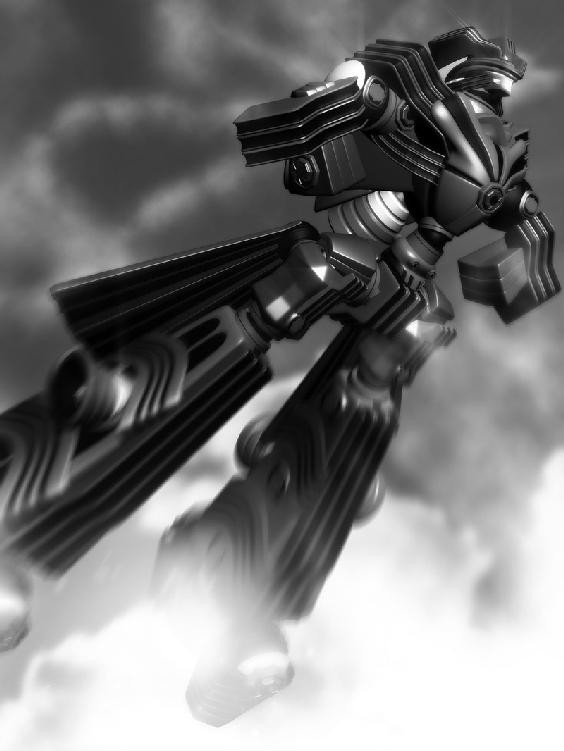

| リズベルルの魔６ レアンドル篇～彼方の白影～ ほんとうの物語シリーズ | |
| ときてっと | |
| TOKITETO (2016) | |
リズベルルの魔６ レアンドル篇～彼方の白影～
ほんとうの図書館１
「ぷは～っ!!」
最後のページを捲り終えるのと同時に、膝の上のミューメルがそんな風に息を吸い込んだので、イユレールはもう少しで椅子から転げ落ちる所だった。
はぁ、はぁ、と息を切らし、お腹を上下させているミューメルの頬をつんつんとしながら、余韻も何もあったもんじゃ無いわね、とイユレール。
「もしかして、ず～ぅっと、息を止めてたわけ？」
「うん！ なんか緊張して！」
なにそれ、とイユレールは笑い、そもそも貴女、機械妖精なんだから呼吸は必要ないんじゃない、と指摘すれば、ミューメルは目をぱちくりさせて驚くので、ますます可笑しい。
ふわりと浮かびあがり、ミューメルは頬を押さえてくすくすと笑い、それからイユレールの頬に顔を寄せ、自分の頬をぴとりとくっつけ、目を細める。
気付くとイユレールもミューメルも、二人してお腹を抱えて笑いだしていた。
「あ～、可笑しい。たまには貴女と物語を共有するのも、良いかもね」
「ね～」
一頻り笑うと、イユレールは急に懐かしい様な、切ない様な気持ちになり、ミューメルの髪を撫で、赤い本の表紙にそっと触れた。
いつもなら、物語を読み終えると司書さんが来るんだわ。そうして懐中時計を取り出して、閉館の時刻を告げるのよ......。
けれど今日、コルグストムは不在。この図書館にはイユレールと、そしてミューメルの二人きり。
悪戯心がわくわくと沸いてきて、イユレールはミューメルに囁いている。
「ねえ、もう少し続きを読んでみない？」
「え、でもー......」
良いじゃない、と笑って見せれば、ミューメルは少し眉を潜めて、けれどもその瞳に好奇心の色を輝かせながら、待っている。
イユレールが強引に本のページを捲るのを期待して。
今日読み終えた物語は既に二つ。こんなに沢山の物語をいっぺんに読むだなんて、それこそ贅沢だわ。
時に物語は何にも代えがたい甘美な快楽の様に人を誘う。麻薬の様に心を掴んで離さない......そうした魔力に、イユレールは取りつかれていたのかもしれない。
森の中でミューメルの宅配を待っているであろうランバートの事がちらりと気にかかったが、まぁ良いでしょう。
イユレールの心は決まっている。
「せっかく司書さんが留守なんだもの。ちょっぴり冒険、しちゃいましょうよ」
「う、うん......！」
そうして手をかける赤い本。
先程読み終えたのは最後のページだった筈なのに、いつの間にか続きが増えていて、ほら......やはりこの物語もイユレールを呼んでいる......微かな緊張に指を強張らせながら。
イユレールは、新たなページをそっと開く。
１．くじら工房
雲の見えない良く晴れた夜に、父は言ったものだった。
天上をたゆたう波を指差して、その光の帯の神秘的な瞬きに顔を綻ばせ、少年の様な無邪気さで、グレンに語ったものだった。
「男なら、外の世界を目指せ」
外とは何処か、と尋ねれば、父は眉を顰めて口元を緩め、呆れた風に小さく嘯きながら決まってこう返す。
「何にでも意味を求めるのは無粋だぞ。正確な解を求めた時、魅力ってのは失われる......何においても、な。しかしあえて言うならば、それは結界の外にある。あの大結界の向こうよ」
目を輝かせるとはこう言う事を言うのだろう、とグレンは父の目を見つめて頷き、今度は声に出さず、その意味を問う。
「俺はいつか、辿り着いて見せる......そして捕る。奴を、な......」
いつしか父の熱はグレンにも移り、息子がごくりと喉を鳴らしたのを目敏く見抜いて、父シルバは笑みを広げ、顔を近づけて......。
声を潜めて言ったものだ。
「くじらを、な」
父は死んだ。
整備中の弦奏鎧の下敷きとなって。
もう３年程前の事だった。
「ま～たこんな所で寝て、風邪ひいても知らないんだから」
カーテンを引く音。滑車がレールを滑り小気味好く鳴る。
光と共に降り注ぐ声に、グレンは目を開けた
暫く横になったまま動かず、肺を空気でゆっくりと満たし、すっかり頭が冴えた事を確認してからようやく身を起こした。
父から継いだ店、父から継いだ作業場。
くじら工房のガレージに無造作に置かれたソファー。部屋の向きに対して斜めを向いたおざなりな寝床から立ちあがり、グレンは煩そうに頭をかいた。
「知らないんだからねっ」
実際、煩い。
ので、言ってやる。
「朝からうるせえな、ナーギアはよ」
冷めたグレンの呟きに、腰に手を当てて呆れ顔でこちらを見ていた少女......ナーギア・ディームは頬を膨らませ、ふんと顔を背ける。
「な～によその態度。どうせあんたの事だから忘れてるだろうと思って、この！ 私が！ わざっわざ起こしに来てあげたのにっ!!」
「忘れてねえよ。外のトラック。もう積んである」
「わざわざ来てくれたのかい、すまなかったな、ありがとう......くらい言えないワケ、あんたはっ」
「気が向いたらな」
「大体ねえ、レアンドル剣主ディーム家の娘である私が幼馴染のよしみで世話焼いてあげてるってのに、あんたには愛想が無いのよ愛想が。お母様の前ではちゃんとしなさいよ？ うちとの契約が切れたらあんた食っていけないんだから......ってちょっとちょっと！」
こう言う時のナーギアは感情に任せてあれこれとペラペラ喧しいのが常であり、まともに相手をしていると大変疲れるのを長い月日で重ねた経験から良く知っているグレンは、適当に聞き流してガレージを出て行こうとして......。
こうして捕まるまでも、度々繰り返すパターン。日課である。
「あんたねえ、歯磨いてシャワーを浴びて、朝食くらい食べてから出かけなさいよ！」
「ハム切っといて。あとパンだけで良い」
「な、ん、で、私が用意してやんなきゃいけないのよっ！ って、きゃ～っ!! ぬ、脱ぐなっ!!」
シャツのボタンを外しかけたグレンの背を、ナーギアは平手でばしんと叩く。
びりっと肌が震え、顔を顰めてグレンは呻き、恨めしそうにナーギアを振り返って、小さく舌打ち。
「シャワー浴びるんだって。見たくないならあっち向いてろ。で、パンとハム並べといて」
「わかったわよ！ 叩いてごめんねっ!!」
果たして謝罪の意思がどれだけ籠っているのか判らぬ声でナーギアは叫び、キっとグレンを睨んではぱたぱたと駆けて行く。
朝から本当に、煩いったら無いぜ、と口の中で転がして、グレンは溜息を吐いた。
パンにハムを挟んでいっぺんに頬張り、それを適当に水で流し込む味気無い朝食を終え、車庫に止めてあったトラックに乗り込むと、助手席にはもうナーギアが座って、憮然とした表情で待っていた。
「ちゃんと用意してるんじゃない。グレンの癖に」
生返事してキーを差し、ハンドルを握れば、ぐいっと顔を近づけて来るナーギアである。
「危ねえな、なんだよ」
「ごめんってば」
「あ？」
「さっき叩いたの怒ってるんでしょ。ごめんねって言ってるじゃない」
「いちいち怒ってたら身が持たねえよ」
何を言い出すかと思えば、とグレンが笑えば、ナーギアはむっとした表情で息を吸い込み、一瞬顔を赤らめた後、風船が萎むみたいに小さくなって、それきり何も言わなかった。
いつもの事なので、グレンは特に気にせずアクセルを踏み出す。
万一にでも積み荷が傷つかぬ様、慎重にトラックを走らせる。
このレアンドルの守りの要たるアスバード砦もまた、他の例外で無く街の中心に位置している。
エンダージェン国を絶えず浸食で脅かす黒海を退ける為の、守護の盾だ。
何処かのお節介ナーギアのお陰で時間にはまだ余裕があったので、グレンはトラックをとろとろと走らせた。
慣れた調子で門番に挨拶をして乗り付け、そのまま砦の敷地をぐるりと回って、建物と直結している飛行船の傍に車を停めた。
道中押し黙ったままであったナーギアはトラックから飛び出すと途端に元気を取り戻し、飛行船へと駆けて行ったかと思えば、次にはトルフ級弦奏鎧と共に戻ってきた。
砦が盾ならば、この見上げる程もある巨大な鎧は外界より招かれる魔によって動く剣である。
流石は次期剣主、との言葉は飲み込んで、グレンは荷台を顎で示し。
「丁寧に運べよ」
「あんたに言われるまでもないっ！」
むっとしながらもナーギアはトルフ級との感応を高め、その巨大な鎧の腕で荷台に乗せてあった荷物をそっと持ち上げる。
重々しい足音を響かせながら行くトルフの後を追う様に二人続いて飛行船へと乗り込めば、レアンドルの守護鎧にしてガストルフ級弦奏鎧・パラギアスは既に広間に寝かせてあった。
静謐を湛えて眠る片腕の巨人を一瞥し、無言でナーギアに指示を送れば、慣れたもので彼女も疑問を挟む事無くそれに応える。
静かに床に下ろされた荷物を覆っていた布を開けば、その下にあるのは人の胴周りよりも遥かに太い巨人の右腕。それはパラギアスの腕である。
グレンが一人営むくじら工房は、このレアンドル唯一の弦奏鎧工房にして、ディーム家お抱え工房でもあるのだった。
「仕事するから」
「あっそ」
冷たく応えるが、ナーギアはその場を去るどころかトルフ級の足の上に腰を降ろし、頬杖を付いてこちらを見つめる。
こうして意地になればナーギアを動かす事は梃子でも難しいとグレンは重々承知していたので、追い払う事は諦めて作業を始めた。
どうせ毎度の事、である。
パラギアスの右腕、その関節部、リング状のカバーを持ち上げ、旋輪と呼ばれる部品を取り外す。
本体の接続部奥へと手を伸ばし、ロックを外して５本の弦を引き出した。それぞれに爪が付いている。
一本一本確認しながらそれらを旋輪へと繋げ元の場所に戻せば、本体側が右腕の存在を感知してゆっくりと肩を滑らせる。
あくまでも機械的な反応であるその動きに合わせて、グレンは巨人の右腕を力一杯押した。滑車が敷いてあるので、一人の力でも動かせる。
右腕を載せた滑車はぎこちなく滑り出し、そのまま本体に吸いつく様に接続される。重々しい金属音。
工具箱にかけてあった布を取り、丁寧に関節を磨く。此処でしくじると面倒なので、慎重に不備が無いか再確認する。
問題が無い事が判ると、次にグレンは弦奏鎧の本体へとよじ登り、今しがた弄った右肩を覗き込んだ。
奥まった所に弦が見える。手袋をした指で弾き具合を確かめ、専用の工具を差し込んで、奏舵主の癖に合わせて少しキツめに調整を施した。
良し、と頷くと、それを待っていたかのように後ろから声がかかる。
「御苦労さま、グレン」
振り返ると、数人の騎士を伴い、入口に一人の女性が立っていた。
レアンドル剣主、アナメア・ディームその人である。
ナーギアが勢いを付けて立ちあがり、凛とした声で言う。
グレンの前では昔と変わらず子供っぽい態度を取る事もしばしば......いや、むしろ子供時代そのままであったが、ナーギアは母の前ではどうにも格好を付けたがるきらいがあった。
「おはようございます、お母様」
「ええ、貴女もご苦労さまナーギア。グレン、ナーギアが迷惑をかけなかったかしら」
「いや、いつも助けられてばかりですよ。今朝も、な」
無論皮肉であったが、ナーギアは少し嬉しそうに顎を引き、それから母に拗ねて見せる。
「もう、お母様ったら！」
「ふふ......早速具合を見ましょうか、二人とも少し離れて」
言うや、アナメアの招いた魔がパラギアスに宿る。
弦奏鎧を操るのに、鎧そのものを着込む必要は無い。奏舵主は鎧を魔で満たし、それと感応する事で自在に操るのである。
弦奏鎧特有の駆動音を鳴らし、金属の体を軋ませながら、レアンドルの守護鎧たるパラギアスがゆっくりとその身を起こした。
アナメアが拳を握るのに合わせて、パラギアスもまた指を折る。
「良いですね」
呟き、頷いて、アナメアは視線で以って魔に命ずる。
パラギアスはその背に腕を伸ばし、王より授かるとされる宝剣・ランスニールの剣を抜き放った。
守護鎧が一振りすれば、その短い切っ先は鐘を打ち鳴らす様な音と共に真の刃を現す。
刃が通った空気が裂け、緩やかな風が巻き起こりグレン達の髪を揺らした。
「心地良い響きです。グレン、腕を上げましたね。シルバの調律に匹敵する......いいえ、それ以上かしら。私好みの音色」
「そりゃどうも」
グレンが唇を持ち上げると、アナメアも微笑む。
後ろで控えていた騎士が眉を上げ、ナーギアが視線を投げて寄こした。
言葉使い、ちゃんとなさいっ！
「それでおばちゃん、追加予算の件だけど」
「ええい、黙って聞いておればくじらの小僧！ アナメア様に何と言う口の利き方を！」
「まぁまぁ、グレンはいつもの事じゃ無い」
グレンの態度を見かねて遂に声を荒げた騎士を、ナーギアが宥めるが、その目はグレンを睨んだまま。
アナメアがくすくすと笑いながら首を振り。
「良いのですよ。予算の件も判りました。調律の支払いと一緒で良いですか？」
「約束してくれるなら、後回しでも良いぜ。おばちゃんの都合の良い時で構わない」
「アナメア様、グレンの奴を甘やかすのは如何なものかと思いますぞ！」
「それはど～い」
騎士とナーギアのじとっとした視線を一身に受けて、流石のグレンも首を竦めるが、アナメアは笑みを絶やさない。
「昨今、空の亀裂が脅威となっています。フェアルージュ、リィガイムと立て続けに救ったのはシェラダンの黒き魔人が駆る天舞う音色、ヴィルフォーナだと言うではありませんか。何れこのレアンドルでも同じ事が起こるかもしれぬと思えば、飛行型弦奏鎧の建造は急務。私はくじら工房を信頼していますからね」
「し、しかしですな......この小僧の事、本当に作業を進めているのかどうか......怪しいものだ」
「貴方が弦奏鎧をどれ程知っていると言うのです。ガストルフ級弦奏鎧ともなれば、名工であっても一族三代に渡る大仕事。祖父、父の代と来て、シルバ亡き今あれを完成させる事が出来るのはこのグレンだけなのですよ」
決して声を荒げた訳では無かったが、それ故にアナメアの凛とした声には迫力があり、小言を洩らした騎士はびくりと背筋を伸ばし押し黙る。
もう行ってよろしい、とアナメアが首を振れば、これ以上のとばっちりは御免だと騎士達は小走りで逃げ出した。
去り際、その顔に苦笑の色が浮かぶのは、相も変わらず我らが剣主はくじらの小僧に甘くて困る、とでも思っているのだろう。
グレンは頭の後ろで手を組んで、パラギアスを見上げて呟いた。
「飛行型に改造したのは親父の代からだし、俺の代で完成するか怪しいけどな」
「ゆっくりおやりなさい。シルバの目指したものを......貴方の目指すものを信じて。しかしグレン、この仕事を続けて行くならば、もう少し味方を作る事を覚えたほうが良いかもしれませんね。手が足りぬなら、人を使う方法も」
「足りなきゃその辺のを雇う事もあるし、集会にも顔は出してる。俺は、」
パラギアスを見つめる目を細め、それからグレンはかっと燃える様な爛々とした笑みを浮かべ、アナメアを見た。
「俺の目指すものを信じてやるだけさ」
グレンの言葉に、アナメアは満足気に頷く。
ナーギアが普段とは違う熱を帯びた視線を向けて来る事に気づいてはいたが、グレンは無視をした。
一仕事終わってもう他に用事は無いと飛行船を後にするグレンの後ろから、慌てた様にナーギアが走って来る。
のんびりと歩くグレンに、一体全体何を四六時中怒る事があるのやら、肩を怒らせて並ぶナーギアである。
「ちょっとあんた、何処行くのよ！ 帰るの!?」
「帰るよ」
「帰ってどうするのよ!?」
「寝るよ」
「寝る!? さっき起きたばかりじゃ無い!?」
呆れたわ、呆れ果てたわ、と眉を吊り上げるナーギアをちらりと一瞥した後、グレンは頭の後ろで手を組んで空を見上げ、それがどうしたと言う風に答えるのだった。
「集中力の要る仕事でね。ガストルフ級の調律って大仕事を終えたあとは休むに限る。今日明日と休んで、作業はその次からだな。逸る気持ちのまま手を進めると、普段絶対に見落とさないと思う様な事を忘れるんだ。そうしてうっかりミスをして、時に人は死ぬ。弦奏鎧の下敷きになって死んだ間抜けな親父みたいにな」
「なっ、あっ、そ......シルバおじさまは立派な方だったわ！ 良く笑って良く食べて細かい事なんか気にしない度量の大きい方、私憧れていたんだもの！」
褒めているんだかいないんだか、慌てた口ぶりでナーギアが言えば、グレンはやれやれと首を振って、ともかくだなと語気を強める。
こつこつ、とナーギアの頭を小突き、次には自分の眉間を指差して。
「俺のここにもしっかり脳味噌が詰まってるんだからよ。理由があっての行動な訳。そう言うお前こそ俺の後ろを金魚の糞みたくついてきて、暇なのか？」
「～っ!! 女の子にそう言う事言う!? わ、た、し、は、ねっ！ これから剣の稽古もあるし街の見回りだってあるし学ぶ事も沢山あって暇なんかちっとも無いの！ レアンドル筆頭騎士の名に恥じぬお仕事が沢山あるの！ わかる!?」
「はいはい」
自称筆頭騎士と言えど、隊の中でナーギアはまだまだひよっこ、新参者だ。
それを判っているグレンはまだわめいているナーギアを適当にいなそうと視線を振り、ふと砦と隣接するディーム邸の方から歩いてくる二人の女性を目に留めた。
一人はすらりとした長身の美人。もう一人は少し幼さを残した面立ちの、青い瞳の少女である。
「見ない顔だな」
「ああ、レイル先生と助手のリズベルルよ。一週間ほど前から邸に滞在しているの。空の観測に来ているのよ」
「空？」
「レイル先生は以前にリィガイム上空の亀裂を発見した方なの。ドレッド家のコルネリー嬢の家庭教師を務めていた事もあったんですって！」
リィガイムの名家、ドレッドの名を口にして、ナーギアは少しばかり嬉しそうに声を上ずらせる。
ドレッド家は長らくリィガイムを治めて来た剣主の家系で、街の守護弦奏鎧オルグマトンはパラギアスと同じくエフェメルス式と呼ばれる形をしている。
他には無い巨腕が特徴で、それは時に豪快な武器となり、堅牢な盾となる、ガストルフ級の中でもとりわけ勇猛な逸品だ。
アナメアの駆るパラギアスと同じ型の弦奏鎧を受け継いでいると言うだけで、ナーギアは面識も無いドレッド家に一方的な親しみを覚えているらしかった。
何とも単純な奴である。
「丁度良いから紹介するわっ」
止める間も無く駆けて行くナーギアに仕方ねえなと呟きながら、グレンは小さく溜息を付く。
空の観測だか何だか知らないが、どうも客になりそうも無い相手である。
とすれば興味は無いのだが、手招くナーギアに従わないと後が怖い。
もう一度深く息を吐いて、グレンは三人へ向けて歩き出す。
「初めましてグレン。ナーギアから話は聞いているわ。飛行型の弦奏鎧を作ってるんですってね」
「まあ」
こう言う時、愛想笑いを浮かべるくらいの礼儀はグレンも持ち合わせている。
差し出された手を軽く握って返せば、レイルと言う研究者は顔に似合わず意外とがっしりした指をしていた。
一転、怪訝な顔になるグレンである。どうやらナーギアは気付いていないらしい。
「こちらはリズベルル。私の共同研究者よ」
「助手じゃ無くて？」
「あ、助手です」
「共同研究者よ」
「助手、みたいなものです」
肩を竦めるレイルと、助手だと言い張るリズベルルに首を傾げながらもグレンは彼女とも握手を交わした。
こちらは繊細な硝子細工みたいな細腕で、柔らかな指の感触は品の良い顔立ちと相まっていかにも良い所のご令嬢と言った風で、少なくとも研究者然とはしていないかもしれぬとグレンは密かに思った。
「レイル先生もリズベルルも、使える様ならグレンの事を使ってやってください！ グレンも空ばっかり眺めてるから、何か役に立つかも！」
「まぁ、それは助かるわ。私達も、空を飛ぶ弦奏鎧には少し知識があるから、お互い協力できれば良いわね。ね、リズ？」
「はい......でもそれ、内緒なんだけど......」
「あら、そうだった」
うふふふ、とわざとらしい笑みを浮かべるレイルに、此方も微笑みながら困った風に首を傾げるリズベルル。
何の事だか判らないグレンとナーギアは顔を見合わせた。
グレンはぽつりと尋ねている。
「空って、あんた達何を調べてるんだ。黒海の事か」
「それもある。まあ色々ね、例えば......この世界の外の事とか」
そうしてレイルは空を指した指を、ゆっくりと街の向こう。
世界の果てへと滑らせた。
活気ある街並みを通り抜け、外れの森をずっと行けば、その向こうにあるのは世界の果て。
白く色濃い霧はこの世界を包み、外からの侵略を防ぐ結界の粒子であり、その中に天高く聳えるのは水門と呼ばれる神秘の柱。
その前に立つ、一人の男。
霧の中に落ちる闇色の出で立ち。
頭の天辺からつま先まで漆黒に身を包んだ王の使者、シズマである。
背後に従えるは、こちらも王の弦奏鎧。黒き装甲に金の装飾を施したその名を、バルグターム。
バルグタームを動かすのは、シズマ自身が内に秘める魔。
形骸を持ち、球の魔とされる彼の存在を消費して、球の印の弦奏鎧は剣を掲げる。
普段は口にしないその剣の真の名を、シズマは唱えた。
「王の魔剣......ベルセイバーよ！」
シズマが命ずれば、バルグタームが動く。
軋みを上げて動き出した弦奏鎧が魔剣を掲げ、一閃の元に門の前に漂う霧を打ち払った。
ベルセイバーの輝きが過ぎ去った時、水門は僅かにその口を開け、ごうっと奈落の音を発する。
垣間見える、闇。
霧が流れ込むその向こうから、何者かがゆっくりと近づいてくる。
人、だった。
少なくとも、シズマの目にはそう映った。
「......俺を呼んだのは、お前か......」
目の前までやってきた、それを見据え、シズマは尋ねる。
「お前は、何者だ」
「我が名は、エルデイル......導く者」
水門の向こうからやってきた者。
桔梗色に染まった長い白髪を揺らして、金の瞳をしたその少女は、シズマを見上げそう名乗ったのであった。
ナーギア達と別れ工房に戻って来ると、グレンは少し早足でガレージの中を横切って、壁際のレバーを力強く倒す。
天上のレールをロープが滑って、ガレージのスペースをかなり占めていた黒い布が巻き取られる。
僅かに積もった埃がばさりと言う布音と共に舞い上がり、その下から現れたのは、巨大な躯。
それは冷たい金属でできた、巨人の体。
グレンがこれから命を吹き込もうと言う、ガストルフ級弦奏鎧。
名をニールギガス。
弦奏鎧は未だ完全で無く、四肢は本体と接続されていないばかりか、腕部に至っては形になってさえいない。
とは言え、既に最低限の機能は有しており、父の代に試験飛行も成功させていたらしい。
らしい、と言うのはグレンがその場に居合わせなかったからであるが、それが嘘で無い事は弦奏鎧に直接触れた時に判っていた。
こいつは、飛べる。
横になった姿勢で沈黙しているニールギガスの体にそっと手を触れながら、グレンは不意に高まり出す鼓動を抑えようと努める。
ナーギアにああ言った手前、今日明日と時間をおくべきだろう。逸る気持ちで作業を進めれば、それがかえって完成を遅らせる事になりかねない。
「何事も慎重に、だ」
呟き唇を緩めて、グレンは首にかけた紐を手繰り寄せ、服の下に下げていたペンダントを手に取る。
金の輪っかに綺麗な宝石の嵌めこまれたコンパスで、グレンはそれをくじらのしるべと呼んでいた。
「来るぜ、奴が......もうすぐ、来る」
先程よりも獰猛な、荒々しい感情が胸の底からふつふつと高ぶって来るのを感じながら、グレンはくじらのしるべを天へと掲げた。
コンパスに光が灯り、淡く瞬く。
シェラダンの街外れ。小鳥が歌う森のトンネルを抜ければ、開けた場所に立ち並ぶ墓石が見えて来る。
一人歩くノルアードは、恩師の眠る墓を見つけると、ゆっくりと膝をついた。
暫し無言で、石に掘られた名前を見つめる。
「ご無沙汰しております、ラスティノフ先生」
呟いて、ノルアードは目を閉じ、深く頭を下げた。
心はかつての記憶へと沈み、懐かしい匂いを嗅いだ様な気がしてはっと目を開ければ、無論周囲の光景は変わらず、木々のざわめきと鳥の鳴き声が微かに聞こえた。
「リズベルルの代わりと言う訳ではありませんが、まぁたまに顔を出そうと言う次第で......彼女は今レアンドルに赴いているのです。先生も覚えておられると思いますが、あのレイルランドと一緒に。やはり先生の影響でしょうか......近頃リズベルルはこの世界の有り様に関心を持った様で、何やら難しい考え事をしているのです。リズベルルは......」
次々と湧き出す様に頭の中を埋め尽くす言葉達に、ノルアードは何と続けるべきか、何から話すべきかを悩み、遂には声を失って、深く息を吐いた。
不思議と思い浮かぶのは、ラスティノフの姿と、もう一人......行方知れずの父の姿。
ノルアードの父、シェラダン先代の剣主は、水門の儀の折に姿を消した。
ノルアードに守護弦奏鎧シェルヴァランスと、水門の鍵たる聖鍵ヨスフートを残して、行方知れずとなったのだ。
この墓地に、父の墓は無い。
そんな事はある筈無いと判っていても、ノルアードは未だ何処かで信じているのだ。
父は、きっと遠くで生きている......と。
「先生......父上......」
彼らは、自分の目標だ、とノルアードは思うものだ。
時に優しく、時に厳しく自分の行く末を見守り、手を引いてくれた大人達。
そして、その姿と重なる様に浮かぶのは、リズベルルの笑顔。
彼女もまた自分の目標である、とノルアードは考える。
ラスティノフや父が超えるべき目標であれば、リズベルルは共に歩みたいと感じる存在。
「リズベルルは......近頃、綺麗になりました」
ぽつりと呟き、ノルアードはリズベルルの父親であるラスティノフの前で、心情を吐露する。
「待ちの時も終わりが近いのかもしれない......早く手に入れてしまわないと、彼女は遠くへ行ってしまう。時折そう不安になるのです」
いつまでも、相手が傍に居ると思ったら......それは違う。
いつかのジンの言葉が脳裏を過る。
あの時ジンには釘を刺されたものだ。あれからもう、随分たった。
リズベルルは、一人前の女性になりつつある。最早悠長に構えている暇は、無い。
「ぐあぁぁぁ、しかし今更関係を進めようにも現状が崩れてしまうのが怖い！ 先生！ 父上！ 俺はどうしたら～っ!!」
墓前で髪をぐしゃぐしゃにかき混ぜて呻くノルアード。
剣主の心中とは裏腹に、空は澄み渡り鳥さんがぴよぴよと鳴いていて、本日もシェラダンは長閑であった。
「な～にやってんだあれは」
「娘さんを俺に下さい、って奴じゃ無いか」
墓地で一人葛藤しているノルアードを木陰から眺めながら呟くのは一人と一匹。
シェラダンの騎士にして黒き魔人と謳われるジンと、森の王者を自称して憚らない灰色猫、アオゾラである。
人は知らない。ジンが剣の腕に関しては素人にも等しく、このアオゾラが人語を話す猫ちゃんである事を......。
「出るに出られないじゃんかー」
ぼやくアオゾラの尻尾を引っ張って、ジンは首を振る。
誰だって一人になれば奇行に走りたくなる日もあるだろう。
天気も良いしピクニックついでに墓地の掃除でもとやってきたが、此処は何も言わずに去ろうでは無いか。
見なかった事にしよう。
「武士の情だ......行くぞ、アオゾラ」
「へいへい。あと尻尾ひっぱるのやめて」
ふー、と威嚇の声を上げるアオゾラにジンは肩を竦め、木陰を離れると来た道をゆっくり歩き出す。
少し前をぽてぽてと歩きながら、アオゾラはにゃーと真っ当な猫みたいに鳴いて。
「早くリズ帰って来ないかな～」
「何だ、リズベルルに会いたくなったのか」
「んー、リズの飯が食いたい！ ジンの飯はガサツだから嫌」
あ、そう。
「人間の飯も飽きたから、今日はカリカリにしよう！」
「意外と安上がりな奴だな......」
「ま、飯の話は置いといて、あの様子じゃあリズに会いたいのはノルアードの奴だろ。そもそも良く男と二人出かけるのを黙って許したもんだよな～」
「ノルアードは、リズベルルがやりたいと言ったら止められないのさ。レイルは信頼出来る相手だし、そもそも純然たる男かと言うと、微妙だ......」
「あ～」
納得した様にアオゾラは頷いて、ぽてぽて歩きを止めてスキップし出す。
まるで映画の中から抜け出た様なその動きに、ジンは思わず笑ってしまった。
調子に乗ったのか、アオゾラはぶんぶんと首を振りだす。
「へへへへへいわだなぁ～」
ぶれた声で、アオゾラが言う。
「くちゅんっ」
「あらやだ、風邪かしら」
心配気に顔を覗き込んでくるレイルに、リズベルルは口元に手をやって恥ずかしそうに笑んで肩を縮ませる。
ふるふると首を振って、頬をかく。
「ただのくしゃみです。誰かが噂したのかもね」
「ふふ、きっと良い噂ね。でも気を付けなければ駄目よリズ。貴女に風邪を引かせたりしたら、私がジンやノルアードに怒られちゃう」
「そういう時は、二人とも私の事叱ってくれるよ。体調管理を怠らない様に気を付けましょう、ってね。レイルのせいになんてしません。大丈夫」
「ジンはともかく、ノルアードはどうかしらねぇ」
含みのある声で言って、レイルは望遠鏡を覗き込んだ。
暫く息を潜めて空の様子をじっと窺う。並び立ち、リズベルルもまた青い空を見つめていた。
「やっぱり近くなっている......リズはどう思う？」
「......うん、昨日よりレアンドル寄りかな。最初に見た時よりこっちに寄って来たね。高度も下げてる。意外と素早いんだ」
レイルと交代に望遠鏡を覗き込み、リズベルルもまた同意した。
アスバード砦の塔から二人が眺めているのは、空の向こう。
このエンダージェンを覆う大結界である。
国土をすっぽり包む......あるいは外界とこの国とを隔てる、三角錐状の壁とでも言おうか......その大結界の表面には、絶えず黒水が流れていた。
エンダージェン国を浸食せんとする脅威も、結界の中から覗く分には美しくもある光景だ。
リズベルルとレイルが今調べているのは、その黒水に生ずる波紋であった。
黒水は当然流体であるので、外から影響を受ければ波紋が生ずる。
大結界の仕組みを観察するうちに、レイルはその波紋が一定の周期で形を変える事に気付いた。
つまり、発生源が移動しているのだ。
大結界の外に波紋を生じさせる何かがあるのだとしたら、それはレイルの長年の研究、大結界を生み出す存在に繋がるものかも知れない......と言う訳だ。
「リズがいるといちいち記録を付けなくて良いから助かるわ。相変わらず記憶力抜群なんだもん。羨ましい」
「あんまりアテにされても困ります」
二人でにっこりと笑みを交わしながら、手元のノートには早速記録を付け始めている。
望遠鏡にカメラを取り付け、何枚か写真も撮った。
毎日決まった時刻に撮影するのは、別な日との比較をする為だ。
「これでよしっと」
労わる様にカメラを撫でて、満足気に頷くリズベルル助手である。
弦奏鎧の下で青白い顔になった父を見つけたのはグレンだった。
その時グレンは父に頼まれた買い物を済ませて工房に戻ってきた所で、ガレージの光景に一瞬言葉を失くし、動く事が出来なかったのを覚えている。
驚きと、何よりも呆れ。
いい加減な父だと常々思っていたが、まさかロックをかけ忘れてクレーンを動かし、案の定倒れて来た弦奏鎧に潰されて死ぬとは、間抜け極まれり、と思ったものだ。
助けを呼ぶか、と悩んだのはほんの刹那の事である。顔を見れば生きていない事は一目瞭然で、むしろその時グレンの脳裏を過ったのは、この弦奏鎧の奏舵主に何と言い訳すべきかと言うものだった。
葬儀ではグレンよりもナーギアの方が泣き、ぽろぽろ涙を溢しながらグレンを抱きしめて何度も呟いていた。
「シルバおじさまが亡くなっても、あんたは一人じゃないわ。私もお母様も、あんたの味方だからね」
ナーギアは父に良く懐いていたから、あれはグレンの為と言うよりも自分を支える言葉だったのかもしれない。
グレンがくじら工房を継いで暫くした後、ふとした思いつきで父の墓を見に行った時も、感慨は浮かばなかった。
悲しいかと言われれば悲しい様な気もするが、ああ、死んだのだなぁと言うのが正直な所で、むしろグレンの心は軽々とし、枷が一つ外れた様な気さえしていた。
墓の前でぼんやりと立ち、あの時グレンはこう呟いたのだ。
「くじらを捕るっつー話はどうなったんだ」
あの時の事は、忘れもしない。
「くじらをお探しかね」
背後から不意に声がして、グレンは驚き振り返った。
そこには老人が一人立っていて......忘れもしない、と言うのは訂正だ。
あの時話しかけて来た老人が、どんな顔立ちでどんな声だったのか、グレンはさっぱり思い出せないのだ。
何か存在感が妙に薄いと言うか......ものが残っていなければ、グレンはあの出来事を夢だと思った事だろう。
「くじらをお探しかね」
老人はそう二度呟いて、グレンに何かを差し出す。
促されるままに受け取れば、それは金のコンパスであった。
「空の向こうは広いぞ、少年」
あの時、グレンは不思議と老人を追いかけようと言う気にはならなかった。
問い質そうと言う気にもならなかった。
ただ、コンパスを手にしたグレンの胸には、たちまち燃え上がる炎の様な想いが揺らめき、言い様の無い活力が湧きあがっていたのだ。
「くじら、か......おもしれぇじゃねえかっ！」
突き詰めた理由も無く、何よりも情熱を根拠に、グレンはその日からくじらを捕る事を決めたのだ。
そうして、初めてグレンは気付いた。
自分が父を愛していた事を。
それまで疑問に思っていた心の軽さが、喪失であった事を。
「あ、もうお店の準備が終わっているわ！ じゃあ私行ってくるから、ダルカスは待っていてね」
「お気を付けて」
聞き分けの良いダルカスによろしいと頷き、ネムリー・マーネルは車を降りる。
初めの頃はネムリーが少し出歩くのにも護衛と称して付かず離れずくっ付いて来たこの騎士も、散々言って聞かせたかいもあって少しは譲歩する気になった様だ。
私の愛するフェアルージュに、このネムリー・マーネルを傷つけようだなんて族が居るかしら。
もしいるのなら今この場に連れてらっしゃい、その方の不満が無くなるまで私は努力するわ！
「やっぱり凄い人気ね、ピーターエルは！」
フェアルージュ一の書店の前には既に長蛇の列が出来ていて、それを見るやネムリーの心も楽しげに弾んだ。
今人気の絵本作家、ピーターエルの新作が今日から書店に並ぶのだ。
大々的に売り出されるとあって、書店の前には新作発売の看板と共に絵本の山が築かれ、登場人物に扮した店員が手渡しで本を売っている。
「おい、ネムリー様がいらっしゃったぞ」
「まあ本当。相変わらずお美しい麦穂の様な金の髪、それに上品に澄んだ瑠璃色の瞳も素敵だわ」
「愛らしくも凛々しいお方、深紅の妖精姫......まるで絵本から抜け出してきたよう」
ネムリーの登場に気付いた人々が、口々に囁く。
絵本が待ち遠しいからかしら、今日は皆さんやけに詩的ね......等と内心肩をすくめながら、ネムリーは列の最後尾に並んだ。
一瞬の静寂の後、列がざわめく。
「あら、私絵本を買いに来たのよ。ピーターエルの列でしょう、ここ」
「そ、そうですが、何もお並びいただかなくてもっ！」
慌てるあまり舌を噛みそうになるご婦人に首を傾げると、彼女は手で前へどうぞとネムリーを促す。
譲ってくれるのかしら、と一歩進めば、次に待つ男性も微笑んで身を引いた。
「普段のお礼です。どうぞ前へ」
「何だかずるしてるみたいで悪いわ。でも、ありがとう」
ネムリーがにっこりと笑えば、皆ほうっと息を吐く。
それだけで先を譲るかいがあるものだと、次の人も次の人も順番をネムリーに譲り出すので、待つ暇も無くあっという間に先頭に辿り着いてしまった。
「あら貴女、お喋りガエルのモリスンが好きなの？ 私もよ、気が合うわね......って、あら、もう順番が回ってきちゃった！」
「ネ、ネムリー様！ わざわざお越しにならずとも夕方にはお邸へお届けしましたのに！」
「ごきげんよう店長さん。それは大変ありがたいけれど、お買いものの楽しみを奪うのは頂けないわ。それに、この方が宣伝になるでしょっ！」
最後には小声になってネムリーが囁けば、これは参りましたなと頭をかく書店の店主である。
早速絵本を包み出すので、ネムリーは身を乗り出した。絵本の登場人物、かぼちゃ亀に扮した店員を指差して。
「店長さん、私かぼちゃ亀さんから受け取りたいの。良いかしら？」
「ええ、ええ。勿論ですとも！」
店主に手招かれぎこちなくやってきた仮装の店員が緊張した風に絵本を差し出せば、ネムリーはそれを受け取り嬉しそうに笑んで、かぼちゃ亀へとぎゅっと抱きつく。
長蛇の列がわっと沸いて、羨ましげに溜息を吐いた。
「は～、やっぱり出かけて正解だったわ！ あんな楽しい仮装の出し物をするだなんて、やっぱりピーターエルって人気なのねっ！」
書斎に戻るや、ネムリーは絵本を掲げて一人盛り上がる。
ほんの気分転換のつもりだったが、今や心は浮足立って仕事も何も手に付かない。
今日は予定を繰り上げて、早速絵本の世界に没入する事にしようでは無いか、と決意を固めていると、こんこんとノックの音。
どうぞ、と声をかければ顔を出したのはダルカスだ。
「お手紙が来ていましたよ」
「ありがとう。わ～、リズからだ！」
友人からの手紙と言うのは何度受け取っても嬉しいものだ。
それでは、と出て行こうとするダルカスの袖を掴み引きとめて、ネムリーは早速手紙に目を落とす。
ネムリーが読み終えるのを見越した様に、ダルカスが尋ねて来た。
何事もそつなくこなし剣の腕も立つダルカスだったが、こうしてネムリーの気持ちを察してくれるのが一番信頼を置ける所だ。
「手紙にはなんと？」
「リズってば今レアンドルに居るんですって！ あのオークションに本当に参加するつもりなんだわっ！」
「オークション、ですか」
「そうよね、せっかくシェラダンと隣り合ったレアンドルで開かれるんですもの......見に行かないなんて損だわ。リズベルルが羨ましい～っ！」
ピーターエルの絵本をぎゅっと抱きしめ、ネムリーはスカートを翻しくるくると回る。
自由になったダルカスは首を傾げ、ふと机に目を落とし、書類と混ざって広げてある広告の文字を追った。
絵本の世界・ピーターエル展。
晴々とした空の元、握った剣の感触を確かめて、ナーギアは深く踏み込む。
肺の中の空気が漏れ喉を震わせ、突き出した刃に映る光が雲の影を切り裂いた。
かん、と金属の弾ける音。しまった、と思った時には相手の剣がナーギアの剣を絡め取り、次の瞬間には丸腰にされている。
「まだ見極めが甘いですな。黒海の波は思いもよらぬ動きをするもの。相手がどう動くのか、先を読むのです」
「むぅ......もう一回お願い！ 次は上手くやるわっ！」
「そう焦る事もありますまい。まずはその浮ついた気持ちを宥めてから、日を改めましょう」
「そう言わないで、お願い。今の技を私にも教えてよ」
相手の騎士は少し困った様に眉を落とし、けれども口元には笑みを浮かべて、剣を鞘に納める。
穏かな目でナーギアを見て、幼子をあやす様に言うのだった。
「騎士にとって剣とは心を定めるもの。刃が何故真っ直ぐであるのか、お嬢さまは考えた事がありますか」
「物を良く斬れる様にする......ため？」
「まずはそこから、ですな」
騎士がナーギアの頭をぽんぽんと叩けば、傍で見ていた他の騎士達も穏かに笑う。
ナーギアは頬を膨らませて怒るけれど、瞳に怒りの色は無い。
「私、早く一人前になりたいのよ！ お母様みたいになりたいの！ フェアルージュのネムリー・マーネル様は私より年下の時分から剣主として立派に振る舞っていると聞くわ！ 私だって努力しなくちゃ！」
「その割に、稽古の間もちらちらと空を眺めていた様ですが」
「う......それは～......」
そう問われて、ナーギアは言葉に詰まる。
確かに近頃、空が気にかかる。
晴れ渡り、平和そのものに見える空......けれど、この空を気にしているのは何もナーギアばかりでは無いではないか。
レイル先生やリズベルルが調査しているのも空ならば、お母様が気にかけているのも空......それに、あいつだって。
「グレンが近頃、妙なのよね」
「くじらの小僧ですか」
「空ばっかり見て......ううん、それはまぁ、いつもの事なんだけど......この所前にも増して、と言うか。それも、あっちの方角」
そうしてナーギアは街の向こう。
世界の果てたる水門が聳える方角をじっと見つめる。
グレンは何も言わなかったが、幼い頃から近くに居たナーギアには判っていた。
近頃、グレンは水門の方角を気にしている。
まるで向こうから何かがやって来るのを、待つみたいに。
汗ばんだ服を脱ぎ捨てても心の中のもやは晴れず、ナーギアはシャワーを浴びながら深く息を吐く。
グレンが何を考えているのか、ちっとも判らないわ。
幼いころから姉と弟の様に......向こうは逆に思っているかもしれないが......育った二人であったが、ナーギアは時折こう思うものだ。
そして考えを巡らせていると、決まって思い出すのはシルバの声。
ナーギアはグレンの父、シルバの事が好きだった。父親の顔も名前も知らぬナーギアにとって、シルバの存在はその代わりでもあったのかもしれない。
大きな体。大きな手。幼い頃のナーギアにとって、シルバは大きな人だった。
「シルバおじさま、くじらってなぁに？ どこにいるの？」
かつてナーギアはシルバにこう尋ねた事がある。
くじら工房の看板を指差して、その名の由来は何なのかを聞く小さな娘に、シルバは真剣な顔で答えたものだった。
「くじらってのは、でっかいヤツだ。何処に居るのかは誰も知らない」
「おじさまより、大きいの？」
「ああ、俺なんかよりずっと大きい......ずっと、ずっとだ」
「こ～んなに？」
「こーんなにだ！」
両手を広げるナーギアに笑いかけて、シルバは飛び上がって手を広げる。
そうして、穏やかな声で言った。
空の向こうを見つめて、ナーギアの頭をそっと撫でながら。
「くじらは昔々の生き物だ......それは今では、お伽噺や詩の中にしか残っていない。けれど、そんなにでかいものが一体何処に消えてしまったって言うんだ。俺は多分、空の向こう......この世界の外にこそ答えがあると思う。外界はきっと、くじらの世界なんだ」
シルバは本気でそう考えていたのだろうか。
この空の向こうにはくじらがいると信じていたのだろうか。
だから空を飛ぶ弦奏鎧を作っていたのだろうか。
それでこの世の果てを超えて、くじらに会いに行くつもりだったのだろうか。
シルバがくじらの話をするとき、グレンはそれを少し離れた所でじっとして、静かに聞いていたものだった。
最初は興味が無いのかと思ったけれど、今では違うのだと判る。
多分、グレンもくじらを探している。
ナーギアは思うのだった。
グレンは弦奏鎧を完成させて、くじらに会いに行くつもりなのだ。だから空ばかり眺めているのだ。
志半ばで果てたシルバの代わりに......いいや、彼自身の意志で。
「男の子って、わかんない」
ナーギアは濡れた髪に指を巻き付け、深く深く溜息をつく。
グレンがゆっくりと目を覚ますと、視界に映るのは見慣れた高い天井。
ひんやりと冷たい打ちっぱなしの床の上、強張った体をほぐす様に体勢を入れ替えれば、シャッターの向こうに見える景色はすっかり暗くなっていた。
結局あれから丸一日眠ってしまった訳だ。しかし、昨日は夜通しパラギアスの調律をしていた訳だから、まぁ帳尻合わせの様な物だ。
弦奏鎧、取り分け剣を握る方の手の調律は非常に難しい。
少しの匙加減で音が変わるし、妥協すればそれだけ太刀筋が甘くなる。
肉体的にも、精神的にも消耗する仕事だ。
尤も、一眠りしたお陰ですっかり頭は冴えて、体には健全な活力が漲っていた。
さて、少し起きて図面でも見ようか、と体を起こすと、ぐうと腹の虫が鳴る。
その前に栄養補給の必要がありそうだと笑う代わりに小さく息を吐いて立ち上がり、隅にあった冷蔵庫を開けてみた。
何か口に入れる物は無いかと思ったのだが、予想に反してそこには一人分の見慣れぬ食事が鎮座している。
洒落た魚料理であったが、実に洒落ていたのでグレンには名前が判らなかった。
一先ず美味そうである、と取り出してみれば、皿には一枚のメモが張り付けてある。
取り上げて見ると、綺麗な文字でこうあった。
ご飯はしっかり食べましょう / 感謝する事
「......ナーギアか」
今朝グレンが起きる前に作って置いて行ったのだろう。
こう言う事はたまにある。
ありがたいが、何となく癪なのでいつも手を付けるのに躊躇するのだが、毎度グレンのレパートリーに無い謎の御洒落料理ばかりで、ともかく見た目が良いものだから、結局は腹の虫に逆らえず完食してしまうのだ。
一先ず、これで晩飯は抜かずに済む訳だ。
次に会ったらなんか礼をしてやらねえと、と思いはすれど、未だかつてそれを実行した事は一度も無い。
いつもの事で、それがグレンとナーギアの関係だから、自然な事なのだ。
暗い自室に一人立ち、アナメアは手元のランプにそっと光を灯す。
淡い灯りがぼんやりと部屋を照らして、むしろ黒水の帯が流れる夜空の方が輝いて見える様だった。
静かに窓辺に近づき外を眺めれば、その想いはますます強くなった。
いや、もしかしたら本当に普段より空が明るいのかもしれない。注意深く比べなければ気付かぬ些細な変化。
けれど、今このレアンドルに近づきつつあるものを思えば、納得も出来た。
「また、この季節......私は時々思うのです。貴方は本当に、世界の果てのその向こうへ旅立ったのでは無いか......そんな風に想像する......」
ゆっくりと目を閉じれば、アナメアの心に浮かぶのは青春の日々、懐かしき思い出。
くすぐったい様なその色に酔いながら、アナメアは呼ぶ。
今は亡き一人の男を。
「......シルバ......」
その呟きは、不意にそよいだ風に呑まれて殆ど音にならない。
散らばる髪を押さえながら、アナメアは穏かに、けれど寂しそうに微笑むのだった。
２．来るその時まで
こじんまりとした構えの静かな店に不釣り合いな振る舞い。
ガチャガチャと食器を鳴らしてその少女は食べる食べる......とにかく食べる。
本当ならばもう少し行儀よく食べたらどうなのだと言いたくなる所だが、そうさせないのは少女の愛らしい見た目のなせる所か......。
桔梗色に染まった長い白髪は少女の動きに合わせてぴょこぴょこ揺れ、天真爛漫な金の瞳はくりくり動いて見飽きない。
「おかわりなのじゃ！」
少女が一声上げれば、店員はにこにこと笑顔で次の皿を持ち、周囲の客からはどよめきが上がった。
それに合わせて、シズマの懐はみるみるうちに軽くなって行く......。
「おい、何故そんなに食べる必要がある。十分だろう」
「ノンノン！ これはエンダージェン国の文明発達レベルを図るのに必要なサンプルじゃ！ わらわが見た所......たいへんな成熟具合！ すばらし～」
「どちらにせよ十分だ。次で最後にしてくれ」
「シズマはケチじゃのう～」
足をぷらぷらさせてほうばる少女......霧の中から現れたエルデイルは、その時に見せた神秘性などすっかりかなぐり捨てて、ただ無邪気に笑みを浮かべる。
後ろでは店員が手ぐすねを引いており、次の注文に向けて待機していた。迷惑がっていたのは初めの頃だけ。尋常で無く金を落とす、しかも可愛らしい客とあってすっかり懐柔されていた。
周囲の客の眼差しも奇異から微笑ましげなそれにいつの間にやら代わり、今ではむしろ仏頂面のシズマの方が目立つ始末。
尤も、此処はシェラダン。シズマの黒髪は目立つのだ。
それにしても、シズマの心中をさっぱり気にせず自由に振る舞うこの少女。
何なんだこいつは......半眼でエルデイルを見つめ、シズマは小さく溜息を吐いた。
「最後はデザートじゃ！ プリンをもてい！」
程無くしてやって来たプリンにスプーンを入れ、エルデイルは目を輝かせながら、ふとシズマを見上げる。
最後の注文は大事に......と言う事か、ちびちびとそれを口に運びながら、もごもごと喋り出す。
「わらわに聞きたい事があると言う顔じゃのう。よろしい、話すが良い！」
「散々食った後に言う台詞だろうか」
呆れながらそれでは尋ねさせて貰おうとシズマは切り出そうとして、はて、と首を傾げる。
何を聞こうとしていたのかすっかり忘れてしまっていた。
「......えー」
「太陽の船」
「あ、そうそう。あの、門の外にある太陽の船......要するにお前はあれの何だと言うのだ」
「うーむ、こんな調子で話す事では無いかもしれんが。心して聞くが良いぞ」
「ほう」
「わらわは太陽の船のミディオムじゃ。簡潔に説明すればそうなるのう」
「説明になっていない」
シズマがばっさりと切り捨てれば、エルデイルはスプーンを咥えてふーむと首を傾げる。
最早シズマは一言も発さず、ただ店員の目を見て頷いた。追加のプリンが運ばれてくる。
「ミディオムと言うのは、ガイダンス、インターフェース、コンダクター。そういった類のものじゃな。太陽の船を初めとして、メテオールには大体備わっておる」
「メテオール、とは？」
「このエンダージェンの守護を司る装置の総称とでも理解せよ。管理機関、環境維持装置、防衛機構......大半は眠りについておるがの。年がら年中働いておるのは大結界の維持装置くらいなものじゃ」
「オリンは、太陽の船の事を超空間跳躍船と呼んでいた......今は門の向こうで休眠状態にあるとも......」
「ほう、オリンに会ったか！ その通り。太陽の船は超空間跳躍船であり、他に類を見ぬとてつもない威力を持った超兵器でもある！ わらわが居れば百人力ぞ！」
えっへん、と胸を張るエルデイルであったが、シズマは難しい顔をして押し黙った。
どの辺まで信じて良いのか、良く判らん......。
「わらわが言う事を信じておらぬな、シズマよ」
「そんな事は無い」
「わらわはずっと眠っておった！ だがまどろみの中でこの世界を見守ってもいた。お前達の事も導いてやったではないか。何故信用しない」
「導いてやった......？」
こくりと頷き、エルデイルはプリンを口に滑らせる。それが最後の一口だったのか、名残惜しそうな顔でもぐもぐとした。
「暗がりで心細く二人おったから、手招いてやったぞ。忘れたか」
「......あの時の光はお前が見せたものだったのか！」
驚きの余り、シズマは一瞬息を飲む。
シェラダンの水門の儀の後、ジンと共にシズマは水門の向こうを垣間見た。
そして、帰路につく折り、二人を乗せたヴィルフォーナは闇の中に見える一筋の光の柱を目指して飛んだのだ。
あれがエルデイルの手引きによるものだったなら、この少女はシズマ達の恩人と言う事にもなる。
エルデイルが導いてくれなければ、シズマとジンは〝この〟エンダージェンの〝この〟時空に帰還できなかったかもしれないのだ。
「あれは人の世で何年程前の事じゃったかのう、暫く前からわらわは起きよう起きようと思っておった。しかし、二度寝した。そこにお前達が喧しくやってきたのでぱっちりおめめを開けたのじゃな～」
エルデイルはまるで今朝の出来事みたいにお気楽に言う。
「本当は屈強な大男のボディを作ろうと思ったが、やめた。お前達の様な乱暴者が今のこの国には沢山居る様じゃからのう。戦士の頭数は間にあっておろう。わらわは可愛い要員じゃ！」
「......それで、その、太陽の船は動かせるんだな」
「いいや」
シズマは頷きそうになって、耳を疑う。
エルデイルの言う事が確かならば、太陽の船はオリンの恐れる虚無の軍勢を相手に立ち向かう時に重要な戦力となるだろうと思っていた。
その期待を、エルデイルはあっさりと打ち破ったのだ。
「動かせないのか」
「修復と再起動を並行して行っておるが、まだもう少しかかる。第一、船員がおらぬな」
「船員......それはどうにかなるだろう。いざとなれば騎士達を使えば良い」
「騎士？ 騎士か、それはそのまま戦力とすべきだ。クルーは別に剣とか扱えなくても良い！ そこそこ統率されておれば脳味噌に直接マニュアルを刷り込めるからの！ お気楽集団とかで十分じゃぞ!!」
「......あ、そう」
テーブルの上で手を組んで、シズマは深く息を吐いた。
あまり深刻に考えるべきでは無いのかもしれぬ、と今更のように思う。
大体、何でもかんでも頭に超、とか付いて、胡散臭い。
「それで、オリンは何と言っておった？ そろそろエンダージェンはヤバイかの？」
「......虚無の軍勢が間近に迫っていると。しかし、オリンにも災厄の時期は読めないらしい」
「それなのにオリンは動かぬか！ これは相当ヤバイな。きっとオリンは動けんのじゃな！」
「王は既に黒海に浸食されている......と」
「あちゃー、じゃのう。シズマよ、お前も使者ならば呑気に形骸化等しておらずビシバシ働くべきじゃぞ！」
「だからこうして太陽の船を動かそうと言うのだ。他に具体的には何がある。言ってみろ」
「あ～、導く者達の協力を仰ぎたいのう......判るか？ 導く者とはエンダージェンのキャストじゃ！ オリンしかり、わらわしかり、皆この世界を裏から秘密裏に見守って来た者......散逸した彼らを集めるのじゃ。出来ればミディオムだと尚良い。メテオールを起動させれば色々と有利に働くからのう。ま、その辺は黙ってても一人でやっとる奴がおる様じゃが......」
「あれ、シズマさん？」
含みのあるエルデイルの言葉をシズマが追求しようとした時、不意に後ろから声がかかる。
振り返れば、そこには不思議そうな顔のユフィーユが立っていた。
シズマとエルデイルを見比べて、小首を傾げる。
「奇遇ですね、このお店私気に入ってるんです。ところで、その子......」
「わらわはエルデイルじゃ！」
「エルデイルちゃん？」
「シズマの隠し子じゃ！」
ええ～っ!? と口を押さえて目を見開くユフィーユ。周囲の客も反応する。店員が皿を落とした。
シズマは肩を竦める。
「真に受けるな。そんな訳が無いだろう」
「で、ですよね......あ～、びっくり」
「こいつは俺の親戚の娘だ」
「いやいやいや、それ絶対嘘でしょ」
まだ何か言いたそうなユフィーユに力強く頷き誤魔化して、シズマは席を立つ。
さっさと会計を済ませて刺さる様な客の視線を背に店を出れば、エルデイルはちょこまかとついてきて。
「見ろ、シズマ！ 店員さんに飴玉を貰ったぞ！ ところで、あの娘に会ったのは偶然かの？」
「ん？ それは......偶然だろう。彼女の行きつけの店だと言うから、そう言う意味であれば出会う確率は高かったのだろうが......俺はそんな事知らん」
「ふーん。わらわは運命と言う言葉は嫌いじゃ！ 人は運命では無く、ただ茫漠たる未来に臨むべきだとわらわは思う。しかし、あるいはそうした引力は存在するのかもしれんな」
「何の話だ」
「シズマよ、言い忘れておったが、導く者が全て健在だとは限らん。わらわの様に固有の人格を延々運用する者もおれば、血脈を通じて代替わりするものもおる。世代交代に失敗した者達も中には居るじゃろう。メテオールも、既に動かせる状態では無いかもしれん。けれどわらわはお前達が気に入ったぞ！ 力になろう！ それだけは確かな事じゃ」
見下ろすと、輝く様な金の瞳が真っ直ぐにシズマを見上げている。
何だか良く判らんが、ともかくエルデイルがそう判断を下す材料となったなら、軽くなった財布も報われるかもしれん、とシズマは思う。
その日の空も良く晴れた青。
パラギアスの調律も済み、今日あたりアスバード砦の騎士達がトルフ級弦奏鎧を弄り出す頃合いだろう。
そう考えてグレンが砦に赴くと、案の定広場にはトルフ級が数騎並んでいて、ゆっくりと腰を下ろす所だった。
丁度トルフ級によじ登ろうとしている一人の騎士に、グレンが声を投げる。
「整備か、おっさん」
「む、くじらの小僧か！」
よう、と手を振り、グレンも弦奏鎧に足をかける。
あっという間に騎士と並ぶと、こんこんと鎧の胸を叩いて見せた。
「見てやるよ」
「魂胆は何だ」
「ただの営業。昨日おばちゃんに釘刺されたし」
「貴様、またアナメア様をその様に......！」
「どいてなおっさん」
ガミガミと煩い騎士を押し退けて、グレンはトルフ級の胸部装甲を持ち上げる。空洞がぽっかりと口を開ける中、手を伸ばして腕部との接続部にある扉を押しあければ、ピンと張られた弦が覗いた。
指で弾いてみる。悪く無い音だが、少し硬い。もうじき具合が悪くなる兆候が出ていた。
「おっさん、もう少し刃の滑りを気にした方が良いぜ。結構無理させてるだろ」
「むむ、そうだろうか？」
「あとはこれだ。外から見えないけど、汚れが溜まってる......こんなに。油差すのは良いけど、量が多過ぎる」
「そ、そうか。気を付けよう！」
ボロ布で汚れをふき取り見せると、騎士は慌てた様子で頷いた。
それからはすっかり大人しくなって、グレンが腰、脚部と具合を見るのをじっと横から眺めている。
たまに弦奏鎧の扱いに関して助言を求めて来るので、その都度説明してやった。
次第にグレンの周りには騎士達が集まって来て、皆感心した様に聞き入っている。
「しかしくじらの小僧よ、嫌に気前が良いではないか」
「そんなことねえよ」
「こんな風にタダで見て回っていたら、仕事にならんだろう」
肩を竦めて言う騎士に、グレンも同じ仕草で返して、判ってねえなと言う風に首を振る。
「普段の整備はあんたらの仕事。要所での調律は俺の仕事。あんたらが普段から上手く使ってれば、俺の仕事も後々楽になるんだわ」
「ほう、小僧の癖になかなか立派な事を言う！」
大口を開けて笑った後、騎士は周囲を見渡して声を張り上げる。
隣で聞いていたグレンはその声量に思わず背筋を伸ばした。
「他にも小僧に見てもらいたい奴は居るか！ 口は生意気だが、腕は確かだぞ!!」
そうすると、こちらも見てくれ、いやこちらが先だと口々に声がかかる。
最後の方は余計だぞと苦く笑うグレンの肩を、笑みを浮かべた騎士が小突いた。
「評判良いぞ、大将」
やっぱり小銭くらい取るべきだったか、と後悔するグレンである。
「まだ確かな事は言えませんが、波紋と結界内部に生じる亀裂とに直接の因果関係は無い、と言うのが私の見方です。恐らく周期的に移動する......自然現象の様なものでは無いかと」
「そうですか。では、気球による観測でも？」
「ええ、これと言った兆候は見られません」
「安心しました。大事な研究の合間に仕事を増やしてしまって申し訳無く思います。どうもありがとう」
「いいえ、レアンドルでの調査を許可してくださったお礼ですわ、アナメア様」
ディーム邸を歩きながら言葉を交わすレイルとアナメア。その後ろから、ナーギアが顔を出す。
好奇心からか、少し声を上ずらせ急く様に尋ねた。
「レイル先生は、リィガイム上空の亀裂を気球による観測で突き止めたんですよね。それって何処の街でも有効なんですか？」
「ええ......尤も、あの時は何より黒水玉が目立ったと言うのも大きいわ。フェアルージュの前例があったから気づけたとも言えるわね」
「黒水玉が飛んで来る方角から、大体の位置を割り出せるんです。けど、その段階で刺激すると亀裂を活性化させる事になる。そうなってしまえば、対処できるのは今の所ヴィルフォーナだけ......」
ナーギアの隣を歩くリズベルルが胸元に下げた鍵型のペンダントを握り、瞼を伏せるので、ナーギアは興味本位で尋ねた事を恥じ、真剣な面持ちで頷き返した。
上空に走る亀裂。刺激する事で活性化すると言うなら、一体どうやって挑めば良いのだろう。
飛行船で近づけるものであればどうにでもなるが、フェアルージュ、リィガイムと続いた亀裂は飛行船の届かぬ高高度にあったと聞く。
くじら工房の飛行型弦奏鎧、その建造を応援する気持ちは持ちつつも、僅かに懐疑的でもあったナーギアは、母の言葉を思い出してはっとする。
やはりアナメアの言う通り、単独で飛行できる弦奏鎧はこれから必要になって行くのだ。
それもただ飛行船の技術を転用した物では無く、より改良された、飛行船の高度限界よりも上を飛ぶ事が出来る弦奏鎧が。
ナーギアはアナメアとシルバの先見性に改めて感心させられ、尊敬もした。
グレンにはますます飛行型弦奏鎧の建造を頑張って貰わねばならないぞ、と考え、目下の所自分に出来る支援は食事の支給であるな、とナーギアが拳を握っていると、ふと窓から覗いた広場に当のグレンの姿が見える。
周囲には何やら騎士達が集まって、グレンはトルフ級弦奏鎧を前に講釈している様子である。
「あいつ、何やってるのかしら？」
ナーギアが首を傾げれば、アナメアも覗いて小さく笑みを浮かべる。
ちらりとナーギアを見て、優しげに眼を細めた。
「今朝、皆にそろそろトルフ級の整備をする時分では無いかと言ったのです。あの子はあれで察しが良いですから、昨日の私の言葉で気付いたのでしょう」
「お母様ってば、人を動かすのが上手いんだから」
半ば呆れた様にナーギアは言うが、母へ向ける眼差しは尊敬の念に溢れている。
しかし、察しが良いと言うのは買被り過ぎだ、と内心思うものだった。
あいつ、興味無い事は全然目に入らないんだからっ！
弦奏鎧をこんこんと叩きながら何かを語っているグレンを眺めながら、ナーギアは困ったものだと息を吐き、それから良しと頷いて。
「丁度良いわ、私のトルフも見てもらって来る！ やる気出した時にこき使ってやらないと！」
「あまりグレンの邪魔をしてはいけませんよ」
「邪魔なんかした事ないって！ それじゃあ先生、リズベルル、またあとで！」
「ええ。私達も観測に行きましょうか、リズ」
「うん。今日も天気が良くて、観測日和だね～」
アナメアに会釈してレイルとリズベルルは二人、駆けて行くナーギアに続く。
三人を見送りながら、アナメアはふと表情を陰らせた。
暫くぼんやりとその場に立ち尽くし、やがて騎士達の輪にナーギアが混じるのを見て、その表情はまた柔らかなものへと戻る。
ぽつりと、アナメアは呟く。
「弦奏鎧を見る時のあの子は、シルバにそっくりですね......私は時々、それが心配になるけれど......」
窓をそっと撫でる様にして、アナメアは歩き出す。
グレンがその姿に気付いたのか一瞥したが、騎士達が急かす様に何事か尋ねるのですぐに視線を戻し、熱を持った口調で答えるのだった。
「今日もはりきってがんばりましょう。ねこにゃん号、発進！」
リズベルルの弾んだ声と共に、その手から白い気球が空へと放たれる。
その名の通り、気球にはリズベルル画伯の手によって猫の顔が描かれており、ぶら下げた箱には観測用の小型カメラが搭載されていた。
更に、ねこにゃん号にはプロペラが３つついていて、予め魔を招いておく事である程度進行方向を制御する事が出来る。
尤も、これには限界があって、つまりあまりにも高度があがると魔との感応が途切れてしまい、命令が届かなくなってしまうのだ。
そうなれば、あとは魔の働きに任せるほか無く、やがて気球に注入してあるガスの浮力で上へ上へと挙がるのみとなる。
次にプロペラが活躍するのは降下時だ。一定時間の経過で弁が外れ、気球からガスが抜ける仕組みになっており、更に落下を検知してパラシュートが開く。
そして再び命令が届く距離まで降下してきた時に、プロペラで進行方向を変えて自分達の近くに落下する様に導いてやるのだ。
簡単な様で、これがかなり難しい。まず予め風向きを確かめて流される方向を読んでおかねばならないし、何より、遠方の魔と感応するのは熟練した騎士でも難しい。
だから、ねこにゃん号の操縦は専らリズベルルの仕事で、気球に絵を描く事が許されたのもそれが理由だ。
ねこにゃん号には他の気球と違ってそれなりに高価な部品が使われていて、カメラも上等なものが搭載されている。
迷子になったら困るので、箱の中には〝お空の観測中に迷子になっちゃった！ この子を拾ったらアスバード砦までお届けください〟のメッセージが書き込まれていた。
ちなみにこの間一回迷子になったばかりなので、本日のリズベルルは慎重である。
「そう言えばリズ、例のアレは明日ねぇ」
「う？ うん！ でも、今集中してるから、話しかけないで」
「楽しみねぇ。わくわくしちゃう」
うふふ、と笑みを浮かべるレイルを、リズベルルは抗議する様にちらりと見て、それからまた真剣な表情でねこにゃん号の操縦に戻る。
基本的には肉眼で追い、時には双眼鏡でその姿を確かめて、今日の観測に最適な位置へ気球を誘い込むのだ。
そうするうちに、ねこにゃん号はすっかり豆粒みたいな大きさになって、リズベルルの制御圏内から外れた。
ほっと肩の力を抜いて、リズベルルは上出来だと頷いてみる。
「あとは帰り道。気を抜かない様にしなくっちゃ。でも、多分なんにも見つからないよね」
「あら、こう言うのは地道にやってみなくては判らないものよ......と言いたいけれど、多分ね」
レアンドルに訪れてから日に一度この気球による観測を続けては居たが、一度も異常が映った事は無く、そもそも黒水玉の目撃談も無いので、リズベルルもレイルもあまり期待してはいない。
ともあれレアンドル剣主アナメアから直々の依頼であったし、実はちょっぴり報酬も貰っていたし、何より波紋の発生がレアンドルの空に影響を及ぼしていないとも限らないので、これは大切な観測である。
「例えば上空に亀裂が走る事で波紋が発生していたりしたら、また興味深いのだけど、そう言う事は無さそうね」
「もしそうだったら、亀裂の発生を予見する一つの材料になったかも」
「ま、何にせよ平和ならそれに越した事は無いわ。何にも見つからないと良いわねえ」
「......それはそれで、駄目な様な......」
双眼鏡を覗き込むリズベルルがぽつりと漏らして、レイルは可笑しそうに笑い声を上げる。
レイル先生とリズベルル助手の大発見の道......は、なかなか遠そうであった。
「のうシズマよ、この街にはあちこちに竜がおるのう。あれはなんじゃ！ なんの意味がある？」
口の中の飴玉をころころ転がしながら、エルデイルはあっちを指差しこっちを指差し、興味が尽きぬと言う風にはしゃぎまくる。
エルデイルが見つけたのはシェラダンで祀られるトゥールウ神竜を象った飾りだった。
置物、絵、飾り彫り。普段は気にも留めぬものだが、確かに改めて言われてみればシェラダンの街の至る所にトゥールウ神竜の姿が隠れている。
そう言えば祭りが近くなると、ノルアードが観光客向けのお土産企画を張り切っていたものだ。あれもトゥールウのモチーフが多かった。
シズマは一つ頷き、あれはな......と言いかけて、俺は観光ガイドでは無いんだぞ、との思いが浮かび、少し眉を下げた変な表情になりながら、言葉を続ける。
「この街に伝わる悪戯竜を象ったものだそうだ。トゥールウと言って、時に人をからかい悪さをして、時に力を貸して共に黒海を追い払ったと言う」
「ふーん、あれがトゥールウか！ 人と言うのは面白いもんじゃのう」
ガリっと飴玉を噛み砕き、エルデイルは興味深げに街灯の上に座っている竜の飾りを見て目をぱちくりさせる。
と、不意に向こうの通りで人が集まっている事に気付き、今度はそちらへ向けて駆け出して、シズマをげんなりさせた。
「これはなんの集まりじゃ？ 何を売っておるのかの!?」
目を輝かせてエルデイルが尋ねれば、出店の主人はにっこりと微笑んで一冊の絵本を広げて見せる。
それはただの絵本で無く、開くと中の絵が飛び出す仕掛け絵本で、エルデイルはますます目を丸くして驚き喜んだ。
待て、とシズマが咎める暇も無く、エルデイルはそれを一冊手に取っている。代金を支払うのは勿論シズマだ。
「おい、エルデイル」
「んー、長いな！ エルで良いぞ！ まぁ好きなように呼んで構わんのだがな！ ほうほう、ピーターエルとな」
「エル。エルデイル。お前が散々食い散らかしてくれたお陰で、今ので財布が空になった」
「なんと、それは驚くべき事態じゃな！ 大変じゃ！」
歩きながら絵本を興味深げにぱらぱらと捲り、エルデイルは他人事の様に声を上げる。
シズマはもう何も言う気にならずただただ諦めの心境であったが、エルデイルが指先で器用にくるりと回した絵本が、まるで手品の様に何処へとも無く消えたのを見た時には流石に驚いて息を飲んだ。
「何じゃ、シズマも懐の球っころで同じ事をしてるじゃろう？ わらわはもっと器用に出来る。驚く事でも無かろう」
そうしてエルデイルは両手をぱんぱんと叩き、絵本を頭の上に出現させたりまた消したりを繰り返して見せた。
シズマは封印球を服の上からそっと撫でて、成程と頷いている。
「上位権限の封印術と言う訳か......」
「封印術？ ふーん、今はそう呼ぶのか！ 成程、それに倣おう！」
にっこり笑顔で頷き、両手をぶんぶん振って歩き出すエルデイルの後ろを歩きながら、シズマはやはりこの少女は見た目通りの存在では無いのだ、と改めて思い、一度オリンの所へ行ってみるべきかもしれないと考える。
と、エルデイルが急に振り返って、何か良い事を思いついたと言う風に金の瞳をきらきらと輝かせるので、シズマは反射的に身構えた。
「シズマよ、金が無いと言ったな。この辺に賭け事が出来る場所は無いのかの。わらわはギャンブルも得意じゃ！ 何せ太陽の船の演算能力は超越的じゃからの！」
「......、」
「あ、でも０に何をかけても０じゃった。こりゃ参ったの。元手が無いんじゃ何ともならん！ あはははは」
きゃらきゃらと笑うエルデイルにシズマは額を押さえて深く深く溜息を吐いた。
太陽の船があれば百人力。
本当だろうか？
「ほんとの所さ、あんたの作ってるニールギガスは何処まで順調なの？ もうすぐ完成？」
グレンがガレージに転がっていた空き箱を椅子にして図面を眺めていると、食事の用意を持ってやって来たナーギアはそんな事を尋ねた。
当たり前の様にナーギアが工房に居て、甲斐甲斐しく食事の用意をしているにも拘わらず、グレンはいつもの生返事。
図面から顔を上げようともしないグレンに仕方ないわねと溜息をついて、ナーギアはやっぱりその辺に転がっていた大きめの箱を蹴り飛ばし逆さまにして、テーブル代わりと食事の用意を並べ始めた。
食卓にしては衛生的で無い、ばっちい！ と思った事もあったが、良く良く見回してみれば意外な事にこの工房は実に手入れが行き届いており、雑然としては居たが不衛生では無かった。
それにしたって地面に落ちていたものを、と思わないでも無かったが、それを考え始めるととてもグレンの相手は出来ないので、ナーギアは深く考えない様にしている。
「ちゃんと栄養取らないと、進む仕事も進まないわよ」
未だ何やら考え事をしているグレンにそうぼやくと、今気が付いたと言う表情でグレンは顔を上げ、ナーギアの姿を認めてぼんやりと動きを止める。
それから目の前の食事に目を落とし、おっと呟いた。
「飯じゃねえか」
「だからそう言ってるじゃない！ あんたねえ、人が協力してやってるんだから感謝しなさいよ」
と言い終わる前に、グレンは早速食事をかき込んでいるのでナーギアは呆れた。
まあ良いわ、と溜息をついて、小さく笑みを浮かべる。
すると、グレンがぽつりと言った。
「今度、試験飛行をする」
なんだ、やっぱり聞いていたんじゃ無い！ と憤慨するナーギアを他所に、グレンは続けた。
「どのくらいの圧力まで耐えられるか試したいんだ」
「ま、専門的な事は判らないけど、上手くいくと良いわね。ところで、ニールギガスはどのくらいの高さまで飛べるの？ 当然高高度まで行けるのよね？」
そう尋ねれば、グレンは怪訝な表情を浮かべて首を傾げるので、ナーギアはますます呆れてしまった。
「なんでそんな事気にするんだ？」
「あのねえ、高高度を飛べないなら空を飛べたって意味が無いでしょう？ 飛行船と同じ役割しか出来ないじゃない」
飛行型弦奏鎧に求められるのは、シェラダンの天舞う音色ヴィルフォーナに続いて高高度の亀裂への対抗策となりうる性能だ。
そう説明すればようやく理解したのか、グレンはふっと笑みを浮かべて頷いた。
「勿論ニールギガスにしか出来ない事もある。高高度か......まあそのうちにな」
俺はあまり興味が無いが、と続きそうな素っ気なさで言って、グレンはまた黙々と食事に戻った。
それだけなの？ うちだってニールギガスの建造にはお金出してるんですけど！ との抗議を含めた視線でナーギアが睨みを利かせていると、迷惑そうにグレンは顔を上げ、仕方がないとばかりに続ける。
「ヴィルフォーナの代わりにはならない。ニールギガスは燃費が悪い。今の所は」
「今後の改善点って訳ね。だったらさ、シェラダンのヴィルフォーナを一度見学に行ってみたら良いんじゃない？ せっかくお隣なんだし、なんなら私お母様に言って紹介状を書いてもらうわ！」
「......そのうちな」
素っ気なく呟くグレンだったが、ナーギアがまたまた目を細めている事に気付くとやれやれと溜息を吐く。
それから何か言い訳は無いかと言った風に視線を彷徨わせ。
「......つっても、そんなに簡単に見せてくれるのかね。ヴィルフォーナっていや、ガストルフ級の中でも特に上等な鎧だぜ。半ば伝説的な逸品。普通のガストルフの何倍もの年月をかけて作られた至高の一作。その中身は当然門外不出の秘伝。とくりゃあ、易々と見せてくれるとは思えん」
「うーん......あ、じゃあリズベルルに頼んでみるとか！」
ぱちんと手を鳴らして、ナーギアは聞きなれぬ名を口にした。
リズベルル......確か空の観測をしているとか言う研究者の助手の方がそんな名前だったか。何故此処でその名が出るのだと思えば、ナーギアは声を潜めて囁く。
「リズベルルって、何だか秘密めいているのよね。あの娘、絶対タダ者じゃ無いわ」
だったら何者なんだとグレンが眉を寄せれば、ナーギアは身を乗り出して居る筈もない監視に用心する様に辺りをきょろきょろと窺った。
「他愛の無い会話の端々に、ノルアードやジンって名前が出て来るのよ。勿論彼女はシェラダンに住んでいるらしいから不自然では無いにせよ、それがやけに親しげと言うか、近しい感じなのよね」
「ノルアードっていやぁ......」
如何に世事に疎いグレンであってもその名くらいは知っていた。
ノルアードと言えばシェラダンの街の剣主。シェラダンは昨今では何かと目立つ街でもあり、剣主としてのノルアードはなかなか評判も良かった筈だ。
しかしその一方で未来を予見する観測塔の技術を秘匿しているとも囁かれており、無論根拠の無いやっかみだろうが、何にせよ注目を浴びる事の多い剣主の一人であった。
そしてジンと言うのは確かシェラダンの黒き魔人。件のヴィルフォーナを駆る騎士であろう。
彼は弦奏鎧の巨体を生身で着込んで動かすと言う並外れた超人であるとの噂だが、確かにグレンも興味があると言えばある。
「しかし、あの学者先生はそこそこ名が売れてる奴なんだろう。今だってディーム家に雇われてる様なもんだ。同じ様にシェラダンでも剣主から何か調査を依頼されていたんじゃねーの」
「あ、そっか......それだったら話を取り次いでもらうのは、迷惑かなぁ」
納得した様に頷くナーギアにそうだろうと頷いて、食事を終えたグレンはまた図面を広げて思考に没頭する。
ナーギアはまだ何か言いたげな様子だったが、すぐに諦めたのか即席のテーブルの上で頬杖をついて、ただ静かにグレンを見つめるのだった。
図面を追うグレンの表情は真剣だ。
ともかくじきに奴が来る。それまでに今ある部品でニールギガスを最良の状態に組み上げておかなければならないのだ。
グレンはふつふつと湧き上がる熱を理性で冷ます。
焦りは何も生みだしはしない。ただ悪戯に時間と大切なものを奪うばかりで。
その夜、ナーギアはくじら工房に泊まる事にして、グレンの寝床であるガレージのソファーを占領した。
決してベッドとして上等では無かったし、翌朝目覚めると体のあちこちが痛くなって、グレンは良く毎日こんな所で眠れるなと思うものだが、ナーギアは密かにこの場所が好きなのであった。
夜、しんと静まり返った高い天井を、暗がりで目を開けてじっと眺めれば、何だかわくわくしておへその下がむずむずする様な気持ちになり、そういう時ナーギアは昔の事を思い出す。
思い浮かぶのは他愛の無い記憶ばかりで、思い出の中の自分はいつもグレンと一緒で、シルバと一緒で、幼く無邪気に遊びまわっているのである。
そして、そうした事を浮かべながらぼんやり考えに耽っていると、不意に目の奥がつんと痛んで、悲しくも無いのに涙がじわりと溢れて来るのだ。
その日もナーギアは一人切なくなって、瞳を潤ませて闇を見つめていた。
小さく息をついて、目を閉じようとする。
その時、視界の隅で何かが動く気配がした。
こっそりとそちらに視線を流せば、寝袋に入って転がっていたグレンがむくりと体を起こす所だった。
何故だか悟られてはならぬ様な気がして、ナーギアは体を強張らせる。ナーギアが起きている事に、グレンは気付かぬ様子だ。
シャッターの向こうに歩いて行く幼馴染の後姿が、暗闇の中で何か知らない別の人の様に浮かび上がった。
ナーギアは密かに上体を起こして、その様子を窺う。
グレンは何事か呟いて、首に下げたペンダントを取り出した。
掌の上で遊ぶ様にして、次にそれを空に掲げれば、そこに光が灯る。
コンパスだわ、とナーギアは思った。
持ち主の歩むべき先を指し示すと言う、光のしるべ。
グレンの手の中で、そのコンパスは淡く輝き、明滅したかと思うと、一筋の光を発する。
その光線はぐんぐんと伸びて、街のずっと向こう......水門のある方角を指した。
ナーギアははっとして、ソファーに身を転がす。
グレンが近頃空を気にしているのは、あのコンパスが指す先の事を考えていたからではないのか。
見てはならぬ幼馴染の秘密を垣間見てしまった気がして、ナーギアは少しばかりの罪悪感と、そして好奇心とに胸を高鳴らせる。
それから、ちょっぴり不満に思って。
......なんだか判らないけれど、私に黙っているだなんて、グレンの癖に生意気っ！
翌朝、耳障りな金属の擦れる音でナーギアが目覚めると、グレンは既に起き出して何やら作業を始めていた。
手元の小さな部品を磨いてはじっと見つめ、また磨いては見つめ......何も知らぬものが見たら、とてもあの巨大な弦奏鎧を作っているとは思わないだろう。
邪魔をしてはいけない、とそっと立ち上がり、ナーギアは一度ガレージを出て母屋に向かう。
そちらがグレンの住居兼くじら工房の事務所なのだが、グレンは専らガレージに寝泊まりして食事もそちらで取るので、この家の事はナーギアの方が詳しいくらいだ。
いつもの様にさっとシャワーを浴びて、キッチンへ赴き朝食を作る。
せめて私が居る時くらいちゃんとしたご飯を食べさせないと！ と張り切るナーギアが朝にしては豪華な食事を持ってガレージに引き返すと、さっきまであれだけ集中していたグレンはすっかり作業を投げ出して、ぼんやりと天井を見上げていた。
「なにしてんの？」
尋ねると、グレンは油の切れた機械の様にぎこちなく首を振り、ナーギアを見て。
ぽつりと呟く。
「......気分じゃねえ」
どうも気が乗らない、と言う事らしかった。
はぁ～!? と呆れる所だが、これまた度々ある事なのでナーギアは溜息を吐くに留まる。
グレンは結構繊細なのかもしれない、と時々思うものだ。
職人気質と言うよりは、芸術家肌とでも言おうか。
弦奏鎧と言うものは、黒海に対抗する武器であるのと同時に、一つの完成された芸術品でもある。
弦奏鎧工房は言わば芸術家のアトリエでもあるのだ。
人間ならば誰しも日によって調子が良い日とそうで無い日があるのは当たり前。
気持ちが乗らない時に良い音は響かない。だからナーギアはグレンを責めない。
先代のシルバだって、週の半分くらいはその辺をふらふらしていたものだった。
それにしても、昨日はあれだけ張り切っていたのに、とナーギアは肩を竦める。
それから、ふと夜中に見たあの光景......コンパスの指す先を見つめるグレンの背中を思い出す。
あれが何か関係しているのだろうか。そんな考えが一瞬浮かぶが、口には出さなかった。
「......毎日ちゃんとしたご飯食べないからそうなっちゃうのよ。脳に栄養が行って無いんだわ」
「かもな」
やけに素直に頷いて、グレンは隅にある冷蔵庫を開けて牛乳を取り出す。パックのままごくごくと喉を鳴らした。
またその辺の箱を椅子代わりにし出すと動かなくなるので、ナーギアは朝食をテーブルの上にきちんと並べて先に席に着いた。
グレンがゆっくりと歩いてきて、向かいに腰を下ろす。ありがとうの一言も無く、黙々と食べ始めた。
「私今日は用事があるのよね......そうだ！ あんた、付き合いなさいよ」
「俺だって暇じゃ無い」
「でも手が進まないんでしょ？ 気分転換しなくっちゃ」
「気分転換、ねえ」
如何にも気乗りしないと言う風に返すグレンに、ナーギアは満面の笑みで頷いている。
足が重いグレンをずるずると引き摺ってナーギアが訪れたのは、街で一番大きな展示会場。
何時に無く周囲は賑わっていて、それもその筈、今この会場では街の主催で人気の作家、ピーターエルの展覧会が開かれているのだ。
人込みにうんざりした様子で肩を落とし、嫌そうな顔をするグレンに、ナーギアは看板を指差して。
「絵本の世界・ピーターエル展、よ！」
「帰る」
「駄目よ！ 私用事があるって言ったでしょ。今日は私も此処で見回りしなくちゃなんないの。騎士としての仕事よ」
俺は関係ないだろうが、とのグレンの抗議は黙殺し、意気揚々とナーギアは会場に進む。
チケットを求めて並ぶ長蛇の列を素通りして、潜るのは関係者専用の出入り口。
ナーギアが顔を見せると、警備員に混じって談笑していた騎士達が笑みを浮かべてそれを迎えた。
「こんなに人が居るんだもん。どんな事件や事故が起こっても不思議じゃ無い。この街を守る騎士として、私達も警備に協力しなくちゃね」
「......という建前の、見物だろ」
「ピーターエルはレアンドル出身の作家なのよ。彼はずっと各地を放浪しながら自分の作品を売り歩いていたの。とりわけ彼が熱意を持って制作していたのはオルゴール。素朴な音色、温かい音楽。素敵だと思わない？」
「絵本はどうしたんだよ、絵本は......」
聞きもしない解説をするのに夢中なナーギアは、グレンのぼやきをすっかり無視してぐんぐんと会場内を進んで行く。
関係者通路を抜けて、会場へ続く扉を押しあけると、そこは騎士らしく背筋をぴんと伸ばして歩き出すのでグレンは苦笑した。
絵本の世界、と言うだけあって、会場の中はそれらしい装飾で飾り付けられ、絵本の一場面だろうか......物語仕立てになっているパネルがあちこちに展示されていた。
騎士の建前は何処へやら、ナーギアは早速それらに近寄って、周りの事など全然お構いなしに夢中になっている。
普段はグレンの立ち振る舞いにあれこれ口を挟むくせして、こう言う時ナーギアは子供っぽいのだ。
「ピーターエルの絵本シリーズ第一作目。『山羊の木』、その構想メモよ！ お話ってこんな風に考えるのね～」
ナーギアはガラスケースに張り付かんばかりの勢いでその構想メモとやらを食い入る様に見つめているが、完成した絵本の事をさっぱり知らないグレンには何が面白いのか判らない。
大体、『山羊の木』と言うタイトルが謎である。羊なの？ 木なの？ そして、オルゴールはどうなった。グレンはますます眉を顰めた。
「この『山羊の木』は絵本と言ってもただの絵本じゃないわ。ページを開くと絵が飛び出してくる仕掛け絵本なのよ」
グレンの表情を察してか、ナーギアはそう説明する。
それから向こうのガラスケースの中に展示されている絵本の現物を指差した。
「ピーターエルが大ヒットする切っ掛けとなったのもこの一冊よ。絵本とは言っても、中に使われている絵は全て写真。登場人物の人形やぬいぐるみを実際に制作して、写真に収めたそれらを切り絵みたいに組み合わせて物語を作っているの。そして、一番のポイントはここよ。この下の所！」
ナーギアが指差す先。絵本の下の部分には、金属の小さな箱が付いていて、確かに少し変わっている。
成程、つまりこれがオルゴールな訳だ、とグレンは気付く。
「そう、オルゴール。『山羊の木』はこのオルゴールの音楽と共に物語が進むのよ。かわいいっ！」
何時に無くはしゃぐナーギアである。
要するに、オルゴール単品では全く見向きもされなかった作家だが、絵本と合体させてみたら飛ぶ様に売れた、と言う事らしかった。
「もう、グレンはひねくれ者なんだからっ！」
グレンが漏らした言葉に、ナーギアは頬を膨らませて怒る。
本当の事だろう、と肩を竦めるグレンである。
「このお話の主人公は〝何も無い街〟に住んでいた〝名前の無い男〟よ。彼は魔法の水を飲んだ事で人形にされてしまう。本当の姿に戻る為に魔法を解く力を持つと言う〝山羊の木〟を探しに出かける〝名無しの人形〟は、行く先々で奇妙でおかしな仲間達と出会う。〝お喋りガエルのモリスン〟、〝角ウサギのパティ〟、〝かぼちゃ亀さん〟......などなどっ！ 遂に彼らは〝山羊の木〟に辿り着くんだけど、それは羊の様な植物の様な......恐ろしい怪物だったのね。命からがら逃げ伸びた彼らは、辿り着いた美しい森で楽しく暮らしましたとさ」
「......魔法はどうすんだよ......」
「そこがままならないのが、ピーターエルの深い所なのよっ！」
力説のナーギアに、あっそう......とグレンは頷き。
それからふと向こうに見えたガラスケースに展示されているものを見つけ、何となしに近寄って見る。
これがナーギアの説明にあったピーターエルが無名時代に売り歩いたと言うオルゴールか、ネジを巻くと機構と連動して飾りの人形が踊る仕掛けであるらしく、一つの箱庭めいていて成程物語を感じさせる。
一目で制作者の熱意が伝わって来る力作だ。仕掛けとしてもなかなか良く出来ていて、グレンはほうと感心した。
「面白いじゃねえか」
「あんたがこう言うの好きだって、ちゃーんと判ってるんだから」
胸を張るナーギアに、グレンはふんと鼻を鳴らす。その時、館内のスピーカーからオルゴールのメロディーが流れ、ナーギアも周囲の客も顔を上げてざわついた。
「こうしちゃいられないわ、一番の目玉が始まっちゃう！」
はしゃぐナーギアに手を取られ、グレンはずるずると引きずられて行く。
騎士としての仕事はどうなったんだとの問いかけは、やはり黙殺されるのだった。
向かった先のホールは、先程までとは違ったざわめきで満ちていた。
好奇心と緊張とが混じり合った空気。ステージ上では、早速最初の商品がお披露目され、人々の期待を煽った。
「さっき説明したとおり、ピーターエルの絵本シリーズ第一作目には撮影に使用された登場人物の〝実物〟が存在するのよ。ファンの間では幻の品として話題に上がるそれら〝本物〟が、この展覧会の特別企画としてオークションにかけられるって訳。ちなみに売り上げの半分は国の図書館に寄付されます！ 立派だわっ!!」
「ふうん」
グレンが生返事をする間にも、オークションは進んで行く。
初めの商品は〝角ウサギのパティ〟の人形だ。既にそれなりの値段が付いているにも関わらず、札を下げる者はまばらと言った所で、更に高値が付く事が予想される。
ところで、グレンとナーギアが座っているのは会場の随分後ろの方の席だ。
ナーギアの事だから適当に理由を付けて最前列に陣取るかと思えば、随分殊勝な事である。
「......ここは見物席よ」
「お前は入札しないのか」
「......予算が最低落札価格以下で、入札席に入れなかったのよ......」
それは残念。
絵本の住人達が次々と新たなご主人を決めて行く中、会場の熱気はますます高まり、ナーギアは指を咥えてそれを見物、グレンは欠伸を噛み殺しながら時間が過ぎるのをただ待っている。
オークショニアが鳴らすハンマーの音が、丁度良い目覚ましになった。
そうしていよいよ商品も残り僅かと行った頃、次の商品は〝道しるべ妖精コリン〟、そのぬいぐるみだ。
「〝道しるべ妖精コリン〟もこれで最後の一匹ね」
ナーギアが言うには、〝道しるべ妖精コリン〟のぬいぐるみは全部で３体作られて、それぞれ物語の進行に合わせて形が少しずつ異なるのだと言う。
既に他の２体の競りは終わったと聞かされ、そうだっけ？ と首を傾げるグレンである。
適当に見ていたから気付かなかった。
「もう、あんたやる気あるの!?」
憤慨するナーギアであったが、あるか無いかと問われたら答えは一つだ。
そもそも、ナーギアはこのオークションに参加してすら居ないのだから、やる気以前の問題である。
と、何となしに客席に視線を落として、ふと気付く。
元気いっぱい手を上げてパドルを掲げている少女、その後ろ姿に見覚えがある気がしたのだ。
「おい、あれって」
「嘘、リズベルルじゃない!?」
ナーギアが驚くのも無理は無い。
〝道しるべ妖精コリン〟のぬいぐるみはどんどん値段が釣り上がって、今やかなりの金額となっている。
ところがリズベルルは全然札を下げる様子も無く、むしろその背筋はぴんと延びて何が何でも落札するぞとの意気込みに溢れ、はらはらしながら見守るうちにハンマーの音が鳴った。
「やった～っ!!」
はしゃいだ声を上げるリズベルルに、会場から微笑ましげな笑い声が上がる。
照れた様に体を丸めるリズベルルを後ろから見つめ、グレンもナーギアも呆気に取られた顔をしていた。
「驚いた、落札しちゃったわ。リズベルルってもしかしてお金持ちのお嬢さまなのかしら？」
「さてね」
オークションが終了すると、会場にはピーターエル本人が現れて、落札者に人形達を直接手渡した。
ピーターエルは色白で痩せぎすの男で、澄んだ瞳と中性的な顔立ちはなかなかの美青年と言えなくも無く、女性人気が高いのはこのルックスのお陰でもあるのかもしれなかった。
ステージにリズベルルが現れると、ナーギアは羨ましそうに溜息を吐く。
ピーターエルと握手して、二言三言言葉を交わすと、リズベルルはころころと笑い、ぬいぐるみを受け取ってぎゅっと抱きしめ、幸せな笑みを浮かべた。
「しかし随分と人気があるもんだな」
大きく欠伸をしながらグレンは呟く。
リズベルルが落札した〝道しるべ妖精コリン〟にも驚かされたが、主役の〝名無しの人形〟等は何だか血色の悪い景気悪そうな人形にしか見えないのに、〝道しるべ妖精〟の６倍もの値段が付いていて唖然としたものだ。
そう言えば、あの人形はピーターエルその人に少し似ていたかもしれない。案外本人がモデルなのかもしれぬと思えば、絵本の物語にも成程深みがある様に思えなくも無かった。
「リズベルル～っ！ こっちこっち！ おめでと～っ」
「ナーギアも来てたんだ。えへへ、道しるべ妖精さんをお迎えしちゃった！」
合流してはしゃぐナーギアとリズベルルを眺めながら、どっこらしょとグレンは腰を上げる。
何はともあれこれ程人を熱狂させる作品を作るピーターエルにはあっぱれであった。
方向は違えどグレンも職人のはしくれ。会場の熱に中てられて、手を動かす気力が湧いてきた様だ。
勿論、そんな事を言えばナーギアにからかわれるのは目に見えているので、内緒である。
「良かったわねリズ。目当ての子が落札出来て」
「うん。すっごく予算、ギリギリでした～」
ナーギア達と同じく見物側だったらしいレイルがやってきて、リズベルルが抱えた箱を指差す。
中身は勿論落札した商品〝道しるべ妖精コリン〟、その実物。
立派な箱にはピーターエルのサインが入って、これまたファンには嬉しいサービスである。
「リズベルル、握手して！」
「へ？ 良いよ～」
何が何だか判らぬうちにナーギアに手を取られ、にっこり笑って握手を交わすリズベルル。
ピーターエルと握手したリズベルルと握手しちゃった！ と感激するナーギアであった。
「リズはずっとこのオークションを楽しみにしていたのよね。レアンドルに来たのもそっちが目当てなくらい」
「そんな事無いですよ？ 観測と観光と、五分五分ですよ？」
箱を大事そうに撫でながら、ころころと笑うリズベルル。
そう言う事にしておきましょうか、と笑みを浮かべるレイルが、おや、と首を傾げて向こうを見やる。
そろそろ客もまばらになって来たと言う通路の先を指差して。
「ところでナーギア。彼氏、行っちゃうけど」
「彼氏......じゃないっ！ って、こら～っ!! あんた何処行くのよっ！」
レイルの言葉を強く否定するナーギアは、遠ざかっていくグレンに気付いて声を張り上げる。
当人はナーギアの事なんか気にも留めず、後ろ手にふらふらと手を振るだけで振り返りもしない。
「気が向いてきたから、帰る」
「あっそ、勝手にしなさいよねっ！」
ナーギアが頬を膨らませて怒るのも意に介さず、グレンは軽い足取りで去って行った。
「気紛れな彼氏ねぇ」
「彼氏じゃありませんっ！ グレンは幼馴染で、家族みたいに育ったんだからっ！」
「幼馴染の恋人って、憧れるかも～」
ねぇ？ と顔を合わせるリズベルルとレイル。
くすくすと笑う二人に、ナーギアはかっと顔を赤らめたかと思うと、不意に冷めた表情になって、かと思えば子供みたいな膨れっ面で言うのである。
「そもそも、私は恋人とか、要らないの！」
「まぁ、どうして？」
「剣主の心は何よりも民へと注がれるもの。それを示す為に、ディーム家の女性は生涯未婚を貫くのが伝統よ。私のお婆様もお母様もそうなんだから、私もそれに倣うつもり」
「でも、そうすると～......」
はて、と首を傾げるリズベルル。何と尋ねて良いものか困っている所を察して、ナーギアは良いのよと頷く。
「王より賜りし聖なる剣に誓いを立てるなら、家名を持つ者......特に女性は後継者の父親となるお方を自由に選ぶ事が出来るのよ。身分やその人との関係に関わりなく、一切の制約を受けずにね。だから私には恋人なんて必要ないって訳」
「貴女、案外大胆なのね」
胸を張って答えるナーギアに、レイルは感心し、リズベルルは目を丸くして驚いた。
興味深げな二人を見て、かつてまだ魔法が信じられていた古い時代には、より強い力を宿した子を作る為に血族同士で結ばれる事も珍しく無かったのよ、と蘊蓄を披露するナーギアである。
「自由にって言っても、それは勿論より良い血筋を次代に受け継がせる為のもの。力、知恵、心......秀でた才を持つお方でなければね。古臭い仕来たりと言えばそうかも。昔はそれこそ、添い遂げたい相手が居るのに家の都合で引き裂かれちゃったりとかして」
「難しいんだねぇ。現代に生まれて良かった～」
ほっと胸を撫で下ろすリズベルルである。
「ディーム家はずっと剣主に女性を立てているから、特に厳格に伝統を重んじて来たのよ。そうしないとやっぱり、舐められるし！」
「た、大変だなぁ～」
「とは言え古臭い仕来たりで雁字搦めって訳じゃないのよ。お婆様もお母様も新しい事には特に敏感だし、そうでなければ何だか良く判んないもの作ってるくじら工房なんてとっくに契約打ち切りだったわ。私だってこんな風に自由にさせてもらってるし、要は気概の問題ね！ 仮に私が普通に結婚したいと言ったら、お母様は許して下さると思うわ」
「私もその辺は形式的なものだと割り切っている方だけど、リズベルルは恋愛して結婚して、家庭を持ちたいのよね？」
「え？ は～、それはうーんと、月並みに......」
視線を彷徨わせ、照れ臭そうに笑うリズベルルに、ナーギアもそれは勿論否定しないわよ、と笑みを浮かべる。
一頻りもじもじした後、リズベルルははたと気づいた様に首を傾げ、ほんのりと顔を赤らめながら、小声でナーギアに尋ねるのだった。
「ところで、それって男の人の場合はどうなの？ 男の人も、相手を自由に選べるの？」
「男が伝統を盾に強引に迫ってたら、情けないって馬鹿にされちゃうわよ」
「た、たしかに......」
肩を竦めるナーギアに、苦笑するレイルとリズベルルである。
オークションが終わり、お目当ての大イベントも一先ず終わったので......と言う訳では無かったが、翌朝リズベルルはレアンドルの駅に居た。
すっかり慣れた調子で切符を買い、見送りに来てくれたレイルの所に戻って来る。
長い髪をかき上げ、レイルはすまなそうに笑って小首を傾げた。
「ごめんなさいね、いつもみたいに車で送ってあげるべきなんだけど」
「ううん、大丈夫。私こそ楽しい事が終わったから帰るみたいで、ごめんなさい」
「それこそ気にしなくて良いのよ。流石にシェラダンの騎士様をこれ以上捉まえていたんじゃノルアードに申し訳ないしね」
「ふふ、またすぐ来るけどね」
「その時はお願いね、リズ」
「うん！ 注文してた本と追加の資料、あと気球の予備の部品でしょ。次来る時ちゃんと持ってくるよ～」
列車の出発を告げる鐘が鳴り、リズベルルは慌てて改札の方に駆けながら、一度振り返ってレイルに手を振る。
ばいばい、とレイルも手を振り返して、リズベルルが乗り込んだ列車が走り出す音を聞くと、その場を後にした。
その足でアスバード砦の塔に引き返し、今日の観測を開始する。
久しぶりに一人で望遠鏡を覗けば、何だか随分辺りが静かな気がして少しだけ寂しくも思えた。
可愛らしい助手が居ないと、色々不便だわ、とレイルは唇を緩める。
「レイル先生、何か見つけました？」
「退屈を発見したところ」
顔を上げ振り返ると、くすりと笑うナーギアの姿がある。
覗いてみる？ と望遠鏡を譲れば、ナーギアは好奇心に目を輝かせながらそれを覗き込み、最初は感心した風に頷いていたが、やがて特別面白いものが見える訳ではない事に気付くと、苦笑しながら顔を上げる。
「確かに忍耐の居る仕事かも。今日はリズベルル、いないんですね」
「リズは一度家に帰ったわ。あの子の所は、結構厳しいのよね」
「厳しい？ 家がですか？」
「う～ん、そんな所かしら」
こちらも苦笑するレイルが思い浮かべるのは、ノルアードの姿。
リズベルルをあんまり独り占めしていると彼、拗ねるんですもの、とレイルは古くからの友人をからかう気持ちで頬を緩める。
それをどう受け取ったのか、ナーギアは声を潜めて内緒話とばかりにレイルに耳打ちした。
「リズベルルって、実はお嬢さま？ オークションでも強気だったし、もしかしてお金持ち？」
「どうかしら。少なくとも昨日のでリズのぬいぐるみ貯金はすっからかんだと思うけど。まぁお金に困っていないのは、確かね。あの子の亡くなられたお父様は優秀な学者で、著書の印税やその他もろもろが入って来るでしょうし、リズ自身研究とは別に働いているからその収入だってあるし、あの子の......保護者の稼ぎもあるしね」
「ふぅん」
リズベルル、やっぱりタダ者じゃ無さそうね、と頷いて、ナーギアは再び望遠鏡を覗き込む。
さっきとは打って変わって物憂げな横顔に、レイルは首を傾げた。
「レイル先生は、空の研究をしているんですよね」
「空と言うか、まぁそれもひっくるめてと言う感じね」
「向こうに、何かあるんですか」
顔を上げたナーギアはそうして街のずっと向こう。水門がある果てを指差す。
この距離からでは肉眼で青い空にしか見えないそちら側には、実は白亜の霧で出来た壁があって、そこには儀式で用いられる水門が聳えているのである。
その空を指して、ナーギアは尋ねるのだった。
「近頃、グレンがずっと向こうを気にしてるんです。私何だか胸騒ぎがして......」
「貴女の話だと、グレンは近く弦奏鎧の試験飛行をするのでしょう？ だったら、天候に風向き、空の様子を気にするのは当たり前よ。それに街中で実験する訳にも行かないでしょうから、きっと向こうの森の先でやるのでしょうし」
「そう......なんですけど」
頷きながらもナーギアは何処か納得がいかない様に声を萎ませる。
元気付ける様にその肩をぽんぽんと叩き、レイルは少し意地悪な笑みを浮かべて。
「グレンの事が気になって仕方ないのね、貴女は」
「べ、別にそう言うのじゃないですけどっ！」
「そっか、昨日のは余裕だったのね。恋人なんか要らないってあれ。もう相手は決まってる、と言う訳ね」
「だから！ グレンは弟みたいなもので......っ！」
「姉弟でも問題ないじゃない？ 一切の制約は受けない。伝統、でしょ？」
「う、ちがう～っ！ レイル先生って案外イジワルっ!!」
「うふふ、ごめんなさいね。冗談よ、冗談」
口元に手を当ててくすくすと笑うレイルを、ナーギアは顔を赤くしてぽかぽか叩くのだった。
その日グレンが見つめていたのは、弦奏鎧の図面では無くレアンドルの地図だった。
上から何本もの線が引かれていて、それはくじらのしるべが指し示す方角を表している。
昨晩の計測分を書き入れて満足気に頷くと、グレンはますます確信を深めた。
くじらのしるべは毎日同じ方角を指している訳では無い。それどころか、半年前は全く逆の方向を指していたのだ。
コンパスが指し示す〝くじら〟は、エンダージェンの外側をぐるりと一周し、約１年かけてこのレアンドルに接近する。
それどころか本来はエンダージェンの超高高度を周回しているくじらが、レアンドルに近づいた時だけ低い場所に降りて来るのだ。
３年前、グレンがコンパスを手に入れた時、くじらは既にレアンドルを離れた後だった。
２年前は、工房の仕事で手一杯になっているうちに時期を逃してしまった。
そして今年。
グレンはこの日の為にニールギガスを調律してきた。
祖父、父、そしてグレンと継がれてきた大仕事。
まだ腕部が未完成のままだったが、その他の仕上がりは我ながら満足のいくものだ。
「試験飛行は１週間後......」
地図に書かれたくじらの軌跡をじっと見つめ、グレンは呟く。
それがしるべの光によって導き出される、くじらが最もレアンドルに近づく日。
自分はこのエンダージェンの壁を突破する。
そして、くじらの居る世界へと赴くのだ。
そこで何を見るだろうか。何を知るだろうか。父シルバが追いかけていたものを、この目で見る事が出来るのだろうか。
「待ってろよ、くじらっ！」
胸に高まる熱い感情を叫ぶ事で発散させ、グレンはガレージに横たわる弦奏鎧ニールギガスへと向かう。
これが自分の鎧となるか、棺桶となるか、全ては一週間後までにどれだけ作業を進められるかに懸かっているのだ。
一切妥協せず、全身全霊をかけて、グレンの戦いは最終局面を迎えていた。
「ふむ、今週も問題は無さそうだな」
観測塔からの報告に目を落とし、ほっと一息吐くノルアードである。
僅かな先の未来を予見する観測塔、光の灯台は黒海の亀裂を察知する為の装置であり、この街の守りの要の一つでもあったが、街のシンボルでもある灯台からの報告を読む時、いつもノルアードは最悪の事態を思い浮かべ、僅かに緊張してしまうものだった。
報告書に書かれている内容にノルアードが目を向けた瞬間、その時にこそ揺れ動く曖昧な未来が収束し、決定付けられる様な気がして、どうしても身構えてしまうからだ。
尤も、その心配はリズベルルの父、ラスティノフの研究内容と重なるものでもある。
ラスティノフは未来を幾重にも枝分かれした可能性の束だと仮定し、観測によってそれらが収束するのだとした。
博士が研究を半ばにして亡くなった為、これは未だ仮定に過ぎない。
けれどノルアードは時折思うものだった。
もしかしたら自分は、光の灯台が孕むある種の危険性を感覚的に感じ取っているのかも知れない......と。
もしその力を用いて、自分にとって望ましい未来だけを選択して観測する事が出来たなら、世の中は滅茶苦茶になってしまうだろう。
例えば、とノルアードは想像する。今この瞬間、書斎の扉の向こうにリズベルルが立っていて、自分が扉を開くと彼女は驚いた様にこう言うのだ。
「わ、びっくりしたっ！」
「うおっ!? リズベルル!? 収束したのか!?」
「ノルアード、変な事言ってますね」
何言ってるの？ と首を傾げ、リズベルルはころころと笑う。
驚きのあまりぽかんとしていたノルアードも、ようやくその偶然の可笑しさに気付いて照れた様に笑みを漏らしながら頭をかいた。
「随分早く着いたのだな、リズ。道中何事も無かったか？ 研究は進んだか？」
「うん。駅からすぐこっちに来たの。お空の観測は平常通り、ですね。それにしても、ノルアードは過保護ですね。お隣から帰って来ただけなのに」
「球の魔の招き主であるリズを狙う輩がいないとも限らんからな。何時ぞやの誘拐事件の事もある」
「ノルアードってば、また言ってる」
その時の事を思い出したのか、懐かしげに眼を細めて笑うリズベルルを、ノルアードは書斎に迎える。
あの時は何事も無かったが、気を付けなくては駄目だぞ、とノルアードが念を押せば、リズベルルは判っていると深く頷いて見せた。
それから、にっこり笑って手にしていた箱を持ち上げて。
「見て見て、お迎え出来たんだよっ！」
「ほう、それが例の絵本のぬいぐるみか。ピーターエルの、」
「〝道しるべ妖精コリン〟。ノルアード、ちゃんと絵本読んだ？」
「勿論読んだとも」
剣主たるもの、世事に疎くては務まらんからな、と胸を張るノルアードに、リズベルルは絵本に関する質問を次々に投げる。
時折躓きながらも何とか答えれば、どうやら合格を貰えたようだ。
「よろしい、それでは合格点のノルアード様にも特別に見せちゃう。これが〝道しるべ妖精コリン〟、絵本の中で使われたその実物......！」
じゃじゃーんと開かれた箱の中から、もこもこした丸いかたまりが顔を覗かせる。
つぶらな瞳に丸みを帯びた牙。本物かと見紛うばかりの翅は実に良く出来ていて、絵本の小さい絵でしかその姿を見た事が無かったノルアードは成程作りこまれていると感心する。
「ふむふむ、やはりこのくらい凝った作りともなれば、一点もので無いと厳しいのだろうなぁ」
〝道しるべ妖精コリン〟のぬいぐるみをしげしげと眺めて、ノルアードは腕を組んで考え込む。
リズベルルに触発された訳では無かったが、近頃ノルアードもぬいぐるみに関しては少々造形があるのだ。
と言うのも、トゥールウ祭に毎年恒例で発売する事となったヴィルフォーナのぬいぐるみはノルアードが企画しているのである。
ピーターエルと言えば今大流行の作家だから、この作品から何か売れるコツの様なものを得られぬかと熱が入るのだ。
「やっぱり一目見た時の可愛さでしょ、ぐっとくるかどうかでしょ！」
「うーむ、それを技術として確立出来ないだろうか？」
「そう言う事ばっか考えてると、可愛さ逃げちゃうんですよ？」
リズベルルに咎められて、すまんすまんとノルアードは頬をかく。
ふふ、と目を細めてリズベルルはぬいぐるみを箱から取り出し、ソファーの上に座らせた。
「ノルアード、カメラ持ってるでしょ？ この子の写真を撮って欲しいの。ネムリーとプランシューネに見せてあげるんだ～」
「それならばお安い御用だ。......っと、よし撮るぞ」
リズベルルの要望に応え、カメラを取り出したノルアードはぬいぐるみの姿をぱしゃぱしゃと写真に収める。
「私もカメラ欲しいなぁ。レイルが持ってる奴はね、望遠鏡にもくっつくんだよ」
「カメラを片手にあちこち出歩くのも、面白いかもしれないなぁ」
「でしょでしょ」
そんな風にお喋りしながら構図を変えて何枚も撮った後で、ふと思いついてぬいぐるみを拾い上げるノルアード。
「せっかくだ、入手出来た記念にぬいぐるみと一緒の所を撮ってあげよう。二人に送るのなら、その方が良いだろう？」
そう言う事なら、とリズベルルはぬいぐるみを膝に乗せ、ソファーにちょこんと腰掛けた。
ノルアードは平静を装ってシャッターを切るが、内心では自分用に焼き増しするぞ、との邪な考えで頭がいっぱいだ。
「なんかそれ、この子見切れてない？ 大丈夫？」
「うむ！ 大丈夫だぞ！ ばっちりフレームに収まっているっ!!」
「ほ、ほんとうかなぁ～？」
「よし、リズ！ 次のポーズ行ってみようっ！」
「へ？ こ、こんな......？」
「うむうむ！ 良い感じだぞぐえ」
後ろから首筋を叩かれてノルアードが目を白黒させながら振り返ると、そこには手刀を構えたマールが立っていた。
その眉が釣り上がっているのを見て、ノルアードは咄嗟にカメラを背中に隠す。あまりの迫力に、リズベルルもあわあわと慌てていた。
「ち、違うぞ!? これはリズに頼まれてぬいぐるみの写真を撮っていただけであってだなぁ！」
「ですです」
「ノルアード様があまりにみっともない顔をしていたから、気合いを入れて差し上げたんですよ。リズちゃんも気を付けなきゃだめよ。こう言う所からエスカレートして大事に至るんだから」
「う、ううん？」
「お前は一体、私の事をなんだと思っているんだ......」
リズベルルの手前呆れた風を装って呟いてはみたものの、ノルアードの心臓は今にも口から出てきそうな程ばくばくと高鳴っていた。
背中に隠したカメラを持つ手が、じんわりと汗をかく。全部、見抜かれている......！
ノルアードは密かに誓った。もうこう言う事はやめよう。何よりも、リズに嘘を吐いて写真を撮りまくるだなんて、そんなの彼女に失礼だ！
焼き増しはした。
久しぶりに歩くシェラダン郊外の森を早足に抜けながら、リズベルルは屋敷を目指す。
早くジンにもぬいぐるみの事を自慢したかったし、それが終わったら〝道しるべ妖精コリン〟を飾り付けなくてはならない。
近頃リズベルルはぬいぐるみを展示する為の大きなガラスケースを買ったばかりだ。
店のディスプレイに使える様な立派なやつで、ジンに組み立てて貰ったのだ。
そこにはリズベルルのお気に入り達が綺麗に飾り付けられていて、今日からは〝道しるべ妖精コリン〟もそこに加わると言う訳だ。
楽しみだなぁ、と胸を弾ませれば、足取りは更に軽くなる。
屋敷の扉に手をかけて、ただいまと声を上げようとした時、中からふと微かに悲鳴が聞こえた気がして、リズベルルは首を傾げた。
「......誰か来てるのかな？」
多分今のは、ジンでもアオゾラでも無い。女の人の声。
「ごめん、ください......？」
恐る恐る扉を開けて、何故だか余所余所しく挨拶し、リズベルルが抜き足差し足リビングに向かえば、そこに倒れ伏すジンの姿。
「ああ、ジンさん！ しっかりしてっ!!」
何事なの!? と驚くリズベルルの前には、うつ伏せに倒れて動かないジンに加え、彼を揺さぶり動揺しているユフィーユが居る。
足元に転がっている潰れた缶詰に目を落とし、リズベルルの探偵心に火がつくが、何よりも現場を難解にさせているのは向こうからかさこそと歩いてくる生き物である。
いきなりこんな奇怪な生き物が家の中に現れたなら卒倒する所だが、リズベルルはその正体を水族館で見た事があるので、知っていた。
「マリル海老だ！ おっきい～、新鮮っ！」
硬い殻の下で足をかさこそさせているマリル海老の背中を掴んで持ちあげれば、これがなかなか重たくて、リズベルルは荷物を置いて両手で海老を持ち直す。
新鮮も新鮮、まだ元気に動いていて、大きなハサミは危なくない様に縛ってあった。
と、キッチンの方でがらんと鍋が転んで音を立て、リズベルルが驚いてそちらを見れば、そこにも人が立っている。
包丁を両手で握りしめ、顔面蒼白のコルネリーが、ぷるぷると首を振りながら、リズベルルに向けてじわりじわりと歩いてきた。
「あ、リズベルル......今日、帰って来る日だったのね。嫌だわ、私ったら余計な事を......」
「わ、コルネリー。来てくれてた、の？」
リィガイム、ドレッド家のお嬢様、コルネリーはリズベルルの友達で、時折屋敷にも遊びに来る。
初めは護衛の騎士を連れて物々しいものだったけれど、最近は慣れたもので気軽にお互いの家を行き来する仲だ。
コルネリーは車を運転できるので今日も自分で運転して来たのだろう。表には無かったから、きっと屋敷の裏に停めてあったに違いない。
彼女はジンに憧れているのだ。男性が苦手なコルネリーは、ジンに会えば顔を真っ赤にして俯いてしまうものだったが、それが今や顔面蒼白。
「違うの。違うのよリズベルル。私こんなつもりじゃなかったの。本当よ......」
「う、うん？？」
何だか良く判らないけど判ったから、判ったから、とリズベルルは困る。
とりあえず包丁、降ろしてください。
状況だけ見ればジンを殺害した犯人はコルネリーで決定。思い詰めるあまりぶすり......と言いたいところだが、コルネリーの場合それを決行する前に本人の方が気絶して倒れてしまいそうだったし、何よりジンはまだ死んで無い。
さっぱり事態は判らないけど、とにかくこの海老をどうにかしよう！ とリズベルルが方針を決めれば、驚くべき事にキッチンから新たなマリル海老が歩いてくるのである。
困った風な笑みを浮かべながら、どう言う事なの？ とリズベルルは首を傾げる。
「こんな筈じゃ無かったのよ!?」
頭に氷嚢を乗せたジンを挟んでソファーから身を乗り出すユフィーユとコルネリーに、リズベルルはまぁまぁ落ち着いて、と二人を宥める。
その前では、箱の中でかさこそと動いているマリル海老ちゃん達......。
「こほん、とりあえず二人の動機からお聞きしましょう」
「やだ、リズベルルったら......」
「動機なんてそんな......」
犯行動機のつもりで尋ねたら、コルネリーもユフィーユも顔を逸らして見る見る赤くなるので、リズベルルは頬をかく。
私はね、とコルネリーが話し出して。
「近頃リズベルル、レイル先生と一緒に出かけていたでしょう？ だからきっと、ジン様が碌なお食事もなされずに栄養が偏っているのでは無いかと心配して......」
「ジンの世話を焼く為に来てみた、と」
男性恐怖症のコルネリーにしては、これはかなり勇気のある行動だ！ とリズベルルは何だか我が事の様に嬉しくなって、うんうんと頷く。
そう言えば今も平気そうにジンの隣に座っているし、だいぶ慣れて来たのかもしれない。
「それで、ジン様の好物だと聞いたからこの子を......その......」
「マリル海老」
「そう、海老ね......お土産に持って来たという訳」
「こんなおっきいの、丸ごと一匹、良く手に入ったね～」
「最近沢山獲れたとかで、出回っていたのよ。私も偶然、たまたま、ひょんな事から！ 手に入ったので、そう言えばジンさんが好きだったな～なんて思い出して」
「ふむふむ、ユフィーユも、動機はコルネリーと一緒......と」
成程、成程。同僚の立場からなかなか進展が無かったユフィーユも、日々の食事担当が留守なのを狙って胃袋を掴みに来たと言う訳ですね、と納得のリズベルル。
これまた喜ばしい展開！ とリズベルルはにっこり笑顔。
「そして偶然二人ははち合わせてしまった......」
ジンを挟んで顔を見合わせ、ユフィーユとコルネリーはお互いを見つめ、むぅ、と黙る。
恋のライバルって奴ですね、とリズベルルは何だか楽しくなっちゃうのである。
「しかし、このマリル海老と言う奴は黒海にも劣らぬ強敵だったのよ！」
「私達は共同戦線を張る事にしたのですわっ」
マリル海老を前にぐぐっと拳を握るユフィーユとコルネリー。しかしその瞳で燃える炎はあっという間に鎮火して。
「......二人とも、料理苦手だったっけ？」
リズベルルの言葉に、僅かな間を開けてふるふると首を振る二人。
ユフィーユもコルネリーももうすぐ泣き出すんじゃ無いかと言うくらい目を潤ませて、マリル海老を震える手で指差し。
「こ、こわい......」
「虫みたい......」
要するに、生きたまま持ってきたは良いけれど、捌く事が出来なかったと言う事らしかった。調理の過程で何が起こったかは想像に難くない。
ジンは逃げ出したマリル海老の被害者と言う訳だ......あるいは、海老よりも悲鳴を上げて逃げ惑うユフィーユとコルネリーの被害者かもしれない......。
確かに、料理上手でもマリル海老を一匹まるまる捌ける人はそうはいまい。
私は出来ちゃうけどね！ とリズベルルは腕をまくって立ち上がる。
「お料理の本で読んだ事あるよ」
キッチンに立って包丁を手に、リズベルルは意気揚々と取り掛かる。
その姿を、後ろから恐る恐る覗き込む二人......。
「きゃあ、そんな所に......ああっ!?」
「音が！ 音がしてる!! うわ......うわぁ......汁も......」
あっという間に食材へと姿を変えるマリル海老に、二人は暫し黙祷......。
「此処まで来れば、後は私達でもお料理出来るわっ！ ありがとうリズベルル!!」
「マリル海老、食材と化せば恐るるに足らず！ リズちゃん、此処から先は私達に任せてっ!!」
動かなくなると怖くないのか、俄然やる気を出すコルネリーにユフィーユ。
リズベルルはころころと笑いながら氷嚢で頭を冷やしているジンの隣に腰掛けて。
「ただいまジン。もてもてだった？」
「おかえり、リズベルル......出来ればもっと早く帰って来て欲しかった......」
「ふふ、ノルアードの所に寄り道していたので」
がっくりと首を折るジンに、リズベルルは笑いかける。ジンもふっと笑みを浮かべ。
「ピーターエル展はどうだった」
「面白かった！ オークションもバッチリっ！」
「それは何よりだ」
と、気になるのかその視線はキッチンへ......。
リズベルルも釣られてそちらを眺めながら、順調そうなのを確かめて、それからジンに囁くのである。
「ジンって、どっちが好みなの？」
その問いかけにジンは苦笑する。
多分ジンの事だから、コルネリーは知り合いのお嬢さんで、ユフィーユは気の合う同僚くらいにしか思っていないのだ。
そうリズベルルは思うけれど、本当の所は判らない。
ジンも男の人だから、気になる異性くらい居ると思うけど。
「俺は......」
ぼんやりと遠い目をして、ジンは言うのだった。
「料理の上手い人が好きだなぁ」
マリル海老との格闘の末、転んでぶつけた額を擦るジンにリズベルルはちょっぴり同情。
これで海老、苦手にならないと良いけれど、と思うのである。
汚名返上名誉挽回とばかりに張り切るユフィーユとコルネリーの料理はなかなかに本格的で、明るいうちから仕込んでいただけあって豪勢なものだった。
最初は期待値低めに恐る恐る口を付けていたジンも、最後には童心に返ったかのように目を輝かせてぱくついていたので、もし次の機会があったなら是非ともお任せしたい程だと食事当番リズベルルも安心する。
夕食も終わって、帰る支度を始める二人にリズベルルもジンも泊まっていく事を勧めたが、二人とも頑として首を縦には振らず、ジンに聞こえない様にこっそりと、リズベルルに耳打ちして。
「リズちゃん。ジンさんはどう思っているか知らないけれど、今日は友人として遊びに来たわけじゃ無いの」
「そうよリズベルル。私達、ジン様に振り向いて欲しいの。引き際は弁えていましてよ」
「は、はぁ......」
気圧され気味にリズベルルは頷いて、ジンの方をちらりと見れば、当人はどうかしたのと言った顔で首を傾げて見せるので、リズベルルは変な汗をかいてしまった。
「ユフィーユさん、良ければ車で送りますわ」
「ではお言葉に甘えて......ところで、うちから歩いて行ける良い店を知っているんですが」
「あら、私、お酒は好きよ」
がしっと握手を交わす二人。何やら同じ志を持つライバル同士、友情が芽生えたらしい。
大変結構な事であるが、そうするとコルネリーは今夜ユフィーユの所に泊まるのだろうか。
二人きりでどんな事を話すのか、ちょっぴり興味を引かれるリズベルルであったが、ユフィーユもコルネリーも妙な気迫を漂わせており、割って入れる雰囲気でも無い。
今日の所は部外者として、大人しくしておこう......リズベルルとジンはコルネリーの車が走り去るのに手を振って見送った。
「は～、やれやれ......やっぱりあのくらい攻めていかないといけないんだ。参考になるなぁ......」
ところで自分はどっちを応援すべきなのだろう？ やっぱり早いもの勝ちでユフィ？ 少なくともジンと気心が知れているという点で大分優勢な気がする。 でもコルネリーにも頑張って欲しい！ 特に彼女の場合、苦手を克服しつつある所はポイントが高い。親公認だし。
しかし、どちらにしても相手がジンでは、二人の想いが実るにしても当分先の事だろう......。
「......はぁ、やれやれ......」
今度は深く溜息を吐いて、ともかくお風呂に入りましょうとリズベルルが浴室の扉を開けると、桶の上に重ねてあったタオルがもこりと動く。
いつからそこに居たのか、アオゾラが欠伸をしながら起き上がる所だった。
「あれ、リズじゃん。おかえり～」
「ただいまアオゾラ。ずっとそこに居たの？ 気付かなかったよ」
「あー、なんか修羅場っぽかったから逃げて来た」
あはは、と首を折って笑い、リズベルルはシャワーを捻る。
降り注ぐお湯を嬉しそうに浴びて、アオゾラは水分を吸って小さくなった。この喋る灰色猫ちゃんは、猫の癖にお風呂好きである。
「リズ～、シャンプーしてシャンプー」
「いいよ～」
あっという間に泡だらけになるアオゾラをわしゃわしゃ洗いながら、リズベルルはころころと笑った。
「ええ、判りました。勿論自由にして構いませんよ。その日は念の為水門の傍から人払いをしておきましょう。ええ、そうですね。普段からあの辺りは誰も近づきませんが、念の為です......」
夜になってくじら工房からの電話を受けたアナメアは、奇妙な感慨と共に頷いていた。
この時期にグレンが弦奏鎧を飛ばすであろう事は、予め判っていた事だ。
けれど電話越しに語られるグレンの言葉に、アナメアは驚きと喜びが入り混じった様な感覚と、そして一抹の不安を感じずにはいられない。
閉じた瞼の裏に浮かぶグレンの姿に、今は亡きシルバの顔が重なって、アナメアはもう少しでグレンの行動を止めそうになったくらいだ。
「恩に着るぜ、おばちゃん！」
勢い込んだグレンの言葉の後、ぷつりと音がして通話が途切れる。
せっかちな子ですね、とアナメアは微笑んで、ほうっと息をついた。
「私が止めても聞くものでは無いし......」
そもそも自分は、シルバの、グレンの試みをずっと応援していた筈だ。
その為に資金も提供したし、多少の事には目を瞑って来た。今更何を及び腰になる事があると言うのか。
第一、試験飛行に伴う危険と、シルバの死を結び付けるのは全くのお門違いである。
シルバは事故で死んだのだ。くじらとは、関係無い。
「やってみなさい、グレン。貴方の気が済むまで、あの人の背中を......未知なる世界を追い求めなさい」
そして、例えグレンがくじらに辿り着き、何処か別の世界へ消えたとしても。
自分は後悔しないつもりだ。
アナメアは己に言い聞かせる様に、その想いを確かめるのだった。
３．邂逅
「つまり、我々は来たる災厄に備え、結束せねばならんと言う訳だ......」
「我々って、私と貴方だけなんですけど」
王の現状、オリンが危惧する虚無の襲来、それらを語り終えたシズマに返って来る冷たくも尤もな言葉。
呆れた様に首を折る少女はこのエンダージェンに珍しい黒髪黒眼。
システムを介してこれまでも言葉だけのやり取りはしていたが、こうして直接対面するのは初めてとなる。
名をオウカ、彼女もまた王の使者。
エコーデュオンから招かれたと言う彼女は、若くしてそれなりに使者としては古株との事だ。
広く見れば〝同郷〟である筈だったが、シズマとは妙に故郷の話ですれ違う。シズマやジンとは異なる時代から招かれたのかもしれないが、深く尋ねはしなかった。
「シズマは人望が無いのう。声をかけてやって来たのが娘一人とは。友達がおらんのじゃな！」
「......、」
「仕方が無いわ。私達は同じ使者であってもこれまで組織立って動いてきた訳じゃない。形骸化した仕組みですもの」
こちらも呆れ混じりにきゃらきゃらと笑うエルデイルに、オウカは肩を竦めて一応シズマを擁護する。
一頻り笑いまくった後、いつに無く暗い顔をしているシズマを見上げ、エルデイルはぱっとした笑みを浮かべた後、目を細めて周囲を窺い。
「それをこれから立て直そうと言うのじゃ。実に骨が折れるぞ、これはな！ まあ一人集まっただけ良しとしようでは無いか......姿を現さぬだけで、ひっそり窺っている輩はそれなりにおるようじゃし」
エルデイルの言葉に、シズマとオウカも周囲に視線を向ける。
場所はエンダージェン中央区画、禁忌の森の入口だ。
成程、隠れ潜む場所は沢山ある。
「ともかく、私もそのオリンには会ってみたい。案内してくれるのよね」
オウカの言葉に、シズマは気を取り直して静かに頷き。
「オリンは王城に居る筈だ。エル、案内を頼む」
「なんで？ やだ！」
「......、」
取りつく島も無いエルデイルの態度に、シズマは一瞬ぽかんとして、何か言いかけるが言葉にならず、深く息を吐いて項垂れた。
オウカは呆れた様に肩を竦め、エルデイルの頭をぽんぽんと叩く。
「貴女はオリンと同じ導く者、なんでしょう？」
「如何にも！」
「ならば導いてくれ」
「それは無理じゃな。それはわらわの役割では無い。第一、オリンがこの森を閉ざしておる」
「成程、やらないのでは無くやれないのね」
「その通りじゃ！ しかしのう、シズマよ。お前こそ王城に辿り着く言葉を知っているのでは無いか？ 見よ、この深い霧。これは言うなれば扉じゃな。扉を開く鍵は魔法の呪文と決まっておろう」
エルデイルが指差す森の深く。
白亜の霧を見据えて、シズマはぽんと手を叩く。
「開け、ゴマ！」
「......的なのが、なんかあるじゃろ？」
「......ふむ......〝霧の彼方に住まうもの。その大樹は全てを慈しむ大いなる眼差し。忘却の彼方を求めるならば。扉は獣達が知っている〟」
シズマがその詩を唱えた瞬間、不意に森の木々がざわめき、遅れて穏かな風が吹いた。
白霧が、それこそ扉の様に左右に割れ、そこに道ならぬ道が現れる。
「......こう使う言葉だったのか......」
半ば当てずっぽうだったものが見事に効力を発揮して、シズマは驚くあまりそう一人ごちる。
口を開けた禁忌の森の奥を見つめれば、向こうの草むらが音を立てて揺れ、そこから一匹の白い生き物が顔を覗かせた。
しなやかな耳を揺らして跳ねて行くのは、わたりうさぎである。毛玉の様な体を転がして進んだかと思えば、急に立ち止まってこちらを窺う様に振り返り、三人を待っている様にも見えた。
「扉は獣達が知っている......？」
「そう言う事らしい。行くぞ」
「何とも可愛らしい案内役じゃのう」
すっかり気が抜けた様子のオウカと並びシズマは禁忌の森へとまたも足を踏み入れた。
その後ろから、手と足を大きく振ってエルデイルが続く。
目指すは王城。王なる大樹の袂で待つ、オリンを求めて。
近頃はずっと書斎に向かう事が多いノルアードは、その日も書類仕事と格闘し、気付けば時計は昼を指して小腹も減った頃合い。
今日は何処かに食べに出ようかと席を立って、うんと外の空気を吸い込めば、向こうからやって来る人が目に留まる。
「ノルアード」
何だか大きなバスケットを下げたリズベルルが駆けてきて、ノルアードを見上げて息を切らせながら言うのだった。
「ご飯、もう食べた？」
「いや。今日は外に食べに出ようと思ってな。今まさに、出かける所だったんだ」
そう言いながらノルアードが考えるのは、リズベルルをどう食事に誘おうか、と言う事だ。
どうするも何も普通に誘う他無いのだけれど、近頃のリズベルルは何かと多忙なのである。
ここ最近もレアンドルに出向いていたからずっと留守で、このチャンスは逃せないぞとノルアードは意気込むのだ。
とりあえず、相手の都合を尋ねなければ何も始まらぬ、とノルアードはこほんと咳払い。
「そう言うリズは、食事は済ませたのか？」
「ううん！」
「そ、それなら一緒に......」
「私、お弁当作って来たんです！」
笑顔でバスケットを掲げるリズベルルに、ノルアードはがっくりと肩を落として。
続く言葉に、一転その表情は明るくなる。
「それで、二人分あるの」
「......と、言うと？」
「先着一名様、ご招待なの。ノルアード、ご飯まだなら、食べてくれる？」
こくこくこく、と頷くノルアード。リズベルルは良かったと呟きにっこり笑顔になって、早速フィレントア邸の庭、木陰になっている芝の上まで駆けて行って、バスケットからシートを取り出して広げている。
ゆっくりと追い付けば、シートの上に座って待っているリズベルルに、ノルアードは微笑む。
「良い席だ」
「特等席だよ。ピクニックみたいで、楽しいですね。たまに、ね」
ころころと笑いながらリズベルルが弁当箱を広げれば、まるで整理整頓された玩具箱みたいに色取り取りの中身が顔を覗かせる。
メインは鶏肉を挟んだサンドイッチで、これがなかなかボリュームがあって実に美味い。
「スープもあるよ」
そうして水筒から注がれた魚介のスープは勿論湯気が立ってあつあつで、一口飲むとノルアードはほっと息をついた。
「美味しいよ、リズ」
「ふふ、良かったです」
「うん、リズの料理の腕は騎士にしておくのが勿体無いくらいだ。是非うちの......」
と言いかけるノルアードの目をじっと見つめ、リズベルルは何か期待する様に体を固め、けれどその言葉を聞き逃すまいと僅かに身を乗り出す。
ノルアードはその綺麗な瞳を覗きながら、少し照れくさくなって言うのである。
「......料理人として来てくれたら、毎日の食事も楽しくなると言うものだ」
「あ、そっち？」
小さく噴き出すリズベルルに、ノルアードも笑みを浮かべながら小首を傾げ、何の事だと尋ねたけれどはぐらかされるばかり。
そんな風に他愛の無い事を話せば、料理はますます美味くなる。
リズベルルの口からジンに振りかかったマリル海老に纏わる災難の話題が出た時には、すっかり気持ちも解れて、ノルアードは屈託なく笑ったものだった。
「はっはっは、それで額を赤くしていたと言う訳だ。ジンも災難だなぁ」
「でも二人とも、料理すっごく上手だったよ。やっぱり男の人は胃袋を掴まないと駄目なんだって。ユフィーユもコルネリーも、きっと沢山練習したんだね」
「うーむ、やはり食事と言うのは日々の活力になるものだからな......確かに、重要だろう」
「ね。ところでノルアード、お腹いっぱいになった？」
「ああ！ それこそ、すっかり胃袋を掴まれてしまったよ！」
そうして笑うノルアードの言葉は、自然と口をついて出た冗談だったが、リズベルルは心底嬉しそうに微笑んでバスケットを撫でる。
ほんの僅かに間があって、自分の口走った冗談が随分と大胆なものだとノルアードが気付いた時には、けれどリズベルルは何でも無い様な顔で片付けを初めているので、次の言葉を続ける機会を失ってしまった。
「明後日ね、私またレアンドルに行ってくるけど、大丈夫だよね」
「あ、ああ......光の灯台によれば暫くの間は何事も無さそうだし、ヴィルフォーナの力を借りる機会も当分無さそうだから、安心して行ってくると良い」
「と言っても、レイルの予想によればもうすぐ例の波紋はレアンドルを通り過ぎるんだって。とりあえず集中した観測もそれまでって事になってるの」
「ほう......何か新発見があると良いな」
「まだまだ、これからだよ。毎年観測して、多分まとまった研究成果が出るのは何年も後」
「うーむ、気の長い話だなぁ」
「ふふ、でも、案外待つのも楽しいんですよ？」
ふんわりと笑みを浮かべ目を細め、リズベルルは少し含みのある顔でノルアードを見上げ、けれどそれも一瞬の事。
ぱっと風船が弾ける様に笑顔になって、ころころと笑うリズベルルに、ノルアードも釣られて頬を緩め、頑張ってくれと頷いている。
森の中で倒れ、今にも力尽きようとしているその小さな命。
元は純白だった毛並みも今は闇がかった灰色に染まり、全身に受けた毒に抗うかのように震えているわたりうさぎ。
霧深い禁忌の森の中で、その体は奈落へ通じる穴の様に目立って見えた。
うさぎがか細く鳴いた時、ふっと深い霧が渦巻いて、まるで逃げた霧が形となって顕現したかのように、美しい幻獣が姿を現す。
「哀れなる、小さき者......そしてこの世界を守る戦士、レギオンよ......」
透き通った金の瞳でわたりうさぎをじっと見つめ、幻獣オリンは囁いた。
その言葉が、わたりうさぎに通じたのかどうかは判らない。
ただ、その神聖さが無垢なる命にも伝わった事だけは、仮にこの光景を目にした者が居たなら、信じて疑わなかっただろう。
オリンがその大樹の枝の如き角でわたりうさぎにそっと触れれば、たちまちわたりうさぎの灰色の体から毒が抜け、元の白い姿を取り戻す。
代わりにオリンの長い鬣と二つの尾が嵐の中を行くかの如く暴れ、揺れ、明滅し、静まった時には以前よりも僅かにくすんだ様にも見えた。
「......虚無を吸い、今にも果てようと言う命を、己が体を使って救うのか。オリンよ」
流れる霧の中から響く、擦れた声。
オリンがゆっくりと頭を擡げれば、その視線の向こうにある黒き影。
霧と仮面で姿を隠し立つ、その者。
仮面の使者は、低く囁く。
「そんな事をして何になる。むしろ、世界の死を早めるだけでは無いのか」
「......やはり、貴方だったか......」
オリンはそう呟いて目を瞑り、周囲を渦巻く霧を深く吸い込む。
すると、くすんだ鬣が明るさを取り戻し、その金の瞳に宿る輝きは前よりも増したかに見えた。
しかし、そこに刻まれた悲しげな色は、純白の霧を以ってしても浄化できなかったのか、依然として濃く映るのだった。
「彼らはこの蝕まれた大地から毒を吸い出す。エンダージェンに、必要な者達......」
「しかし王が汚染された今、それにどれ程の意味があるだろうか。あえて問おう。お前は......本当にオリンなのか」
仮面の使者がすらりと抜いた剣が、光で以ってオリンの瞳を照らした。
眩しげに眼を細め、オリンは喉を鳴らす。
「こんな事を続けていては、王が黒海で満たされるよりも早く、王城を守るお前が汚染されるのが先ではないか。私は、この世界を守ると決めた。必要とあらば、王も、導く者も、斬る」
「ゼル――......」
「あーっ！」
その場に不釣り合いな声が突然割って入った。
草むらが割れ、小柄な少女が一人、飛び出して来たのだ。
続く様に現れる二つの影は、揃って頭からつま先まで黒尽くめ。
エルデイルにシズマ、そしてオウカの三人組である。
「なんじゃお前！ オリンに剣なんぞ突き付けて、喧嘩か！」
「貴様は......仮面の使者！」
シズマがその姿を認めて声を上げた時、オリンが歌う様に嘶く。
すると、周囲を渦巻いていた霧がさっと晴れ、清涼な緑の空気と木漏れ日が辺りを満たした。
聳え立つ大樹、王の袂で、仮面の使者の姿が露わとなる。
黒装束に身を包み、仮面で顔を隠した......それは、男......だった。
彼は静かに剣を収めると、冷たい視線でシズマ達を眺める。
「お前達......」
「わらわはエルデイル、導く者にしてミディオムじゃ！ こっちはシズマとオウカ、わらわの僕であるっ！」
「......しもべ......」
「そういう扱いなワケ？」
三人組を見て怪訝な表情を浮かべる仮面の男に、エルデイルがきゃらきゃらと答えれば、シズマとオウカはがっくりと項垂れて。
しかし、仮面の男の反応を見て、二人の使者は顔を見合わせる。
仮面の下で見開かれるその瞳は、明らかな動揺の色で揺れていた。
例の託された書物の事を気にしていたシズマも、それを見て思わず言葉を飲みこみ、エルデイルを見やれば、少女は今思い出したと言う風にぽんと手を打って。
「ほうほう、思い出した。お前か！ 久しいのう......と言っても、あの頃のわらわは夢心地じゃったから、はじめましてが正しいか」
「エルデイル......太陽の船の、ミディオム......っ」
「なんじゃ、怖い顔をして～。シズマ達のついでにお前さんの事も助けてやったじゃろうに」
「エル、知り合いか......？」
「知っていると言えば知っている。知らんと言えば知らん！ こやつらは眠っているわらわの頭を覗きおった。別にそれは構わん、わらわは怒っとらん。怒っておるのは向こうの方じゃな！」
何が何やら判らぬエルデイルの言葉に、シズマとオウカはまたしても顔を見合わせる。
仮面の使者は何かに耐える様にぐっと拳を握り、深く息を吐いた。
エルデイルはふっと笑みを消し、目を細め、低い声で呟く。
「怨むなよ。もう少し早く目覚めていれば、何故今になって......そうした想いが虚無を呼ぶ。お前達がわらわを揺り動かした。わらわはそれに応え、目覚めた。それがこの世界を救う」
「......何を、焦っているのだ。訳を聞かせてはくれぬか、友よ......」
エルデイルの言葉を引き継ぐように、オリンが言えば、仮面の男はすっと表情を消し、運命を告げるかの如き低く、しかし明瞭な声で言った。
「メルディーノで、ある少女がその命と引き換えに予言を下した。黒き獣の災いが来る！ それは近い未来......天舞う音色ヴィルフォーナの時代！ ディラン・バラウェン、ネムリー・マーネル、そして......そしてシェラダンの少女、リズベルルが居るこの時代だっ！」
仮面の使者が告げた言葉で、その場に居る誰もが衝撃と共に全てを理解し、信じた。
オリンですら、王ですら予期できぬ災い。それを指す災厄の予言が今、仮面の使者の言葉を通じて王の前に告げられたのだ。
１０年先か、１００年先か......あるいはもっとずっと先の未来に齎される危機に備え、シズマは王の使者を再び組織として纏め上げようと行動を始めた、その矢先だと言うのに。
黒き獣の災い......それがオリンの言う虚無の軍勢である事は想像に難くない。それが、もう目前まで迫っている。
何よりも、シズマの良く知る者達の名が、仮面の使者の口から重大な意味を伴って発せられた事が、その切迫さを物語っていた。
「何とも一大事じゃのう......しかし、お前が恐れておるのはそれだけか？ わらわの力を要する相手が、他にもおるのでは無いか？」
「......観測されてしまった未来を覆す事は、出来ない。私は、その時まで......私に出来る事をする。導く者達に、目覚めの時を伝えるのだ」
エルデイルの謎めいた問いかけには答えず、黒外套を翻し、仮面の使者はそうして背を向ける。
去っていくその背中に、オウカが声を投げた。
「何処へ行くの！ 皆で力を合わせるって話じゃ無い訳!?」
「時が来れば、共に戦う事もあるだろう。しかしその時、もしオリンが敵になっていたら......本当にお前達は戦えるのか」
立ち止り、けれど振りかえらずに発せられたその言葉に、オウカは口を噤む。
そして、今初めて出会った美しい幻獣を見上げて、瞳を揺らした。
「剣主達は、王に剣を向ける事を拒むかもしれない。虚無は、人の心の隙間から囁くのだ。それは争いの火種となる。虚無の前に、人間同士の争いは避けられない」
「だからお前は、先に導く者達を集めようと言うのか。たった一人で......そう決意したと言うのか！」
シズマの言葉に、仮面の使者は俯いて、次に振り返ったその男の瞳には、深い孤独と疲れが見て取れた。
自分はこの男が抱える暗い感情を知っている......シズマはそれ以上の言葉を飲みこみ、その仮面の下にあるであろう痛みが、かつては己の心にも巣食っていた事に気づかされ、ただその孤独に共感した。
仮面の使者は、それきり何も言わずに再び背を向けて歩き出す。もう誰も、彼を引きとめようと言う者は居なかった。
「方針が決まったの」
エルデイルが明るく言う。
「奴が導く者を集める。わらわ達は王の使者を纏め上げ、次に剣主達を味方につける。混乱が起きようものならば、速やかに諌めるのじゃ！ まぁその頃には、我が太陽の船も大復活しておろうっ！」
「......ああ」
頷くシズマに、エルデイルは目一杯息を吸い、森中に響かんと言う大声で叫ぶ。
「聞いておったか！ もうかくれんぼしとる場合じゃないぞ～っ!!」
エルデイルの声が森の木々に反響し、わんわんと遠ざかって、静けさが戻った頃。
一人、また一人と黒衣に身を包んだ者達が姿を現し、シズマ達の周りに集まって来る。
シズマとオウカは顔を見合わせ、肩を竦めた後、オリンを見上げて唇を緩めた。
「お前と共に闘う、戦士達だ。王の使者は、ここに再び立ち上がった！」
「......感謝する」
細められたその金の瞳が天を見上げ、オリンは王の大樹目掛けて美しい音色の様に嘶く。
その長く揺れる鬣をそっと撫でながら、シズマは小さく呟いていた。
「......お前が虚無に飲まれる事があったなら、その時は......俺がお前を斬る。お前の、友として」
決意を秘めたシズマの言葉を、オリンは静かに受け止めた。
金の瞳でシズマの姿を愛おしそうに捉え、安堵した様に頷くのだった。
レイルがその人を見かけたのは、遅い昼食を終えて街を歩いている時だった。
取り立てて急ぐ用事も無く、書店にでも寄ってみようかと考えていた時、何気なく見た向こうの道を歩くその姿が目に留まったのだ。
紺碧のローブに身を包んだその姿は、日常的な街から浮き上がって目立つ。
思いがけぬ出会いに、レイルは驚くのも忘れて足を速め、道を渡ってその人に追い付く。
慌てて駆けて来たレイルに気付き、その人は足を止め、ゆっくりと振り向いた。
レイルは咄嗟に手を差し出している。
「突然、すみません......私はレイルランドと申します。貴方は、もしやエイフォン先生では？」
「如何にも。これは偶然ですね、レイルランドさん......存じ上げております。確か、リィガイムを救った功労者だとか」
男、エイフォンはレイルの手を取り、上品な笑みを浮かべる。
「先生の著書には全て目を通しておりますわ。王の時代の遺物にかける情熱、浪漫......ああしたものに想いをはせて、私も胸を躍らせたものです」
「ほう、それは物好きな......いや、失礼。貴方の様な方にそう言って頂けると、実に光栄です」
レイルとエイフォンは、出会った場所からほど近い喫茶店に入り、言葉を交わす。
お茶を運んできた店員が行ってしまうと、二人はようやく腰を落ち着けたと言う風に笑みを交わした。
「実は私は、この所この街で、大結界の外に生じる波紋の観測をしていますの」
「波紋、ですか」
エイフォンが興味深げに露わになっている方の目を細め、もう一方の片目を隠す眼帯をそっと撫でる。
肩口で紺碧の髪が滑り、僅かに香の匂いがした。
「私はそれが、エンダージェンを周回する巨大な物体が起こす現象だと考えています。先生は、著書の中で大結界を生み出しているのは外界に存在する王の遺物だと仰っていましたよね」
「波紋の原因となるものが、それだと？」
「そのものでは無いかもしれない......けれど、私はそれもまた王の遺物であると考えるのです」
レイルが探る様にエイフォンを見つめ頷けば、その男は薄く笑みを浮かべたまま目を閉じて、深く息を吐く。
僅かな間の後、その唇から洩れたのは、穏やかな笑い声。
「いや、申し訳無い......レイルランドさん、貴方は実に聡明な方だ。今の私では、貴方に助言できそうも無い。実は私は......随分昔にこの手の研究からは身を引いておりましてね。今はしがない......そう、蒐集家とでも言いましょうか」
「蒐集家、ですか」
そうしてエイフォンが語るのは、この世に溢れる様々な宝物の逸話。
これまで目にしてきたものから、これから目にするであろうものまで、まるで子供の様に目を輝かせ、実に愉快気にそれらにかける情熱を語るのだ。
そしてエイフォンは、こう続ける。
「世俗の価値ある宝では無く......己にとって価値のある品物。私が惹かれるのはそうしたものなのです」
「素敵なご趣味ですわ」
微笑むレイルの顔に落胆は無く、むしろこのエイフォンと言う男が今尚未知なるものへの探求心を捨てていない事が理解され、より好感を持った程だ。
申し訳無い、一人で盛り上がってしまって......そんな風に詫びながら、エイフォンは眼帯を撫で、それからふと思い出した様に言うのである。
「時にレイルランドさん、リズベルルさんはお元気かな？」
「リズを御存じなのですか？」
「ええ、彼女のお父上......ラスティノフ博士とは面識がありましてね。実はリズベルルさんにも、一つお願いをしてあるのです......レイルさん」
エイフォンは紺碧の髪をかき上げて、レイルを見つめる。
不意にレイルは、その眼帯の下に何か名状し難き存在が潜んでいるかの想像を浮かべ、そんな馬鹿な事がある筈無いと胸中で己の考えに失笑しながらも、僅かに身を固くした。
「貴方は、知らないだろうか......ラスティノフ博士が生前手にしていた、古の書物を。ディエナ写本と称される禁書の行方を......」
「ディエナ、写本......」
レイルは口の中でその名を転がし、首を傾げる。
特別おかしな響きとは思わなかったが、エイフォンの口から語られると、奇妙にざらついた印象を受け、心がざわついた。
「初めて聞いた名ですわ。余程貴重な資料と推察します。その本には、一体何が記されているのですか？」
「......異界の知識、ですよ。オカルトとお思いでしょう、しかし貴方が求める遺物もまた、ある意味ではその延長にあるものなのです......つまり、そうした性質の謎に惹かれてしまう、その一点において、我々は同士と言う訳だ」
地の底から響く様な声で囁くエイフォンに、レイルの背筋はぞくりと粟立つ。
と、そんなレイルの様子をどう思ったのか、エイフォンは不意に悪戯っぽく目を細め、くすくすと笑って見せた。
「ふふふ、先程研究から足を洗った等と言いながら、まあ未練がましくも夢を追い求めていると言う訳です。呆れましたか」
いいえ。そう口に出したつもりが声にはならず、けれどレイルは安堵の微笑みを浮かべ首を振る。
その時、二人が座った席に面した一面の硝子がこんこんと叩かれ、見やればそこに一人の少女が立っていた。
美しく透き通った顔立ちには、しかし驚く程に感情と言うものが欠けていて、まるで人形の様だとレイルは思う。
「ああ、連れです。申し訳無い......私は行かなくては」
「そんな、お引き留めしたのは私ですのに」
伝票を取り立ち上がるエイフォンに、レイルは慌てるが、この紳士的な蒐集家は静かに首を振り、微笑んで見せるのだった。
「お近づきの印です。何れまた、王の遺物......その浪漫を語らいましょう。ああ、そうだ」
「はい？」
「大結界に生じた波紋......それに関するヒントならば、くじら工房のグレンと言う青年から得られるでしょう。彼を尋ねてみると良い」
「え、彼が、一体......？」
レイルの困惑に、けれどもエイフォンは答えない。ただ含みのある笑みを残し、歩いて行ってしまう。
エイフォンが立ち去ってから、レイルは何だか気が抜けた様に椅子に座り込み、すっかり冷めたカップに口を付けていた。
学会では半ば異端扱いされ、姿を眩ませていたあのエイフォンに、まさかこんな場所で出会えるとは。
その情熱が、多少形を変えても未だ健在である事を目の当たりにし、レイルは勇気づけられた思いであった。
しかし、去り際に彼が口にした言葉、あれはどう言う意味だろうか。
「グレンが......何か知っていると言うの？」
カップを置くと、その中に波紋が生じ、映し出されたレイルの顔が波に歪む。
困惑に混じり出す好奇心に急かされ、レイルは立ち上がる。
「やはりコンパスは、くじら工房のグレン様がお持ちでした」
「直接尋ねたのかい」
「いいえ、工房を窺うと、丁度グレン様は建造中の弦奏鎧の上で、コンパスを眺めていらしたのです」
「覗き見か、あまり上品では無い」
エイフォンが柔らかく笑みを浮かべれば、隣を歩く人形めいた少女、ミルゥは僅かに瞼を落とし、俯いた。
不愉快と言う訳でも無く、むしろからかう様な眼でエイフォンはそんなミルゥをじっと眺め、やがて空へと視線を流し、考えに耽る様にぽつりと言う。
「......ボルダナ・マーネル、フィオルド・トラバス......そして今度はグレン......剣主の家系に与えているものと思ったが、あてが外れたか......」
「しかし、グレン様はディーム家。特にナーギア・ディーム様と特別親しいご様子。レアンドル剣主アナメア・ディーム様も、くじら工房には多額の資金提供をしている様です」
「ふむ......」
思案気に顎を擦るエイフォンだったが、ふとミルゥの足音が途絶えた事に気付き振り返る。
ミルゥはぼんやりと立ち尽くしすぐ傍の露店を眺めていたが、エイフォンが引き返してくる事に気付くと、表情は変えず、けれども僅かに慌てた様に口を開きかける。
「あの方の、新作、ですね」
擦れた声でそう呟いて、ミルゥは主を見上げた。
露店で売られていたのは、ピーターエルの新作絵本。エイフォンはふっと笑みを浮かべ、それを一冊取り上げている。
「貰おうか」
紙幣と引き換えに手に入れた絵本をミルゥに差し出せば、人形めいた少女は恭しくそれを受け取り、そっと胸に抱いた。
歩き出しながら、エイフォンは呟いている。
「蒔かれた種は......何れ芽吹く......。封印球はボルダナ殿の手に、竜のコンパスはフィオ君の手に、そして月のコンパスはグレン君に託された......果たしてその宝が真に輝く時が来るのか......私はただ、傍観させてもらう事にしよう......」
その呟きは、不意に吹いた風にかき消され、次の瞬間、エイフォンとミルゥの姿はレアンドルの街からかき消えている。
今しがた、紺碧の男と人形めいた少女がその場から消失した事に、人々は誰も気づかない。
レイルがくじら工房のガレージに足を運んだ時、丁度作業場の奥からけたたましい音が響いて、周囲の空気が震えた。
思わずわっとして立ち止まり、恐る恐る様子を窺う。何かの事故か、と背筋を汗が滑るが、弦奏鎧の胸部から這い出て来たグレンは実に満足気な顔で、どうやら今のは何らかの工程が成功した音だったらしいとレイルは深く安堵の息を吐き出した。
「はぁい、グレン」
弦奏鎧から飛び降りて、こちらに歩いてくるグレンにレイルは軽く手を振ってみる。
工房の主はその挨拶にもさっぱり気付かぬ様子で、肩を竦めながらレイルが近づくと、やっと顔を上げた。
「何だか偉い学者先生だっけ。確か......」
「レイルよ。別に偉く無いわ。今、時間良いかしら」
「ああ。暫くあいつを冷ましてやらないとならないんだ。その間は、休憩」
グレンは建造中の弦奏鎧を後ろ手に指差す。その言葉通り、成程鎧の装甲の奥から熱を帯びた空気が噴き出している様で、近づくとむっと息苦しく感じる程だった。
それにしても、とレイルは横たわる弦奏鎧を興味深く眺める。
大まかなシルエットは組み上がっていたが、その姿は上半身、腰部、下半身と大きく３つに分たれており、腕に至ってはまだ殆ど未完成の様で、少し離れた所にそれらしい装甲のみが立てかけられていた。
その姿は、弦奏鎧にしては実に機械的に、レイルの目には映った。
力強さと共に美しさも求められる一つの芸術品。それが弦奏鎧である筈だ。
とりわけガストルフ級と来れば、長い年月をかけて建造される至高の逸品。
目の前に横たわるそれは、レイルがこれまで目にした弦奏鎧からすると、明らかに異質。
ガストルフ級の様式美から大きく外れた作品の様に思えてならない。
「これが......飛行型の弦奏鎧......、それにしては......」
とりわけ目を引くのが、その重装甲。密度のあるその見掛けは堅牢な城砦を思わせて重々しく、とても空を飛ぶようには思えなかった。
少なくとも、レイルが良く知る飛行型の弦奏鎧、ヴィルフォーナとは全く別の設計思想で作られている事だけは確かだ。
無論、それだけでこの未知なる弦奏鎧の価値が図れる訳では無い。
むしろ目の前の鎧は一見すると冷たい印象を受ける設計の中に、ふつふつと滾る情熱が垣間見え、その温度差から奇妙な魅力を発していた。
「本当に、これが飛ぶの？」
「飛ぶか飛ばないかと言えば、飛ぶ」
気だるげなグレンはぶっきら棒に答えて、それで、とレイルを不躾に眺めた。
用があるなら早く言え、無いならば出て行けとでも言いたげなグレンの様子に、レイルは苦笑する。
客商売でこれでは、ナーギアが心配するのも判る気がした。
尤も、レイルは客としてこの店を訪れた訳では無いので、グレンの態度を責められたものではないが。
「ある人に、貴方の所を尋ねる様にと助言を頂いたのよ」
「回りくどいな」
「エイフォンと言う人よ」
レイルが口にした名を、グレンは怪訝な表情で何度か呟いて、聞き覚えが無いと言う風に首を傾げる。
どうも嘘を言っている様では無い。レイルはますます困惑し、去り際のエイフォンの言葉を反芻する。
確かに彼は、くじら工房のグレンと言った。それは間違いない筈だ。
気になるのはそれだけでは無い。ナーギアもまた、グレンが空を、特に結界の方角を気にしていると言っていたでは無いか。
やはりグレンもまた、例の波紋の存在に気付いていたのだろうか。
考えても堂々巡りになるのは目に見えていたので、レイルは早々に核心をついた。
「単刀直入に尋ねるわ。私は、このエンダージェンを覆う大結界の研究をしている。この街に来たのはその一環。恐らく一定周期で移動すると思われる、波紋の原因を探る為よ。貴方はその正体について何らかの情報を持っている。違う？」
「１年だ」
思いがけぬ言葉が返って来て、一瞬レイルはきょとんとして、その表情はすぐに笑みへと変わる。
グレンは言った。
「くじらは１年で戻って来る。俺は、それを捕る」
こいつでな、と横たわる弦奏鎧を叩いて、グレンはそれまでの気だるげな様子から一転して、力のある笑みを浮かべて見せるのだった。
「ちょっとあんた！ 試験飛行の日程が決まったのなら何よりもまず、私に報告しなさいよ！ ちょっと、聞いてるの!?」
肩を怒らせながらずんずんとやってきたナーギアは、顔がにやつくのを押さえながら努めて声を張り上げる。
ガレージの方からグレンの声は返ってこなかったけれど、それはいつもの事である。
どうせあいつは弦奏鎧に夢中で、人の話なんか聞いていないに違いないのだ。
それにしても、ニールギガスの試験飛行は素直に喜ばしい。
グレンが工房とニールギガスを継いでから初めての試みである。ナーギアはまだ、あの弦奏鎧が空を飛ぶ所を見た事が無かった。３年もかけたからには、さぞ自信もある事だろう。
ニールギガスが空を飛ぶ様を想像し、ナーギアは我が事の様に気が逸る想いであった。
「ちょっとグレン！ その時は私も呼びなさいよねっ！ ......って、あら？」
てっきり弦奏鎧に向かっているとばかり思ったグレンは、驚くべき事にちゃんとテーブルについて、これまた驚いた事に客の相手をしているでは無いか。
やっぱりやれば出来るのよね、普段やらないだけで、とナーギアは幼馴染のきちんとした振る舞いに喜び、また一方で理由の判らぬ嫉妬心も覚え、更にグレンと向かい合っているのがレイルである事に気付いて思わず声を上げた。
「レイル先生！ 一体どうしてこんな所に？」
「あら、ナーギア。どうしてと言う事は無いわ。貴女だって、使える様なら使えだとかなんだとか、言っていたじゃない」
「それはそうだけど......いえ、ちょっと驚いたもので！」
「ふふ、心配しなくても人の恋人をとる様な真似はしないわ」
「そ、そんな心配していません！ 大体私はこいつとはそういう関係では無くて」
「ふふふ」
レイルに笑みを向けられ、からかわれている事に気付いたナーギアは何故だか無性にグレンの事が腹立たしくなり、幼馴染をきっと睨む。
グレンは辟易したと言った風に首を振り、鼻で笑う。
「こっちだってこんな野郎はお断りだぜ。俺にそんな趣味はねえ」
「まぁ！ グレン、あんたレイル先生みたいな美人を前になんて事！」
「良いのよナーギア。グレンはなかなか、人を見る目があるわ」
レイルが悪戯っぽく笑えば、グレンも片目を閉じてにやりと笑みを浮かべる。
それが何やら言葉を超えた意味を含んでいる様な気がして、一人置いてけぼりにされたナーギアはむぅ、と黙った。
「今、グレンに相談していたのよ。試験飛行の際に、私の研究に少し協力してもらえないかと思って。勿論、私の方でもグレンを支援する......交換条件ね」
「俺は一人でもやる」
「でしょうね。けど、目的を達した後の事を貴方は楽観視している。今のままだと、素人目に見ても危険よ」
弦奏鎧の図面を指差し、レイルはグレンの目をじっと見つめた。
ナーギアも負けじと図面に目を凝らすが、素人目に見ても、さっぱり意味が判らない。
グレンは腕を組んで。
「親父は平気だったんだ。死にはしない」
「かもしれない。今度はそうじゃないかもしれない。万全を期すべきだわ」
レイルの言葉に、珍しくグレンが考え込んでいた。
暫しの間無言で図面に目を落とし、やがておずおずと頷くので、ナーギアはますます驚く。
こいつ、ちゃんと人の話聞けるんじゃない！
「協力はしてやる。大した条件でもねえし、俺にとっても足しになるからな。ただし」
「邪魔はするな、ね。了解よ、私達はせいぜい......落っこちて来た貴方を受け止めるくらいかしら」
レイルがウインクすると、グレンはへっと短く笑い、お互い視線を交わして頷き合ったりして。
二人とも一つの目的の為にひた走る者同士、何やら通じるものがあるのか、意気投合と言った感じである。
な、なんだって言う訳～？ とナーギアは声に出さずも困惑し、二人を交互に見つめながら、自分でも良く判らない感情でハラハラとするのであった。
「はぁい、リズ。ノルアードから栄養補給出来たかしら」
「え、えいようほきゅー......？？」
レアンドルの駅を出た所で出迎えてくれたレイルの言葉に、リズベルルは首を傾げた後ぽんと音がしそうな勢いで顔を赤らめ、もじもじと俯く。
私とノルアードは、そう言うのじゃ無くて、私の気持ちはともかくとして、ノルアードは私の事なんかなんとも思って無くて、優しいけど、それは恩師の娘だからで、等と誰に対するでも無い言い訳めいた言葉がぐるぐると頭を駆け巡る。
レイルはそんなリズベルルを見て目を細め、ふふ、と大人っぽく笑ってみせた。
「気持ちの栄養よ。好きな人に会うだけで、元気になっちゃう。そう言う事、あるでしょう？」
「え、え～と......お弁当作っていって、一緒に食べ......ました」
てれてれしながらリズベルルが言えば、レイルは満足気に頷くのである。
と、その向こうからわ～っと走って来る人が居て、驚いて見やればナーギアだ。
「ちょっとリズベルル！ こっちこっちっ！」
「あらあら」
何だか判らぬまま勢い込んだナーギアに引っ張られて行くリズベルルである。
レイルはその様子を面白そうに眺めていて、なになに、これなに？ とリズベルルが視線で尋ねれば、含みのある笑みを浮かべるばかり。
ともかく、話を聞きましょう、とナーギアを見れば、彼女の表情は真剣だ。
「突然で悪いんだけど、リズベルル」
「う、うん」
「......レイル先生って、恋人はいらっしゃるの？」
「へ？」
口に手を当てて、内緒話と囁くナーギアに、リズベルルはきょとんとして。
「あんなに美人なんだから、恋人の一人や二人居ないとおかしいじゃない!?」
「う～ん」
何やら必死なナーギアに、リズベルルは腕を組んで考え込む。
レイルは確かに美人である。美人であり、優しく、聡明で、尊敬できる大人であった。
しかしながらちょっぴり難しい所があって、要するに彼はああ見えて彼、男なのである。
そして、その装いに反して、嘘かほんとか彼は普通に女性が好きなのだった。
もしレイルに好意を寄せている人が居たなら、仮にそれが自分だったなら。
「......美人過ぎて、私だったら気が引けちゃう......高根の花？」
「つまり、恋人はいない......のね？」
さぁ？ と、たぶん？ の中間で首を捻るリズベルル。
何せレイルは、あまり自分のそう言った話を口にしない。たまにそう言う事があっても、大半は冗談めかしているので本気かどうか判らないのだ。
「......年下が好みって事は、あるの!?」
「え、年下？」
「最近、レイル先生とグレンってば二人してこそこそ何かやっているのよ！」
「研究の事じゃなくて？」
「研究の事よ!!」
だったら何が問題なのだろう。ナーギアにがくがくと肩を揺さぶられながら、リズベルルはふと気付いてころころ笑う。
ナーギアも、あれなのだ。
前にリズベルルがレイルとノルアードの関係を誤解した様に、今度はナーギアが同じ誤解をしているのだろう。
レイルとグレンの関係を勘ぐって、疑心暗鬼。嫉妬しているんだ！
そう気付けばナーギアの行動が可愛らしく思え、リズベルルはますます声を上げる。
他人事だと可笑しいけれど、本人は真剣なんだと思えば、過去を顧みてちょっぴり恥ずかしくなったりもした。
「多分、ナーギアが思っている様な事は、無いと思うけど」
「そ、そうなの!?」
「レイルはちょっと、誤解されやすいんだよね。美人だから」
「あら、誰が美人なの？」
と、にこにこと笑みを浮かべながらレイルが首を伸ばしてくるので、リズベルルは誤魔化す様に首を振り、ナーギアはぎくりと体を強張らせる。
そんなナーギアの背中をぽんぽんと叩きながら、リズベルルは笑った。
「レイルが最近グレンと仲が良いから、ナーギア気にしてるんだって」
「ちょ、リズベルル！ わ、私は別に......あいつは幼馴染で、姉代わりの私としては、知っておくべきかと思って......っ！」
「あら、その話？ ナーギアは本当にグレンの」
と、レイルはわたわたと慌てているナーギアをにっこりと眺めて。
「お姉さんなのねぇ」
しみじみと言えば、ナーギアはぶんぶんと首を縦に振り、疲れた様に息をついた。
リズベルルとレイルは顔を見合わせて、殆ど同時に肩を竦める。
「......と言う訳なのよ」
アスバード砦の塔に登り、レイルの話を聞きながら望遠鏡を覗き込んでいたリズベルルは、ふぅんと生返事をして、その意味がじわじわ理解されると、わっと勢い良く振りかえる。
ノートに何やら書き込んでいるレイルに、冗談でしょうと言う顔で尋ねるのだった。
「それ、どこまで本気の話？」
「全部よ、全部。危険だと言いたいのは判る。けど、止めても彼、聞かないわ。一人でもやると言うんだから、私達はそれに乗っかりましょう」
「レイルって、時々薄情です！」
リズベルルは少し声を荒げた後、あっと口を塞いで肩を落とす。
怒らないでね、とレイルをおずおず見やり。
「薄情って、そんな酷い意味で言った訳じゃなくて、危ないなら止めるべきと言うか、せめてナーギアには教えてあげるべきと言うか、なんと言うか......」
「言いたい事は判るけど、私の意見は先の通り」
「う～」
レイルの表情は真剣そのもので、何を言っても聞いてくれそうに無い。
こう言う時のレイルは、感情よりも合理性優先。流石は学者先生と言った所だが、この場合は話が別だ。
何とか危ない実験を止めさせようと考えるリズベルルだったが、例えレイルを説得しても、グレン本人の意思は更に頑なであろう事を想像し、がっくりと首を折るのだった。
「どうせ止められないから、素直に私が協力した方が安全......レイルが言いたいのって、そう言う事？」
「流石リズ、賢いわね。ついでにグレンを助ければおまけで私達の研究にも進展があると言う訳」
「そんなに上手く、行くのかな？」
首を傾げるリズベルルは、ナーギアの事を思って気の毒になった。
試験飛行の事は彼女も知っている筈だったが、今リズベルルがレイルから聞かされた、その実験の真の目的をナーギアが知っているとは思えない。
グレンがやろうとしている事が知れたらナーギアは絶対に反対するだろう。友人として、本当の事を話してあげるべきでは無いかとの考えを浮かべるリズベルルに、レイルは釘をさす。
「ナーギアに言っては駄目よ、リズ。面倒な事になるわ」
「......でも」
「男にはやらなきゃならない時があるのよ、リズ。それは、残念だけど貴女達には理解できないわ」
そう言われてしまうと、リズベルルは何も言えない。
こう言う時だけ男を使うのはちょっとずるいんじゃないでしょうか、と膨れるリズベルルであった。
それにしても、レイルはグレンに随分と肩入れしている様に思える。
それは知的好奇心を超えて、やっぱり、男同士の友情と言うか、技術者と研究者で通じるものがあったのだろうか。
「海を断ち、天舞う音色......」
観念した様に溜息をついたあと、リズベルルがそう唱えれば、中空に燐光が瞬いて、何処へ通じるとも判らぬ空間の揺らぎが目の前で波打ったかと思えば、ヴィルフォーナの巨大な拳がその奥から差し出される。
巨人の掌に乗っていた荷物をよいしょと持ち上げると、一切の痕跡を残さずにヴィルフォーナは姿を消した。
「相変わらずその封印術は便利ねえ」
「はいこれ、頼まれてた本、資料、あと気球の部品」
「本当はねこにゃん号の改修に使う筈だったけど、予定変更よ」
そうして、レイルは観測用気球のねこにゃん号を取り出すと、手際良く分解し始めた。
少し名残惜しいが、ねこにゃん部分は役目を終え、カメラの部分だけを次の実験に流用する事となる。
つまり、グレンの弦奏鎧、その試験飛行の際に、だ。
「ところで貴女、エイフォン先生と知り合いだったのね」
「エイフォンさんに会ったの？」
「ええ、街で偶然ね」
思いがけぬ名前がレイルの口から飛び出て、リズベルルは驚きと共に彼女の話に聞き入った。
偶然街を歩いていたらとレイルは言ったけれど、リズベルルは内心釈然としないものを感じてならない。
あのエイフォンがユゴスミネラを離れて、その辺の街角でお食事を、なんて所全然想像できなかったのである。
尤も、あの人の事を何処か浮世離れした謎めいた人物であると感じているのはリズベルルの単なる思い込みかも知れず、むしろ蒐集家としての活動を考えたなら、エイフォンは自分の足であちこち出向いて交渉等に励んでいる筈で、本当に偶然と言う事もあるのかもしれない。
「何だか、ディエナ写本と言うものを探しているとか」
「うん、でもうちにそんな本無くて......一度、ちゃんと断った方が良いのかなぁ」
呟きながら、リズベルルは空に浮くあの不思議な庭、ユゴスミネラの事を思う。
２度足を踏み入れた飛行庭、大昔の事でも無いのに、何だか時折、あれは夢だったのでは無いかとリズベルルは疑ってしまう。
この世の宝物を集める蒐集家エイフォンと、それに付き従うお人形みたいに可愛らしいミルゥ。
彼らは、本当にこの世の人だったのだろうか、と。
スイッチを押すと、ごとんと重々しい音がして滑車が走り出す。
その上に寝かされている弦奏鎧の各部がゆっくりと距離を縮め、接続部が触れると機械的に噛み合い、結合した。
ようやくまともな形状に近づいたガストルフ級弦奏鎧、ニールギガスを眺め、グレンは良し、と一つ頷く。
ここからはまた人間の手で地味な作業が続く。結合した各部はまだ完全に繋がっている訳では無く、人で言えば神経の代わりとなる弦を一本一本調整しながら通していかねばならないのだ。
「ねえ、グレン。私に何か手伝える事、ない？」
「無い」
「何よ！ せっかく来てやってるのにっ！」
「うるせえな。大事な所なんだから邪魔すんなよ」
弦奏鎧に集中するあまり気の入らないグレンの言葉に、ナーギアはふんと明後日の方向に顔を向け、拗ねる。
そんなナーギアの様子など正しく眼中に無いと言った風に、黙々と作業を進めるグレン。
熱を帯びたその視線から、次第に全身へと迸る喜びが伝わる様に笑みを浮かべるグレンを眺め、ナーギアはつまらなそうに尋ねるのだった。
「あんたさ、レイル先生の事気に入ってる訳？」
「お前さあ、その浮ついた頭鍛え直した方がいいぜ」
「なっ！」
呆れたグレンの口ぶりに、ナーギアは見る見る顔を赤らめる。
更には振り向いたグレンの表情が、真剣に幼馴染へ忠告している風なので、ますますナーギアの頬は熱くなった。
「普段恋人はいらないだの言ってる癖に、やれ誰が好き、やれ恋愛......何でもかんでもそれか」
「何よ、グレンの癖に！」
「真剣にやる事がねえから、そうなんだよ」
弦奏鎧に向き直り、作業を再開しながらグレンは言う。
「熱中するものが無いから、そうやって浮ついた事ばっかり考えて、何に関しても気持ちが入らなくなるんだ。一つ好きな事を見つけて、真剣に向き合ってみろよ」
「......あんたの場合、それが弦奏鎧って訳？」
「俺の場合は、くじらだ」
その時、グレンは実に愉快気な声で言ったものだ。
ナーギアは無言で立ち上がり、早足でガレージを横切り、シャッターの前で一度立ち止まり叫ぶ。
「何よ、くじらくじらって！ 私だって真剣なものの一つや二つ、あるんだから！」
「そうかよ。筆頭騎士様だもんな」
「ふんっ！」
からかう様にグレンが言えば、ナーギアはどすどすと足音を立てて去っていく。
と、暫くして駆け足で戻って来る音があって、入口からガレージの中を覗く気配があったが、グレンは振り返らない。
「......がんばりなさいよね」
ぽつりと聞こえたその声に、グレンは後ろ手で答えるのだった。
そして、試験飛行当日の朝である。
空は晴れやかに澄んで、絶好の実験日和。
うんと早起きしたナーギアが、砦の前に立ちグレンが来るのを今か今かと待っていると、やがてリズベルルとレイルもやって来る。
三人とも、何となく緊張して口数は少なく、向こうからグレンの乗ったトラックがとろとろとやって来るのが見えると、その安全運転がじれったくも感じられた。
「女の子三人待たせて、遅いのよ！」
「女の子三人だぁ？」
グレンは欠伸を噛み締める様にして言えば、運転席から降りずトラックの荷台を指差す。
もっと色々と準備があるのかと思えば、空の荷台。ナーギアはちらりとそちらを見て、首を傾げた。
「ニールギガスは？」
「早朝に運んどいた。さっさと乗れ。時間過ぎちまう」
時間って何の時間よ、とか女の子をトラックの荷台で運ぼうって訳!? とか色々と言いたい事はあったけれど、確かに時間は大事だし、開いている席は助手席一つしか無い訳で、そうなれば無駄の無い行動をすべきだし、三人一緒に荷台に揺られるのも仕方が無い。此処は文句を言わずグレンに従うか、とナーギアが渋々荷台によじ登ると、そこにアナメアが現れた。
「いよいよですか、グレン」
「おう。やってくるぜ、おばちゃん！」
グレンはそうして、彼にしては素直な笑みをにっと浮かべる。
アナメアは微笑んで頷き、それからナーギアを見て。
「グレンを邪魔してはいけませんよ。少々の無茶は......男の子には必要なものです」
「判ってるわ、お母様！ 良い監督は現場にあまり口を挟まないものよ！」
誰が監督だよ。胸を張るナーギアに、運転席の方からぽつりと声がする。むっと眉を顰めるナーギアを、同じく荷台に登って来たリズベルルとレイルがまあまあと宥めた。
ゆっくりと走り出すトラックの荷台から、ナーギアは母に大きく手を振る。
微笑みの影に何処か不安そうな表情を浮かべるアナメアの姿が遠ざかって行くのを見て、私がしっかりしなくっちゃ、とナーギアはますます意気込んだ。
「ニールギガス......シルバおじさまの代から、ますます立派になったわね」
街から遠く離れ、水門の程近くに聳え立つ弦奏鎧、ニールギガスの巨体を見上げ、ナーギアはその時ばかりは素直にグレンの仕事を褒める。
ナーギアが普段駆るトルフ級よりも更に巨大で、同じくガストルフ級であるパラギアスともまた違う独特のシルエットからは、正にくじら工房にのみ受け継がれてきた技が見え、腕部は未完成ながらも、それがこうして立ちあがっている所を見れば、何とも感慨深いものだった。
「グレンのお父様の代でも、試験飛行は成功させていたんですってね」
「ええ、でもシルバおじさまは秘密主義で、私もグレンもニールギガスが飛んでいる所は見せてもらえなかったの」
レイルの言葉にナーギアが肩を竦めて言うと、その後ろでよっこらせと立ちあがるグレン。
リズベルルが作って来てくれたお弁当のサンドイッチを頬張り、お茶で乱暴に流し込むと、ニールギガスに手を触れて、弦奏鎧を跪かせる。
指で招く様な仕草をすれば、レイルは頷き何やらお手製らしい装置を取り出して、グレンに手渡した。
それは空の観測に使っていたカメラを改造したものらしい。急ごしらえらしく、見た目は乱暴だったが、それがかえって物々しくも感じられた。
「随分上等な奴だな。言っとくが、まず使い捨てになるぜ」
「仕方が無いわ。頑丈なのってそれくらいしか持ってないんだもの」
懐は痛いけれど、とレイルが肩を竦めれば、珍しくグレンが釣られて笑ったものだから、ナーギアは何だか居心地が悪い気持ちになる。
そんなナーギアの事等さっぱり気にも留めない様子でグレンはカメラをニールギガスの胸の脇に押しつけると、装甲と同じ色のテープでぐるぐると何重にも固定した。
そうすると、一見外からはカメラがあるとは判らぬ馴染み具合である。グレンはテープを貼った個所を満足気に叩き、頷く。
「よし、そろそろ行くか」
言うや否や、グレンはニールギガスの胸部を開放し、その中に乗り込んだ。ナーギアは慌てる。
「ちょっとちょっと、あんた何やってんの？」
「何って、これから飛ぶんだろうが」
「だから、なんでニールギガスの中に入ってるのよ！」
ボリュームを上げて叫ぶナーギアを煩そうに顔を顰めてじっと見て、グレンはそっちこそ何言ってるんだと溜息をついて。
「あのな、弦奏鎧を空に飛ばすのに、招き主が地上に居たんじゃ制御できないだろうが」
「......はあ？」
首を傾げながら、なんでそんな当たり前の事に気付かなかったんだとナーギアは自分に呆れている。
弦奏鎧を空に飛ばす。それは、例えるならリズベルルとレイルの気球を巨大にするようなものだ。
ぐんぐんと空に登って行く気球は、近くにある時は魔によって制御が可能だが、あまりにも遠ざかると感応が途切れて制御不能に陥ってしまう。
その制御範囲は弦奏鎧とて同じ。むしろ質量が大きい分、より高度な力量が要されるだろう。
その枷を取り払う事が出来ないのなら、今度は招き主が共に空に上がるしかないのである。
「ちょ、ちょっと、安全対策とか......してる、のよね？」
「その辺は学者先生にお任せだ」
軽々しく言って、グレンはにっと笑みを浮かべるとナーギアに何かを投げて寄こす。
受け取れば、その装置のスピーカーからザっとノイズが聞こえて、あまり鮮明では無いグレンの声が響いた。
「よろしく頼むぜ、監督さんよ」
「あ、ちょっ！」
がこん、と音がしてニールギガスの胸部が閉じ、弦奏鎧が立ちあがったかと思えば、周囲に燐光と風が巻き起こる。
その時、リズベルルが胸元に下げたペンダントを押さえて、小さく呟いた。
「何かが......近づいている？ 感じてる............ォーナが......」
「気をつけなさいよねっ!!」
リズベルルの囁きに首を傾げながらも、通信機に向けて声を張り上げたナーギアの言葉が轟音にかき消され、あっと思った次の瞬間、ニールギガスは光の軌跡を残して空へと舞い上がっていた。

「飛んでる......グレン、貴方飛んでるわっ！」
「飛ぶ様に出来てるんだから当たり前だろうが」
浮き上がるニールギガスを見上げ、感動に涙ぐみさえしたナーギアに、通信機越しに発せられたグレンの冷めた声が水を差す。
ザザっとノイズが聞こえ、ぼすぼすとスピーカーを風が通る音と共に、更なる追い打ちが聞こえてくるものだから、ナーギアは閉口した。
「飛行船のでかい図体と比べりゃ、弦奏鎧一騎飛ばすくらい訳無いぜ」
「あーはいはい。感動した私がバカだったわよ」
「風向き良好、感度良し。時間も......丁度良い頃合いだ」
ニールギガスはナーギア達の頭上に浮かび、少し間を溜める様に姿勢を整え、その頭部を水門へと向ける。
街からこの方角を眺めても、そこには青い空がある様にしか見えないのに、こうして近づくと霧深い壁がいつの間にか現れているのだ。
不思議なものだと思いながらニールギガスに釣られて水門を見上げれば、そこが世界の果てなのだとの想いが胸に込み上げ、ナーギアは奇妙な感慨で再び目を潤ませる。
ナーギアの握っていた通信機に顔を近づけ、レイルが言う。
「くれぐれも気を付けるのよ、グレン」
その声に、ナーギアは言葉に詰まり、まずレイルを見て、それから空に浮かぶニールギガスを......グレンを見つめる。
今しがた、その整った口から発せられたレイルの言葉に感じる違和感。
くれぐれも気を付けるのよ、だなんて。
まるで、これからが本番だと言わんばかりの台詞。
急に怖くなって幼馴染の名を呼ぼうとしたナーギアを遮って、通信機からノイズが返って来る。
「......いくぜっ！」
その弾む様な威勢の良い声と共に。
ニールギガスは、眼前に聳える白亜の壁へと直進を始めたのだった。
「グレン、何やってるのよバカ！ そっちは大結界の壁で、行き止まりで、世界の果てなんだからっ！」
初め、ニールギガスは水門に向かっているのだとナーギアは思った。
けれどその巨体が目指すのは、水門が埋まっている壁そのもの。
密度の高い結界の粒子によって形成される、白い霧の壁。
ニールギガスは、大結界に突入しようとしているのだ。
「戻りなさい、グレン！」
通信機を握りしめ、ナーギアは叫ぶ。
グレンの考えている事はさっぱり判らないが、ともかくこの試みは無謀としか思えない。
未だかつて、こんな馬鹿げた行動に走る人間など居ただろうか。
弦奏鎧で大結界に突撃して、その先に何があると言うのだ。
壁にぶつかった衝撃でばらばらになるのがオチでは無いか。
焦る思考でそう考えて、ナーギアははっとする。
グレンはバカでも、愚かでは無い。この方法で大結界の中に突入できると言う確信があるのでは無いか。
ナーギアの知らぬうちに確かめていた？ いや、違う。
シルバだ。
「......まさか、シルバおじさまが私達に試験飛行を見せなかった理由って......」
「そうよ、ナーギア。ニールギガスの耐圧装甲なら、あの霧の中を潜航する事が出来る。ニールギガスはその為の弦奏鎧。そして、彼が求める物は、私達が知りたいものでもある。彼はそれを、くじらと呼んでいる」
「......くじらって......」
呆然と呟き、ナーギアは真剣な顔のレイルを見て、困った様に眉を寄せているリズベルルを見て、それから、今まさに白い霧の向こうへと姿を消しつつある、ニールギガスを見た。
結界......それは近くで見れば白い霧にしか見えない奇妙な壁であったが......に激突した瞬間、ニールギガスの全身を強烈な衝撃が走り、振動と共に金属のひしゃげる様な嫌な音が響いた。
気が怯みそうになるのも、ほんの一瞬。次には不敵な笑みを浮かべ、グレンはニールギガスの脚部を意識して、そこからありったけの推進力を放出する。
この接触でばらばらにならなかったのだから上出来だ。後はただ、先へ先へと進むのみ。
ニールギガスがじわじわと霧の中に沈むにつれて、装甲がギリギリと軋む音がするが、むしろグレンはそれを聞くたび痛快な気持ちになり、更に前進する力を強めるのだった。
すっかりその全身が霧の中に沈んでしまうと、ようやく体が軽くなった様な気がする。
最初よりは幾分楽な気持ちで、潜航を始めた。
それは、水の中を行くのに良く似ている。深く深くへと潜ろうとするニールギガスを押し戻す力が常にあって、その浮力に逆らいながら、グレンはエンダージェンからより遠ざかろうと力を発するのだ。
周囲はただ白い霧が流れるばかりで、景色には何の変化も無いが、今ニールギガスは凄まじい速度で潜航している筈だった。
「親父......」
その白亜の世界を見つめながら、グレンは知らず呟いている。
父もまた、この光景を目にしたのだろうか。その時、彼はどんな事を考えたのだろうか。そう言う事を思う。
きっと、今の自分と同じだったに違いない、と思うのだ。
未知なる世界への好奇心、高鳴る鼓動で、ただ白いだけの視界が鮮やかに見えた筈だ。
「こちらニールギガス。学者先生、聞こえるか」
通信機から返答は無い。ただノイズが返って来るばかりだ。
やはり通じないか、とグレンは息をついて、手元のレリーズを押した。
連動して、ニールギガスの装甲に張り付けてあったカメラのシャッターが切られ、白亜の世界を写し取る。
何の面白味も無い霧の写真が映っただけだろうが、レイルに頼まれた交換条件だ。グレンは続けて何度かシャッターを切った。
そして、変わり映えの無い景色にどれ程時間が過ぎたかも忘れそうになった頃、その影は、突如として目の前に現れたのである。
「......来たぜ、」
最初にそれが見えた時、目の錯覚かと思った。
霧の中に見えたその影が、瞬く間に大きさを増した時、グレンは初めて確信する。
胸に下げていたコンパスが衝撃で外に飛び出し、そこに輝きが灯ったかと思うと、光は目の前の影を指し示す。
「くじらぁぁぁっ!!」
思わず、叫んでいた。
影は大きくなったのでは無い。ずっとそこにあった物が、霧で覆い隠されていただけなのである。
この距離からでも判る......それは、巨大な......あまりにも巨大な物体だった。
影の様に見えていたが、更に近づくと露わになるのは光の塊。
光る繭の様なものに包まれて、その姿は判然としない。あるいは実体など無く、その光の塊こそが、それそのものなのかもしれなかった。
一体、何なのだろう、この美しい......壮大な存在は、何者なのだろう。
作りものなのか、生き物なのか......動物なのか、植物なのか、あるいはもっと未知なる存在なのか......。
父は、初めての潜航実験でこの繭を見た。その姿をくじらと名付け、追い求め、道半ばで死んだのだ。
そして今、その意志を継いだグレンは、父を超えようとしている。
高鳴る鼓動で体全体を大きく揺らしながら深度計を見る。超える。
超える......父シルバが到達したポイントよりも、更に深くへ......ニールギガスは潜って行く。
「来たぜ、親父！ きたぜ、くじらっ!! 俺は......お前を......っ！」
捕る。
そう叫ぼうとした時、不意に前方から大きな波が近づき、ニールギガスは体勢を崩す。
危うく舌を噛みそうになりながら、グレンは姿勢を立てなおそうと推進力をまき散らし、焦る気持ちで何度もカメラのシャッターを切る。
光の繭、くじらは......このエンダージェンの周囲を一年かけて巡り、レアンドルに近づいた時だけ、何故かこうして大結界の内側に潜って来る。
この機会を逃したら、次は早くて一年後......くじらが大結界に潜り、更にニールギガスで近づける高度まで下がって来るのは、この時この時間だけ。
何としても、くじらの正体を明らかにしてやる。
その思いは、しかし突然生じた波に阻まれ、叶わなかった。
浮力に負け、くじらから凄まじいスピードで遠ざかりながら、グレンは拳を握るのである。
次こそは、次こそは捕ってやる。
待っていろ、くじら。
不意に、視界が暗くなった。
男なら、外の世界を目指せ。
そんな、父の声が聞こえる。
あの時は、どう言う意味だと尋ねたのだ。今ならば......父の言いたかった事が、少しは判る。
父が眠る墓の前で、喪失を実感したあの日を思い出す。
グレンは今、涙を流していた。父に向ける、初めての、弔いの涙である。
何にでも意味を求めるのは無粋だぞ。正確な解を求めた時、魅力ってのは失われる......何においても、な。しかしあえて言うならば、それは結界の外にある。あの大結界の向こうよ。
俺はいつか、辿り着いて見せる......そして捕る。奴を、
くじらを、な。
「聞こえる、グレン!! 状況はどうなっているの!? くじらは見えた!?」
ザザ、とノイズの混じったレイルの声が通信機から響く。束の間の夢からはっと覚め、グレンは振動に耐えながら深度計に目を落とす。
さらばだ、くじら。あばよ、親父。
最早ぼんやりとした影にしか見えないくじらをそれでも見つめ、グレンは呟いていた。
これで、父の後を追う、グレンの弔いも終わりだ。
次からは、自分の意志だけで、此処に来る。
くじらを捕る事は、誰の為でも無い、グレン自身の挑戦となるのだ。
「もうすぐ、浮上する！ しっかり受け止めてくれよ、学者先生......１０......３、２、１！」
金属のひしゃげる音がして、次の瞬間、グレンの乗るニールギガスは、先程までとは違った方向に〝落ちて〟いた。
結界の向こうに、僅かな影が覗いたかと思えば、それがニールギガスの形になるまで瞬く間も無い。
凄まじい勢いで浮上してきたニールギガスが、白い霧の中から弾みを付けて飛び出し、それは急に重力と言うものを思い出したかのように落下を初めている。
「グレン！」
目を見開き、ナーギアはありったけの声で幼馴染の名を呼んだ。
ずっと一緒で、いつでも気にかけていた男の子。なのにグレンはいつからかナーギアの知らない顔ばかりする様になって、近頃は全然構ってくれなくて。
それでナーギアは、思っていたのだ。いつかこうなる。馬鹿げた発端から突拍子も無い事をやらかして、とんでも無い結果を招く事になるのだと予感していたのに。
どうして止めなかったのだ。涙をぽろぽろ溢しながら、ナーギアはただニールギガスの姿を目で追う事しかできない。
「ずっと直進していたのだから、浮き上がって来るとしたら突入と同じ場所になる筈なのに、やけに右にずれたわねぇ」
返事を返さなくなった通信機を叩きながら、レイルがのんびりと言った。
ニールギガスは何度か脚部から光を発して体勢を立て直そうと試みるが、どうやら力尽きたらしく全身を支える余力は残っていない様である。
このまま地上に叩きつけられれば、弦奏鎧は勿論、中のグレンもただでは済まないだろう。
どうしたら良いの。
ディーム家の娘である事、レアンドルの騎士である事、ナーギアの誇り、そのどれもが今この瞬間では役に立たなかった。
自分ではグレンを助けられない。ナーギアは縋る様にレイルを見て、それから訳も判らずリズベルルを見て。
彼女が大きく頷くのに、思わず釘付けとなる。
その胸元で、鍵を模したペンダントが光を放って揺れた。
リズベルルの澄んだ瞳が空を映し、その唇が高らかに謳い上げる。
「海を断ち、天舞う音色......ヴィルフォーナ！ ニールギガスを助けてっ!!」
ペンダントから放たれた輝きが、次に質量を伴い顕現し、ナーギアははっとしてその姿を見つめ、半ば呆然と名を呼んだ。
「......ヴィル......フォーナ......！」
何処かより出現した白銀の竜、弦奏鎧ヴィルフォーナの巨体が軽やかに宙を舞い、落下するニールギガス目掛けて矢の様に飛ぶ。
ヴィルフォーナはニールギガスを軽々と受け止めると、そのまま優雅に空を滑り、ナーギア達の方へと近づいてきて......。
リズベルルが、わたわたと慌てた。
「あ、逃げて逃げて」
「へ？」
「ジンが居ないので、着陸が下手なんです」
「ちょっ」
もう目前まで迫った白銀の竜と、自分達に迫りつつある危機を自覚して、ナーギアは悲鳴を上げてその場から飛び退く。
わ～っと声を上げながらリズベルルもレイルも逃げ出して、次の瞬間、抉れた土が舞い上がっていた。
「......な、」
振り返ると、ヴィルフォーナとニールギガスが地面を削ってようやく静止した所で、ナーギアが呆然と言葉を失くしてそれを見つめていれば、ニールギガスの胸部が乱暴に蹴り開けられる。
グレンが、顔を覗かせて。
「おお、これがヴィルフォーナか！ 見ろよ、ナーギア。ヴィルフォーナだぜ」
無邪気に目を輝かせて言うグレンをきっと睨み、それからリズベルルを睨み、レイルを睨み。
「なんだって言うワケ～っ!?」
ナーギアは一人憤慨した。
「......竜を象った徽章......」
リズベルルがポケットから取り出し、いそいそと胸に付けたその印をじっと見つめ、ナーギアは首を傾げれば、わっと驚いて。
「シェラダンの騎士の証！ じゃあ、ヴィルフォーナに寄り添う魔女の噂は......」
「あら、隠し事は出来ないものね。噂になっているだなんて。きっとリズベルルの事よ、それ」
「な、なんですって～っ!?」
驚きのあまり声を失くし、ナーギアはリズベルルの姿を改めて、頭からじっくりと精査する様に眺める。
タダ者では無いと常々思ったものだったが、まさか彼女こそがヴィルフォーナの封印を担う騎士であったとは思いもしなかった。
「私って、魔女？」
その間、リズベルルは何だか擽ったそうにじっと体を硬くして居たが、やがて驚くのにも疲れたと言った様子でナーギアが溜息を吐いたので、申し訳なさそうにごめんなさいと頭を下げた。
徽章を取り外し、律儀にまたポケットに仕舞い込んで。
「ヴィルフォーナ、持ち出してるのが他の人にばれると色々面倒だから、それも含めて、安全の為にも、私が騎士である事は内緒なの。ノルアードが、過保護なんです」
私もう、子供じゃ無いのにね、と苦笑するリズベルルの後ろで、役目を終えたヴィルフォーナが燐光に包まれ、その首にぶら下がった封印の鍵に吸い込まれて行くので、ナーギアはまたしてもまたしても、へとへとになりながらもぎょっとする。
封印術。この質量を、こんなに自在に封じ込めるだなんて。リズベルル、一体何者なのだ。
等と思っていると、ヴィルフォーナが居なくなった事で傾いたニールギガスがごてんと倒れる。
その拍子に巻き上げられた土を頭から被って、ナーギアは泣きだした。
「な、なんなのよ～。グレンはバカだし、レイル先生はノリノリだし、リズベルルは大事な事内緒にしてるし......私だけ何にも知らないで、大体くじらってなんなワケ!?」
「わ、ナーギアが泣いてしまった......よしよし」
大丈夫だよ、大丈夫だよ、とリズベルルは服が汚れるのもお構いなしにナーギアをぎゅっとして、頭をなでなでする。
不覚にも安心してしまい、ナーギアはますます情けなくなるのである。
「そうよグレン！ 写真はちゃんと撮れたんでしょうね!?」
「ああ。ほらよ」
思い出した様に叫ぶレイルに頷き、グレンは傾いて転んでいるニールギガスからカメラを引っぺがすと、顔を顰めてレイルに放った。
落下の衝撃でカメラは歪んでいたものの、現像に支障が無さそうである事が判ると、満足気に笑みを作るレイルである。
それから、グレンは今気付いたと言う風にナーギアを見て、はて、と首を傾げた。
「お前何で泣いてんの？」
「な、ん、で、じゃ無いでしょうが！ あんた自分が何やったか判ってる訳!?」
「何って......」
グレンは目をぱちくりさせてニールギガスを見つめると、やがてにやにやと笑い出す。
それから、こちらも満足気な顔になって、言うのである。
「試験飛行」
「そうよ！ 試験飛行よ！ 本来は、ねっ！ それがどうしてこうなっちゃう訳!? 何で結界に潜るとか言う話になる訳!?」
「くじらを捕る為」
「だからくじらって何なのよっ！ 大体ねぇ......ニールギガスの建造費用は殆どウチが出してるんでしょうが！ 飛行型弦奏鎧を作るだなんて言って、その実作っていたのが潜航用の弦奏鎧だなんて知れたら、お母様卒倒してしまうわ......！」
「大丈夫だろ」
「大丈夫じゃ無い！」
「おばちゃん、知ってるし」
事も無げに言うグレンの言葉に、ナーギアは硬直。
耳を疑い、何かの間違い？ と頭の中で今しがたの言葉を繰り返し再生して、それが間違いで無い事を悟ると、どっと疲れた顔でぽつりと鳴く。
「......はぁ～？」
怒る気力も無い。
「ええ、確かに全て、知っていました」
ナーギアがアナメアに諸々の追及をするまで、数日を要した。
諸々と言うのは、つまりニールギガスの真実、試験飛行の真意、くじらなる存在、ついでにリズベルルの正体も含め......それら全てである。
悩んで悩んで、やっとの事で尋ねたと言うのに、母の口からはあっさりそんな答えが返って来て、ナーギアは脱力する。
全て知っている、と来たものだ。これではどう返して良いのか判らない。
全て知っている、と来ましたよ......。
ナーギアが黙っているのをどう受け取ったのか、アナメアは小さく顎を引き、優しく微笑む。
「何度も言った筈ですよ。グレンの邪魔をしてはならない、と......」
「それって、つまり～......」
「貴女に言うと、絶対にグレンを止めようとするから、黙っていたのです」
母の言葉にナーギアは子供っぽく頬を膨らませたけれど、その表情が優しいのを見て、少しほっとしても居た。
別に意地悪で隠していた訳では無いと判って、安心したのだ。
「でも、空の亀裂に対抗できる弦奏鎧の建造は急務だとか言っていたのに」
「勿論グレンにはその様に注文を付けています。しかし、元々シルバが構想していたニールギガスは、飛行型とは言っても......例えばシェラダンのヴィルフォーナとは異なる設計思想によるものだった」
「それって、あの耐圧装甲......の事？」
ナーギアが首を傾げるのに、アナメアは頷いて。
「あの厳重な装甲、水密性は、そもそも黒水の中で動く事を想定したものです。つまり、大規模な黒海が生じた時、ニールギガスは単騎で黒水の中に潜航し、亀裂に直接近づいてこれを討つ事が出来る。現状、我々は大規模な黒海を前に、その亀裂へ辿り着く工程としては、複数のトルフ級で黒水の勢いを削ぐと言う方法を取っている。ニールギガスはそれを必要としない、と言う訳ですね。更に潜航用のスラスターを転用して得られる飛行性能のお陰で、飛行船での運搬よりも効率的に移動する事が可能なのです」
トルフ級を任されているナーギアとしては少し複雑な気もしたが、もしアナメアの言う事が叶うのなら、それは画期的な弦奏鎧だ。
成程、その突飛な思いつきはあのシルバらしいとも思える。
しかし、それがどうしてグレンの代になってくじらを捕るだなんて所に行きつくのか、ますます判らない。
「くじらを追い求めていたのは......元々はシルバなのです」
母はそう語った。
「初め、シルバは耐圧装甲の試験を近くの川で行っていました。勿論、いきなり黒海で試すわけにもいきませんから、それは必要な工程でした。ところが、シルバは途中で飽きてしまったのね」
「あ、飽きた......？」
アナメアは昔の事を思い出す様に目を細め、ナーギアに語ると言うよりも、思い出をなぞる事自体を楽しむように頷く。
「シルバが目を付けたのは、大結界だった。あれはほど近くで見ても、触れても、ただの霧にしか見えないけれど、ひとたび奥に入り込むと途端に押し返す力が働くのよ。その性質を知っていたシルバは、耐圧の実験に使えると思いつくや否や、喜んで実行に移したわ。しかも、外界への好奇心から、自分で乗りこんでね」
「......どこかの誰かさんは、間違い無くその血を引いているわ......」
「私は当然反対した。正気で無いと思った。けれど彼はそう言って聞く様な人じゃ無い......人の気も知らないで、彼は何でも無い様な顔で帰ってきた。いいえ、前よりも増した輝きを目に浮かべて、帰って来た......」
そしてシルバは、くじらを見た、とアナメアに語ったのだと言う。
深い霧に潜る感触は、まるで水の中に居る様だったとシルバは喜んで、やはり俺の考えは間違っていなかった、と笑い、そして、くじらが居た、と叫んだのだ。
それは途方も無く巨大な存在。生き物の様でも、建造物の様でもあり、正体の判らぬそれに、シルバは一目で心を奪われたのだ。
「シルバはくじらの存在に夢中になった。それからも度々大結界に潜って、それと遭遇する機会を待った。情報を集める為にあちこちを旅して回ってね......あの頃の彼は、本当に楽しそうだった」
呟くアナメアの表情は、しかし何処か寂しそうでもあり、ナーギアの中に一つの核心を尋ねたいと言う気持ちが不意に湧き上がる。
今まで、何度も聞こうとした。けれど、一度として口を衝いて出た事が無いその言葉。
「......じゃあ、グレンの持ってるコンパスは何なの？」
膨れ上がった欲求は、しかし直前で喉に詰まり、ナーギアの唇から洩れた擦れた声は、意志とは反した質問になっている。
その言葉に、アナメアは首を傾げ、探る様な眼でナーギアを見つめ返すのだった。
「コンパス......？」
「グレンが、隠し持ってるのよ。空の向こうを指して、多分......あれがくじらの居場所を指しているんだと思う。直感......だけど」
「そう、そんなものが......。シルバの持ち物だったのかしら？」
「お母様が判らないんじゃ、私だって判らないわ」
そうね、と肩を竦めるアナメアは、そしてふと窓の外を見て、晴れた空、その眩しさに目を細める。
多分、思い浮かべているのはシルバの事だ。大きく息を吸って、ナーギアは遂に、その事を尋ねた。
「お母様は、シルバおじさまが......お好きだったのね」
ゆっくりと振り返ったアナメアは、少し驚いた様な顔をして、その表情はけれども決して厳しくは無く、やがて心から湧き上がる熱で溶かされる様に微笑みへと変わる。
アナメアは頷く。
「ええ......けれど、昔の事よ」
「私、ずっと聞きたかった。お父様の事よ。お母様は一度として私の父の話をして下さらない。それは、お母様が立てた誓いの為だと、私は思っている。でも......一度だけ、聞かせて」
ナーギアは意を決し、母を正面からじっと見つめ、囁く。
「シルバおじさまは......私の、お父様なのね」
「私は、あの人の心を......引き留めておく事が出来なかった」
少し俯いて呟く母の声は、不思議と温かく、慈愛に満ちてナーギアの耳を擽った。
「あの頃の私は、今の様に自分と言うものが持てていなかったのかもしれない。毎日、目の前の事で精一杯で、騎士である事、ディーム家の娘である事を誇りと同じくらいの重荷に感じていた。くじらに夢中なあの人が好きで好きでたまらないのに、無性にその姿に苛立って、理解する事が出来なくて、そう言う自分にも嫌気がさしていた」
母が吐露する、過去の心情。
それは、アナメアがナーギアに初めて見せる弱みだったかもしれない。
「私の最後の我儘も、彼の心をくじらから引き離す事は出来なかった。レアンドルに居る時の彼と言ったら、弦奏鎧に張り付いているか、ずっと空を眺めているか。いつもあちこちふらふらと旅して歩いて、随分長い間彼の姿を見ない事もあったわ。でも、それで良かったのかもしれない。私も自分を見つめ直す事が出来たから......」
「......お母様......」
「だから、彼が可愛らしい男の子を連れて帰って来た時も、私は驚かなかった。こいつがうちの跡取りだぞ、なんて嬉しそうに言うものだから、むしろ私はほっとしたものよ。もう少し......」
その時、アナメアは一瞬だけ声を詰まらせ、潤ませた瞳を娘に悟らせまいと瞼を閉じ、次に開いた時、そこに居るのは尊敬できる、いつもの母で。
だからナーギアも、微笑み返すのである。
「もう少し、長生きして欲しかったわ。せめて、もう少し格好良い死に方をして欲しかったものよ」
「......お母様ったら」
母と娘、二人でくすくすと笑いあって、それでこの話はお終いだった。
ここ数日、もやもやとして、苛立ったり不安になったり、不可解なもの何もかもを明らかにしたいと急いていたナーギアの心は、嘘の様に晴れやかだった。
何となく、グレンの言葉を思い出す。
一つ好きな事を見つけて、真剣に向き合ってみろよ。
癪だけど、その言葉は正しい様な気がした。
でも、グレンに生意気言われなくとも、ナーギアにだってそう言う目標はちゃんとあるのだ。
そして、それが間違いで無い事が、母を前にして、今改めて理解された。
そんな気がした。
くじらとの邂逅からこちら、グレンは毎日図面を眺めて過ごしていた。
ガレージに横たわるニールギガスは大結界への突入で損傷しており、整備が必要だ。しかしどうせばらすならば、悪い点を洗い直して改善したい。
じっと見つめる図面は、もうすっかりグレンの頭に焼き付いていて、最早確かめる必要は無い。
だからそうして考え込むグレンは目に映るものを見ると言うより、あのくじらとの邂逅を繰り返し繰り返し頭の中で再現している事の方が多かった。
初めての潜航でくじらを見つけられたのだから、あの日の実験は成功と言えるだろう。
コンパスの正しさも証明されたし、本番は次からだ。
次こそは、くじらと接触する。
グレンの目標は既に定まっていた。
とすれば、必要なのはやはり出力だ。
耐圧装甲は現状でも問題ない。今の燃費の悪ささえ解消できれば、次はくじらに触れるくらい近くまで潜れるだろう。
これはなかなか難しい問題だった。今回の実験では、帰還に要する力を全て前進に注ぐ事が出来たが、次もまたレイルとリズベルルに助けてもらう訳にも行かない。
とすれば、必要な推進力は今回の倍は要る。未完成の腕の分を計算に入れれば多少は違うだろうが、それだけで解決できるとも思えない。
ばん、と目の前でテーブルを叩く音がした。思考を中断してそちらを見れば、いつの間にか人影がある。
客か、と期待して顔を上げて、グレンはふうと息を吐いて。
「なんだ」
「なんだ、じゃ無いでしょ！」
立っていたのはナーギアだった。
勿論、少し考えれば判る事だ。呼びかけるよりも先に乱暴な手段に出る奴なんて、こいつ意外にそうはいない。
「呼んだわよ！ 何度も！」
「そうかぁ？」
「そうよ！ 全くグレンはいっつもこの調子なんだから」
肩を怒らせて、ふん、と顔を背けながら、ナーギアはテーブルの上に封筒を滑らす。
咄嗟に受け止めてそれを拾い上げるグレンを睨み、幼馴染は言うのである。
「レイル先生とリズベルル、帰っちゃったわよ。あんたによろしくって」
「大げさな。今生の別れでもあるまいし。大体、助手の方なんて隣街だろ」
「お世話になったんだから見送りくらい来なさいよって話をしてんのっ！」
へいへい、と嘯きながら封筒を傾けると、中から出て来たのはあの日グレンが撮った写真だ。
大結界の霧中を泳ぐ、くじらの姿が写されている。
尤も、それは霧の中にあって薄らと光る繭であったり、判然としないぼんやりとした影であったりしたが、グレンには判った。
それが確かに、未知なるくじらの影であると。
「......これが、あんたの大好きなくじらな訳？」
「まぁな」
いつの間にやら背後にやってきて、頬をくっつけるように覗き込んでくるナーギアに、グレンは得意気になって頷いている。
俺はあの日、あの場所で、くじらを見たのだと思えば、誇らしい気持ちになったのだ。
「色気の無い恋人だこと」
ところがナーギアは冷たい声で返した後、ぱっとグレンの傍を離れ、やれやれと首を振る。
何だよ、もっと見ろよと向きになってグレンが写真の束を差し出せば、それを受け取ったナーギアはちらりと一瞥した後、興味無さそうにそれをひらひらさせて。
「何が映ってるんだか判らないじゃない、こんなの」
「わかってねぇな......ナーギアはよ」
「判る訳無いでしょうが。こんなぼんやりした写真」
と、ナーギアはテーブルにぱんぱんと写真の角を落とし、束を揃えてグレンの前に置き、鼻歌等を歌いながら入口の方へ歩いて行く。
なんだ、あいつはと怪訝な顔でその背中をグレンが見送れば、ナーギアはちらりと振り返って、そして笑った。
「次は私にも判る様に撮ってきなさいよ、写真」
「......おう」
じゃあねと手を振って走り去るナーギアに、なんなんだと首を傾げながら、グレンはしかし、ふっと笑みを浮かべて。
簡単に言ってくれるじゃねえか、と、ガレージに横たわるニールギガスを見て、目を細めるのだった。
写真と言わず、次は実物を見せてやるさ。
ほんとうの図書館２
ぱたんと本を閉じれば、イユレールは大きく息を吐く。ぐったりと肩を落として、熱が覚める様に冷静になる頭と、今頃になって高鳴り出す胸の鼓動に困惑した。
少し物語に入り込み過ぎていたかしら。やっぱり司書さんの忠告は聞くものね、と額を拭えば、膝の上ではミューメルがくたくたになって目を回している。
「やだ、ミューメル。大丈夫？」
「んふー、ちょっと疲れちゃったかも～」
「思えばお菓子もお茶も無しで読んでいたものね。私、喉が乾いちゃったわ」
服の裾をぱたぱたしながら、イユレールはそれでも笑みを浮かべ、満足気な表情で今しがた垣間見たエンダージェン国の出来事を反芻していた。
一人の少女によって告げられた予言は、謎めいた仮面の使者によって王の元へ......使者達へと伝えられた。
未だ自らの使命を知らないで居る勇者達が運命によって導かれる裏で、エンダージェン国の秩序を人知れず、長きに渡り護って来た導く者達もまた目覚めようとしている。
災厄の時は近い。何れ押し寄せる虚無の波を前にして、しかしイユレールの胸は今、希望に満ちていた。
「きっと彼らなら大丈夫だわ......私、不思議とそんな予感がするの」
「私！ 私もそう思う！」
元気良く手を上げるミューメルは疲れなんか吹き飛ぶような笑顔で、イユレールもまた同じくらい力強く頷き返し、向こうから影の様な人が歩いてくるのを見て、揃ってあっと声を上げた。
現れたのは、この図書館の司書......の様なもの。優しげな笑みを浮かべるその人は、コルグストムである。
「いけませんよ、二人とも。物語に入り込み過ぎると、帰って来られなくなる」
そうして赤い本を取り上げて、代わりにコルグストムがテーブルに並べたのは、琥珀色のお茶が入った二つのカップ。
一つは人間サイズ、もう一つはミニチュアみたいな小さなカップで、続いて置かれた皿にはドーナツが乗っていたものだから、イユレールもミューメルもどきりとして顔を見合わせる。
一体何処から話を聞いていたのかしら、なんて思いながらコルグストムの顔を窺えば、やはり彼はいつもみたいに微笑んでいて。
「ただ文字の並びを追うだけでも、その奥に覗くのは無限に広がる物語の世界。その奔流に身を委ねると言う行為は、存外にくたびれるものでしょう。疲れた時は甘いものに限ります。さあ、召し上がれ」
「司書さんってば、何でもお見通しね。もしかして、私の事を記した物語もこの図書館の何処かに収められていて、それは司書さんの愛読書で、だから何でも判るのかしら」
「さてさて、仮にそうだとしたならば、その物語を読んでいるのは私だけでは無いかもしれませんよ。あるいは、今この瞬間も......」
そしてコルグストムは、ちらりと何処かを見やり、薄く笑みを浮かべる。
彼が見たのは、もしかしてこの物語の外の世界......？
そんな事に思いをはせながら、イユレールはドーナツに手を伸ばすのだった。
まさか、ね......。
＜リズベルルの魔６ レアンドル篇～彼方の白影～・完＞
＜７完結篇につづく / ほんとうの戦いがはじまる......＞
奥付
著者/イラスト/企画・制作 ときてっと
2016年10月 kindle版 発行
ほんとうの物語シリーズ 関連作品紹介
「リズベルルの魔７ 完結篇・上～永遠のメルディラージェ～」
その日、イユレール姫がほんとうの図書館に赴くと、見知らぬ旅人と蒼い本が一冊......。
美しくも残酷なほんとうの物語がイユレールを深い水底へと誘う――――。
霧と潮の香りに囲まれた学園を訪れたルナは、幼馴染のハルカと久方ぶりの再会を果たす。
懐かしむ様に、ハルカは言うのだ。
お前をずっと待っていたと。
この学園の秘密を暴く事が出来るのは、転校生であるルナただ一人なのだからと。
学園の地下に眠る伝説。
曰く、静謐なるメルディラージェの力を得よ。
それを手にしたものは、
世界のくびきから解放され、永遠のものとなる......。
そして、生徒達は実しやかに囁くのだった。
永遠のメルディラージェは、転校生の魂に惹かれて現れるのだと......。
「ほんとうの物語シリーズ・リズベルルの魔」第七巻
ミステリアス・ダークファンタジー「永遠のメルディラージェ」、「リズベルルの魔 セリオラ篇」、更に二つの物語を繋ぐ短編「やくそくの季節」を収録！
上下巻の大ボリュームで送る「リズベルルの魔」完結篇！
「黄昏の君 ヴォルフィーネ」
世が闇に覆われし時、救世の騎士 深き眠りより目覚める
「ここ」ではない「どこか」、「いま」ではない「いつか」のお話......。
真昼の国と月の国、二つの大国は争うさだめ......。
天の至宝「太陽球」
真昼の国がそれを持てば、世界は昼に。
月の国がそれを持てば、世界は夜に。
そして、真昼の国の王女フィモシーの誕生日......。
突如として真昼の国に攻め込んできた月光王の手によって、世界は闇に包まれる。
一人逃げ延びたフィモシーに、吟遊詩人ヴィルヘムは語る。
月光王を打ち倒し、世界に光を取り戻すには、かつて世を滅びから救った救世の騎士
「黄昏の君」の力を借りるよりほかに方法は無い、と......。
真昼の国を救う為、かくしてフィモシーは救世の騎士 黄昏の君の召喚を決意する。
伝説が今、蘇る......
「ツチノコ探検隊～みゅうがいた夏～」
―僕らの、最後の、ほんとうの夏― 不思議な予感のする夏を特別なものとする為に、セイは幼馴染のツムギ、親友のカイチと共に〝ツチノコ〟の自由研究を開始する。
突然現れた謎の少女みゅう、更には秘密結社の構成員を名乗る不審人物シズマ、ぬいぐるみロボットのダンテスを研究チームに加え、セイ達は不思議を追う。
この夏の出会いが、やがて人類に新たな可能性をもたらす事も知らずに......。
「僕らはその夏、ふしぎと出会った」
未確認生物・宇宙人(?)・秘密結社――最高の自由研究がはじまる。